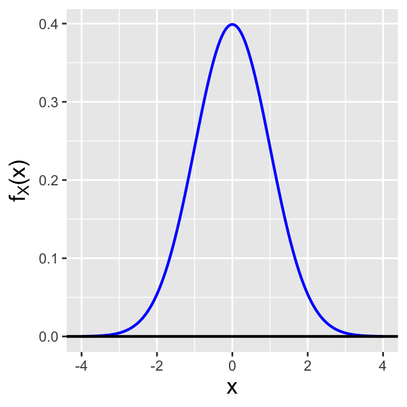
2 The Normal (and Related) Distributions
In this chapter, we illustrate probability and statistical inference concepts utilizing the normal distribution. The normal, also known in the physical sciences as the Gaussian distribution and, colloquially, the “bell curve,” is the most utilized probability distribution in all of data analysis.
Why are we choosing to focus on the normal distribution now, in this chapter?
- We often observe that the data that we generate in experiments are at least approximately normally distributed. And while other, more general families of distributions (such as the gamma distribution) might explain the data-generating process as well as the normal distribution does, it has the advantage of having intuitively easy-to-understand parameters: \(\mu\) for the mean, and \(\sigma^2\) for the variance (meaning that \(\sigma\) directly indicates the “width” of the region on the real-number line over which \(f_X(x)\) is effectively non-zero).
- The normal distribution is the limiting distibution for many other distributions (i.e., there are many families of distributions that, with the right choice(s) for parameter value(s), can mimic the shape of the normal).
- The normal distribution figures prominently in the Central Limit Theorem, which states that if we sample a sufficiently large number of data according to any distribution with finite variance, we can assume the sample mean to be approximately normally distributed.
2.1 Normal Distribution: Probability Density Function
What to take away from this section:
The normal distribution is a continuous, symmetric distribution with a probability density function whose shape and location along the real-number line is governed by two parameters: \(\mu\), the population mean, and \(\sigma^2\), the population variance.
The empirical rule: (very nearly) all data sampled according to a normal distribution lie in the range \([\mu - 3\sigma,\mu + 3\sigma]\), even though the domain of the distribution is \((-\infty,\infty)\).
Recall: a probability density function is one way to represent a continuous probablity distribution, and it has the properties (a) \(f_X(x) \geq 0\) and (b) \(\int_x f_X(x) dx = 1\), where the integral is over all values of \(x\) in the distribution’s domain.
Let \(X\) be a continuous random variable sampled according to a normal distribution with mean \(\mu\) and variance \(\sigma^2\), i.e., let \(X \sim \mathcal{N}(\mu,\sigma^2)\). The pdf for \(X\) is \[ f_X(x) = \frac{1}{\sqrt{2\pi\sigma^2}} \exp\left(-\frac{(x-\mu)^2}{2\sigma^2}\right) ~~~~~~ x \in (-\infty,\infty) \,. \] This pdf is symmetric around \(\mu\) (see Figure 2.1), with the area under the curve approaching 1 over the range \(\mu - 3\sigma \leq x \leq \mu + 3\sigma\). (The value of the integral of \(f_X(x)\) over this range is 0.9973. This gives rise to one aspect of the so-called empirical rule: if data are sampled according to a normal or normal-like distribution, we expect (nearly) all of the data to lie with three standard deviations of the population mean.)
2.1.1 Examples
2.1.1.1 Expected Value and Variance
Recall: the expected value of a continuously distributed random variable is \[ E[X] = \int_x x f_X(x) dx\,, \] where the integral is over all values of \(x\) within the domain of the pdf \(f_X(x)\). The expected value is equivalent to a weighted average, with the weight for each possible value of \(x\) given by \(f_X(x)\).
The expected value of a normal random variable \(X\) is \[ E[X] = \int_{-\infty}^\infty x \frac{1}{\sqrt{2\pi\sigma^2}} \exp\left(-\frac{(x-\mu)^2}{2\sigma^2}\right) dx \] To evaluate this integral, we implement variable substitution. Recall that the three steps of variable substitution are…
- to write down a viable substitution \(u = g(x)\);
- to then derive \(du = h(u,x) dx\); and finally
- to use \(u = g(x)\) to transform the bounds of the integral.
Because the integral bounds here are \(-\infty\) and \(\infty\), we choose \(u = g(x)\) such that we rewrite \((x-\mu)^2/\sigma^2\) as \(u^2\), so that eventually, as we will see, what remains in the integrand is a normal pdf for \(\mu = 0\) and \(\sigma^2 = 1\): \[ (1) ~~ u = \frac{x-\mu}{\sigma} ~~ \implies ~~ (2) ~~ du = \frac{1}{\sigma}dx \] and \[ (3) ~~ x = -\infty ~\implies~ u = -\infty ~~~ \mbox{and} ~~~ x = \infty ~\implies~ u = \infty \,, \] Thus \[\begin{align*} E[X] &= \int_{-\infty}^\infty (\sigma u + \mu) \frac{1}{\sqrt{2\pi\sigma^2}} \exp\left(-\frac{u^2}{2}\right) \sigma du \\ &= \int_{-\infty}^\infty \frac{\sigma u}{\sqrt{2 \pi}} \exp\left(-\frac{u^2}{2}\right) du + \int_{-\infty}^\infty \frac{\mu}{\sqrt{2 \pi}} \exp\left(-\frac{u^2}{2}\right) du \end{align*}\] The first integrand is the product of an odd function (\(u\)) and an even function (\(\exp(-u^2/2)\)), and thus the first integral evaluates to zero. As for the second integral: \[ E[X] = \int_{-\infty}^\infty \frac{\mu}{\sqrt{2 \pi}} \exp\left(-\frac{u^2}{2}\right) du = \mu \int_{-\infty}^\infty \frac{1}{\sqrt{2 \pi}} \exp\left(-\frac{u^2}{2}\right) du = \mu \,. \] As stated above, the integrand is a normal pdf with parameters \(\mu = 0\) and \(\sigma^2\) = 1, and since the bounds of the integral match that of the domain of the normal pdf, the value of the integral is 1.
Recall: the variance of a continuously distributed random variable is \[ V[X] = \int_x (x-\mu)^2 f_X(x) dx = E[X^2] - (E[X])^2\,, \] where the integral is over all values of \(x\) within the domain of the pdf \(f_X(x)\). The variance represents the square of the “width” of a probability density function, where by “width” we mean the range of values of \(x\) for which \(f_X(x)\) is effectively non-zero.
Here, \(V[X] = E[X^2] - (E[X])^2 = E[X^2] - \mu^2\). To determine \(E[X^2]\), we implement a similar variable substitution to the one above, except that now \[\begin{align*} E[X^2] &= \int_{-\infty}^\infty (\sigma t + \mu)^2 \frac{1}{\sqrt{2\pi\sigma^2}} \exp\left(-\frac{t^2}{2}\right) \sigma dt \\ &= \int_{-\infty}^\infty \frac{\sigma^2 t^2}{\sqrt{2 \pi}} \exp\left(-\frac{t^2}{2}\right) dt + \int_{-\infty}^\infty \frac{2 \mu \sigma t}{\sqrt{2 \pi}} \exp\left(-\frac{t^2}{2}\right) dt\\ &~~~~ + \int_{-\infty}^\infty \frac{\mu^2}{\sqrt{2 \pi}} \exp\left(-\frac{t^2}{2}\right) dt \,. \end{align*}\] The second integral is that of an odd function and thus evaluates to zero, and the third integral is, given results above, \(\mu^2\). This leaves \[ E[X^2] = \int_{-\infty}^\infty \frac{\sigma^2 t^2}{\sqrt{2 \pi}} \exp\left(-\frac{t^2}{2}\right) dt + \mu^2 \,. \] or \[ V[X] = \frac{\sigma^2}{\sqrt{2 \pi}} \int_{-\infty}^\infty t^2 \exp\left(-\frac{t^2}{2}\right) dt \,. \] As the integrand is not a normal pdf, we need to pursue integration by parts. Setting aside the constants outside the integral, we have that \[ \begin{array}{ll} u = -t & dv = -t \exp(-t^2/2) dt \\ du = -dt & v = \exp(-t^2/2) \end{array} \,, \] and so \[\begin{align*} \int_{-\infty}^\infty t^2 \exp\left(-\frac{t^2}{2}\right) dt &= \left. uv \right|_{-\infty}^{\infty} - \int_{-\infty}^\infty v du \\ &= - \left. t \exp(-t^2/2) \right|_{-\infty}^{\infty} + \int_{-\infty}^\infty \exp(-t^2/2) dt \\ &= 0 + \sqrt{2\pi} \int_{-\infty}^\infty \frac{1}{\sqrt{2\pi}} \exp(-t^2/2) dt \\ &= \sqrt{2\pi} \,. \end{align*}\] The first term evaluates to zero between for each bound, as \(e^{-t^2/2}\) goes to zero much faster than \(\vert t \vert\) goes to infinity. As for the second term: we recognize that the integrand is a normal pdf with mean zero and variance one…so the integral by definition evaluates to 1. In the end, after restoring the constants we set aside above, we have that \[ V[X] = \frac{\sigma^2}{\sqrt{2 \pi}} \sqrt{2\pi} = \sigma^2 \,. \]
2.1.1.2 Skewness
The skewness of a pmf or pdf is a metric that indicates its level of asymmetry. Fisher’s moment coefficient of skewness is \[ E\left[\left(\frac{X-\mu}{\sigma}\right)^3\right] \,. \] which, expanded out, becomes \[ \frac{E[X^3] - 3 \mu \sigma^2 - \mu^3}{\sigma^3} \,. \] What is the skewness of the normal distribution? At first, this appears to require a long and involved series of integrations so as to solve \(E[X^3]\). But let’s try to be more clever.
We know, from above, that the quantity \((\sigma t + \mu)^3\) will appear in the integral for \(E[X^3]\). Let’s expand this out: \[ \sigma^3 t^3 + 3 \sigma^2 \mu t^2 + 3 \sigma \mu^2 t + \mu^3 \,. \] Each of these terms will appear separately in integrals of \(\exp(-t^2/2)/\sqrt{2\pi}\) over the domain \(-\infty\) to \(\infty\). From above, what do we already know? First, we know that if \(t\) is raised to an odd power, the integral will be zero. This eliminates \(\sigma^3 t^3\) and \(3 \sigma \mu^2 t\). Second, we know that for the \(t^0\) term, the result will be \(\mu^3\), and we know that for the \(t^2\) term, the result will be \(3 \sigma^2 \mu\). Thus \[ E[X^3] = 3\sigma^2\mu + \mu^3 \] and the skewness is \[ \frac{3 \mu \sigma^2 + \mu^3 - 3 \mu \sigma^2 - \mu^3}{\sigma^3} = 0 \,. \] The skewness is zero, meaning that a normal pdf is symmetric around its mean \(\mu\).
2.1.1.3 Computing Probabilities
Before diving into this example, we will be clear that this is not the optimal way to compute probabilities associated with normal random variables, as we should utilize
R’spnorm()function, as shown in the next section. However, showing how to utilizeintegrate()is useful review. (We also show how to pass distribution parameters tointegrate(), which we did not do in Section 1.8.)
- If \(X \sim \mathcal{N}(10,4)\), what is \(P(8 \leq X \leq 13.5)\)?
To find this probability, we integrate over the normal pdf with mean \(\mu = 10\) and variance \(\sigma^2 = 4\). Visually, we are determining the area of the red-shaded region in Figure 2.2.
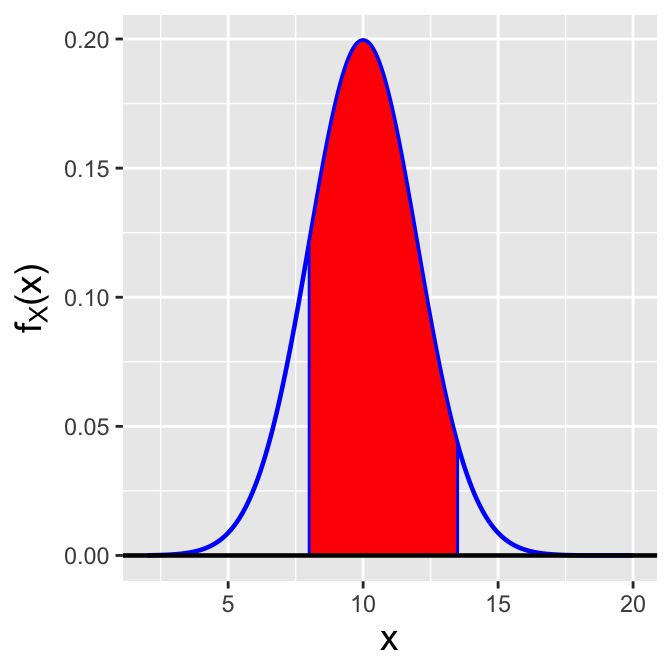
Code
integrand <- function(x,mu,sigma2) {
return(exp(-(x-mu)^2/2/sigma2)/sqrt(2*pi*sigma2))
}
integrate(integrand,8,13.5,mu=10,sigma2=4)$value[1] 0.8012856The result is 0.801. Note how the
integrand()function requires extra information above and beyond the value ofx. This information is passed in using the extra argumentsmuandsigma2, the values of which are set in the call tointegrate().
- If \(X \sim \mathcal{N}(13,5)\), what is \(P(8 \leq X \leq 13.5 \vert X < 14)\)?
Recall that \(P(a \leq X \leq b \vert X \leq c) = P(a \leq X \leq b)/P(X \leq c)\), assuming that \(a < b < c\). So this probability is, visually, the ratio of the area of the brown-shaded region in Figure 2.3 to the area of the red-shaded region underlying it. We can reuse the
integrand()function from above, calling it twice:
Code
integrate(integrand,8,13.5,mu=13,sigma2=5)$value /
integrate(integrand,-Inf,14,mu=13,sigma2=5)$value[1] 0.8560226The result is 0.856. Note how we use
-Infin the second call tointegrate():Inf, likepi, is a reserved word in theRprogramming language.
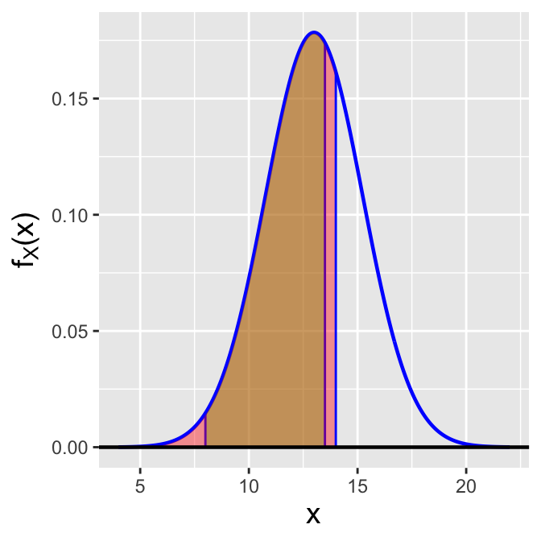
2.2 Normal Distribution: Cumulative Distribution Function
What to take away from this section:
The cumulative distribution function, or cdf, for a normal distribution contains the error function, and so we cannot work with this function analytically. (Historically this motivated the publication and use of statistical tables.)
Foreshadowing: the non-analytic nature of the normal cdf will motivate us to perform any normal-related statistical inference using computer codes.
Recall: the cumulative distribution function, or cdf, is another means by which to encapsulate information about a probability distribution. For a continuous distribution, it is defined as \(F_X(x) = \int_{y \leq x} f_Y(y) dy\), and it is defined for all values \(x \in (-\infty,\infty)\), with \(F_X(-\infty) = 0\) and \(F_X(\infty) = 1\).
The cdf for the normal distribution is the “accumulated probability” between \(-\infty\) and the functional input \(x\): \[ F_X(x) = \int_{-\infty}^x f_Y(y) dy = \int_{-\infty}^x \frac{1}{\sqrt{2\pi\sigma^2}} \exp\left(-\frac{(y-\mu)^2}{2\sigma^2}\right) dy \,. \] (See Figure 2.4.) Recall that because \(x\) is the upper bound of the integral, we have to replace \(x\) with some other variable in the integrand itself. (Here we choose \(y\). The choice is arbitrary.)
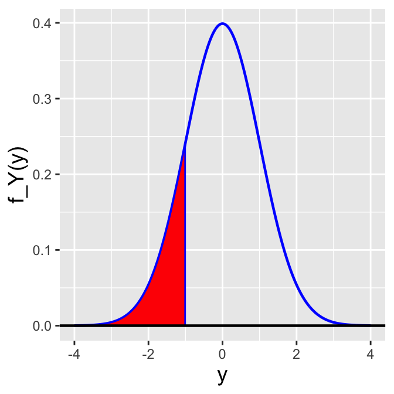
To evaluate this integral, we again implement a variable substitution strategy: \[
(1) ~~ t = \frac{(y-\mu)}{\sqrt{2}\sigma} ~~\implies~~ (2) ~~ dt = \frac{1}{\sqrt{2}\sigma}dy
\] and \[
(3) ~~ y = -\infty ~\implies~ t = -\infty ~~~ \mbox{and} ~~~ y = x ~\implies~ t = \frac{(x-\mu)}{\sqrt{2}\sigma} \,,
\] so \[\begin{align*}
F_X(x) &= \int_{-\infty}^x \frac{1}{\sqrt{2\pi\sigma^2}} \exp\left(-\frac{(y-\mu)^2}{2\sigma^2}\right) dy \\
&= \int_{-\infty}^{\frac{x-\mu}{\sqrt{2}\sigma}} \frac{1}{\sqrt{2\pi\sigma^2}} \exp(-t^2) \sqrt{2}\sigma dt = \frac{1}{\sqrt{\pi}} \int_{-\infty}^{\frac{x-\mu}{\sqrt{2}\sigma}} \exp(-t^2) dt \,.
\end{align*}\] The error function is defined as \[
\mbox{erf}(z) = \frac{2}{\sqrt{\pi}} \int_0^z \exp(-t^2)dt \,,
\] which is close to, but not quite, our expression for \(F_X(x)\). (The integrand is the same, but the bounds of integration differ.) To match the bounds: \[\begin{align*}
\frac{2}{\sqrt{\pi}} \int_{-\infty}^z \exp(-t^2)dt &= \frac{2}{\sqrt{\pi}} \left( \int_{-\infty}^0 \exp(-t^2)dt + \int_0^z \exp(-t^2)dt \right) \\
&= \frac{2}{\sqrt{\pi}} \left( -\int_0^{-\infty} \exp(-t^2)dt + \int_0^z \exp(-t^2)dt \right) \\
&= -\mbox{erf}(-\infty) + \mbox{erf}(z) = \mbox{erf}(\infty) + \mbox{erf}(z) = 1 + \mbox{erf}(z) \,.
\end{align*}\] Here we make use of two properties of the error function: \(\mbox{erf}(-z) = -\mbox{erf}(z)\), and \(\mbox{erf}(\infty)=1\). Thus \[
\frac{1}{\sqrt{\pi}} \int_{-\infty}^z \exp(-t^2)dt = \frac{1}{2}[1 + \mbox{erf}(z)] \,.
\] By matching this expression with that given for \(F(x)\) above, we see that \[
F_X(x) = \frac{1}{2}\left[1 + \mbox{erf}\left(\frac{x-\mu}{\sqrt{2}\sigma}\right)\right] \,.
\] In Figure 2.5, we plot \(F_X(x)\). We note that while the error function is available to use directly in some R packages, it is provided only indirectly in base-R, via the pnorm() function. (In general, one computes cdf values for probability distributions in R using functions prefixed with p: pnorm(), pbinom(), punif(), etc.) Examining this figure, we see that this cdf abides by the properties listed in Section 1.9: \(F(-\infty) = 0\) and \(F(\infty) = 1\), and it is (strictly) monotonically increasing.
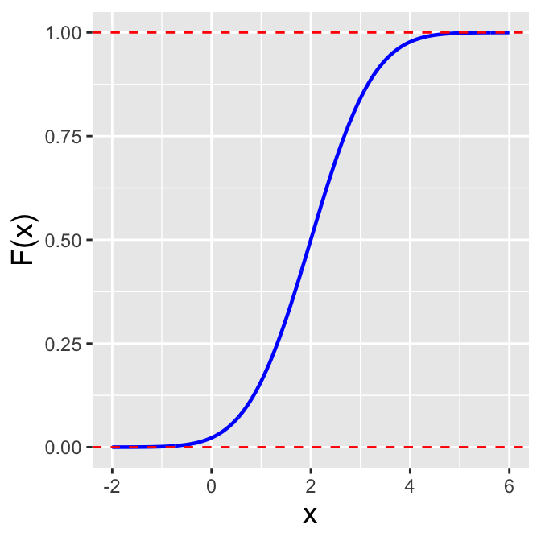
To compute the probability \(P(a < X < b)\), we make use of the cdf. (As a reminder: if we have the cdf at our disposal and need to compute a probability…we should use it!) \[\begin{align*}
P(a < X < b) &= P(X < b) - P(X < a) \\
&= F(b) - F(a) = \frac{1}{2}\left[ \mbox{erf}\left(\frac{b-\mu}{\sqrt{2}\sigma}\right) - \mbox{erf}\left(\frac{a-\mu}{\sqrt{2}\sigma}\right)\right] \,,
\end{align*}\] which is more simply rendered in R as
pnorm(b,mean=mu,sd=sigma) - pnorm(a,mean=mu,sd=sigma)Let’s look again at Figure 2.4. What if, instead of asking the question “what is the shaded area under the curve,” which is answered by integrating the normal pdf from \(-\infty\) to a specified coordinate \(x\), we instead ask the question “what value of \(x\) is associated with a given area under the curve”? This is the inverse problem, one that we can solve so long as the relationship between \(x\) and \(F(x)\) is bijective (i.e., one-to-one): \(x = F_X^{-1}[F_X(x)]\) for all \(x\).
Recall: an inverse cdf function \(F_X^{-1}(q)\) takes as input a distribution quantile \(q \in [0,1]\) and returns the value of \(x\) such that \(q = F_X(x)\).
Let \(q = F_X(x)\). Then, for the case of the normal cdf, we can write that \[
x = \sqrt{2} \sigma~ \mbox{erf}^{-1}\left(2q-1\right) + \mu \,,
\] where \(\mbox{erf}^{-1}(\cdot)\) is the inverse error function. Like the error function itself, the inverse error function is available for use in some R packages, but it is most commonly accessed, indirectly via the base-R function qnorm(). (In general, one computes inverse cdf values for probability distributions in R using functions prefixed with q: qnorm(), qpois(), qbeta(), etc.)
2.2.1 Examples
2.2.1.1 Computing Probabilities
We utilize the two examples provided in the last section to show how one would compute probabilities associated with the normal pdf by hand. But we note that a computer is still needed to derive the final numbers!
- If \(X \sim \mathcal{N}(10,4)\), what is \(P(8 \leq X \leq 13.5)\)?
We have that \[ P(8 \leq X \leq 13.5) = P(X \leq 13.5) - P(X \leq 8) = F_X(13.5 \vert 10,4) - F_X(8 \vert 10,4) \,. \] Well, this is where analytic computation ends, as we cannot evaluate the cdfs using pen and paper. Instead, we utilize the function
pnorm():
Code
pnorm(13.5,mean=10,sd=sqrt(4)) - pnorm(8,mean=10,sd=sqrt(4))[1] 0.8012856We get the same result as we got in the last section: 0.801.
- If \(X \sim \mathcal{N}(13,5)\), what is \(P(8 \leq X \leq 13.5 \vert X < 14)\)?
Knowing that we cannot solve this by hand, we go directly to
R:
Code
(pnorm(13.5,mean=13,sd=sqrt(5)) - pnorm(8,mean=13,sd=sqrt(5))) /
pnorm(14,mean=13,sd=sqrt(5))[1] 0.8560226The answer, as before, is 0.856.
But let’s go ahead and add some complexity here. How would we answer the following question?
- If \(\mu = 20\) and \(\sigma^2 = 3\), what is the value of \(a\) such that \(P(20 - a \leq X \leq 20 + a) = 0.48\)?
(The first thing to thing about here is: does the value of \(\mu\) actually matter? The answer here is no. Think about why that may be.)
We have that \[\begin{align*} P(20-a \leq X \leq 20+a) = 0.48 &= P(X \leq 20+a) - P(X \leq 20-a)\\ &= F_X(20+a \vert 20,3) - F_X(20-a \vert 20,3) \,. \end{align*}\] Hmm…we’re stuck. We cannot invert this equation so as to isolate \(a\)…or can we? Remember that a normal pdf is symmetric around the mean. Hence \[ P(X \leq 20+a) = 1 - P(X > 20+a) = 1 - P(X \leq 20-a) \,. \] The area under the normal pdf from \(20+a\) to \(\infty\) is the same as the area from \(-\infty\) to \(20-a\). So… \[\begin{align*} P(20-a \leq X \leq 20+a) &= 1 - F_X(20-a \vert 20,3) - F_X(20-a \vert 20,3)\\ &= 1 - 2F_X(20-a \vert 20,3) \,, \end{align*}\] or \[ F_X(20-a \vert 20,3) = \frac{1}{2}[1 - P(20-a \leq X \leq 20+a)] = \frac{1}{2} 0.52 = 0.26 \,. \] Now, we invert the cdf and rearrange terms to get: \[ a = 20 - F_X^{-1}(0.26 \vert 20,3) \,, \] and once again, we transition to
R:
Code
a <- 20 - qnorm(0.26,mean=20,sd=sqrt(3))The result is \(a = 1.114\), i.e., \(P(18.886 \leq X \leq 21.114) = 0.48\).
The reader might quibble with our assertion that \(\mu\) doesn’t matter here, because, after all, the value of \(\mu\) appears in the final code. However, if we changed both values of 20 to some other, arbitrary value, we would derive the same value for \(a\).
2.2.1.2 Visualization
Let’s say we want to make a figure like that in Figure 2.4, where we are given that our normal distribution has mean \(\mu = 10\) and variance \(\sigma^2 = 4\), and we want to overlay the shaded region associated with \(F_X(9)\). How do we do this?
The first step is to determine the population standard deviation. Here, that would be \(\sigma = \sqrt{4} = 2\).
The second step is to determine an appropriate range of values of \(x\) over which to plot the cdf. Here we will assume that \(\mu - 4\sigma\) to \(\mu + 4\sigma\) is sufficient; this corresponds to \(x = 2\) to \(x = 18\).
The third step is to code. The result of our coding is shown in Figure 2.6.
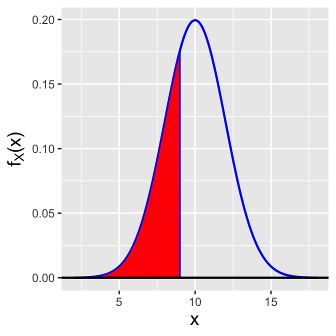
For the polygon, the first \((x,y)\) pair is \((9,0)\), the second is \((2,0)\) (where \(x = 2\) is the lower limit of the plot…there is no need to take the polygon further “to the left”), and the next set are \((x,f_X(x))\) for all \(x\) values \(\leq 9\). The last point is the first point: this closes the polygon.
2.3 Method of Moment-Generating Functions
What to take away from this section:
A moment-generating function or mgf is, like a probability mass or density function or like a cumulative distribution function, a means by which to encapsulate the information contained in a probability distribution.
An mgf is derived by computing the expected value \(E[e^{tX}]\).
Our primary use for an mgf is as a tool that allows us to attempt to identify the sampling distributions of statistics, such as the sample mean or the sample sum…this is the method of moment-generating functions.
Foreshadowing: in the next section, we will use the method of mgfs to determine the distributions associated with linear functions of normally distributed random variables.
For previous material on sampling distributions, see Section 1.12.2.
In Section 1.7, we learned that if we linearly transform a random variable, i.e., if we define a new random variable \(Y = \sum_{i=1}^n a_i X_i + b\), where \(\{a_1,\ldots,a_n\}\) and \(b\) are constants, then \[ E[Y] = E\left[\sum_{i=1}^n a_i X_i + b\right] = b + \sum_{i=1}^n a_i E[X_i] \,. \] Furthermore, if we assume that the \(X_i\)’s are independent random variables, then the variance of \(Y\) is \[ V[Y] = V\left[\sum_{i=1}^n a_i X_i + b\right] = \sum_{i=1}^n a_i^2 V[X_i] \,. \] (Because the \(X_i\)’s are independent, we do not need to take into account any covariance, or linear dependence, between the \(X_i\)’s, simplifying the equation for \(V[Y]\). We discuss how covariance is taken into account in Section 6.3.) So we know where \(Y\) is centered and we know how “wide” it is. However, we don’t yet know the shape of the distribution for \(Y\), i.e., we don’t yet know \(f_Y(y)\). To show how we might derive the distribution, we introduce a new concept, that of the moment-generating function, or mgf.
2.3.1 Moment-Generating Functions
In Section 1.7, we briefly introduced the concept of distribution moments, i.e., the expected values \(E[X^k]\) and \(E[(X-\mu)^k]\). The moments of a given probability distribution are unique, and can often (but not always) be neatly encapsulated in a single mathematical expression: the moment-generating function (or mgf). To derive an mgf for a given distribution, we invoke the Law of the Unconscious Statistician: \[\begin{align*} m_X(t) = E[e^{tX}] &= \int_x e^{tX} f_X(x) \\ &= \int_x \left[1 + tx + \frac{t^2}{2!}x^2 + \cdots \right] f_X(x) \\ &= \int_x \left[ f_X(x) + t x f_X(x) + \frac{t^2}{2!} x^2 f_X(x) + \cdots \right] \\ &= \int_x f_X(x) + t \int_x x f_X(x) + \frac{t^2}{2!} \int_x x^2 f_X(x) + \cdots \\ &= 1 + t E[X] + \frac{t^2}{2!} E[X^2] + \cdots \,. \end{align*}\] (Note that what statisticians call a moment-generating function is what mathematicians would call a Laplace tranform.) An mgf only exists for a particular distribution if there is a constant \(b\) such that \(m_X(t)\) is finite for \(\vert t \vert < b\). (This is a detail that we will not concern ourselves with here, i.e., we will assume that the expressions we derive for \(E[e^{tX}]\) are valid expressions.) An example of a distribution for which the mgf does not exist is the Cauchy distribution.
Moment-generating functions are called such because, as one might guess, they generate moments (via differentiation): \[\begin{align*} \left.\frac{d^k m_X(t)}{dt^k}\right|_{t=0} &= \frac{d^k}{dt^k} \left. \left[1 + t E[X] + \frac{t^2}{2!} E[X^2] + \cdots \right]\right|_{t=0}\\ &= \left. \left[E[X^k] + tE[X^{k+1}] + \cdots\right] \right|_{t=0} = E[X^k] \,. \end{align*}\] The \(k^{\rm th}\) derivative of an mgf, with \(t\) set to zero, yields the \(k^{\rm th}\) moment \(E[X^k]\).
2.3.2 Sampling Distributions via the Method of Moment-Generating Functions
But, the reader may ask, why are mgfs important here, in the context of normal random variables? We already know all the moments of this distribution that we care to know: they are written down (or can be derived directly via the integration of \(x^k f_X(x)\)). The answer is that a remarkably useful property of mgfs is the following: if \(Y = b + \sum_{i=1}^n a_i X_i\), where the \(X_i\)’s are independent random variables sampled according to a distribution whose mgf exists, then \[ m_Y(t) = e^{bt} m_{X_1}(a_1 t) m_{X_2}(a_2 t) \cdots m_{X_n}(a_n t) = e^{bt} \prod_{i=1}^n m_{X_i}(a_i t) \,, \] where \(m_{X_i}(\cdot)\) is the moment-generating function for the random variable \(X_i\). An mgf is typically written as a function of \(t\); the notation \(m_{X_i}(a_it)\) simply means that when we evaluate the above equation, wherever there is a \(t\), we plug in \(a_it\). Here’s the key point: if we recognize the form of \(m_Y(t)\) as matching that of the mgf for a given distribution, then we know the sampling distribution for \(Y\).
Below, we show how the method of moment-generating functions allows us to derive sampling distributions for linearly transformed normal random variables.
For more on how we derive sampling distributions in practice, go to Section 2.4, Section 2.5, Section 3.4, Section 4.4, and Section 5.2. What happens if we cannot derive a sampling distribution? We can simulate or utilize the bootstrap algorithm. See, e.g., ?sec-sec-chap4bootstrap.
2.3.3 Examples
2.3.3.1 MGF: Probability Mass Function
Let’s assume that we sample data from the following pmf:
| \(x\) | \(p_X(x)\) |
|---|---|
| 0 | 0.2 |
| 1 | 0.3 |
| 2 | 0.5 |
What is the mgf for this distribution? What is its expected value? If we sample two data, \(X_1\) and \(X_2\), independently from this distribution, what is the mgf of the sampling distribution for \(Y = 2X_1 - X_2\)?
To derive the mgf, we compute \(E[e^{tX}]\): \[\begin{align*} m_X(t) &= E[e^{tX}] = \sum_x e^{tx} p_X(x) = 1 \cdot 0.2 + e^t \cdot 0.3 + e^{2t} \cdot 0.5\\ &= 0.2 + 0.3 e^t + 0.5 e^{2t} \,. \end{align*}\] This cannot be simplified, and thus this is the final answer. As far as the expected value is concerned: we could simply compute \(E[X] = \sum_x x p_X(x)\), but since we have the mgf now, we can use it too: \[ E[X] = \left.\frac{d}{dt}m_X(t)\right|_{t=0} = \left. (0.3 e^t + e^{2t})\right|_{t=0} = 0.3 + 1 = 1.3 \,. \] As for the linear function \(Y = 2X_1 - X_2\): if we refer back to the equation above, we see that \[\begin{align*} m_Y(t) &= e^{bt} m_{X_1}(a_1t) m_{X_2}(a_2t) = e^{0t} m_{X_1}(2t) m_{X_2}(-1t) \\ &= \left(0.2 + 0.3e^{2t} + 0.5e^{4t}\right) \left(0.2 + 0.3e^{-t} + 0.5e^{-2t}\right) \\ &= 0.19 + 0.10 e^{-2t} + 0.06 e^{-t} + 0.09 e^t + 0.31 e^{2t} + 0.15 e^{3t} + 0.10 e^{4t} \,. \end{align*}\]
2.3.3.2 MGF: Probability Density Function
Let’s assume that we now sample data from the following pdf: \[ f_X(x) = \frac{1}{\theta} e^{-x/\theta} \,, \] where \(x \geq 0\) and \(\theta > 0\). What is the mgf of this distribution? If we sample two data, \(X_1\) and \(X_2\), independently from this distribution, what is the mgf of the sampling distribution for \(Y = X_1 + X_2\)?
To derive the mgf, we compute \(E[e^{tX}]\): \[\begin{align*} E[e^{tX}] &= \int_0^\infty e^{tx} \frac{1}{\theta} e^{-x/\theta} dx = \frac{1}{\theta} \int_0^\infty e^{-x\left(\frac{1}{\theta}-t\right)} dx \\ &= \frac{1}{\theta} \int_0^\infty e^{-x/\theta'} dx = \frac{\theta'}{\theta} = \frac{1}{\theta} \frac{1}{(1/\theta - t)} = \frac{1}{(1-\theta t)} = (1-\theta t)^{-1} \,. \end{align*}\] The expected value of this distribution can be computed via the integral \(\int_x x f_X(x) dx\), but again, as we now have the mgf, \[ E[X] = \left.\frac{d}{dt}m_X(t)\right|_{t=0} = \left. -(1-\theta t)^{-2} (-\theta)\right|_{t=0} = \theta \,. \] As for the linear function \(Y = X_1 + X_2\): if we refer back to the equation above, we see that \[\begin{align*} m_Y(t) &= e^{bt} m_{X_1}(a_1t) m_{X_2}(a_2t) = e^{0t} m_{X_1}(t) m_{X_2}(t) \\ &= (1-\theta t)^{-1} (1-\theta t)^{-1} = (1 - \theta t)^{-2} \,. \end{align*}\] While the reader would not know this yet, this is the mgf for a gamma distribution with shape parameter \(a = 2\) and scale parameter \(b = \theta\). We will officially introduce the gamma distribution in Section 4.3.3.
2.3.3.3 MGF: Normal Distribution
The moment-generating function for a normal distribution is \[\begin{align*} m_X(t) &= E[e^{tX}] = \int_{-\infty}^\infty e^{tx} \frac{1}{\sqrt{2\pi \sigma^2}} \exp\left(-\frac{(x-\mu)^2}{2\sigma^2}\right) dx \\ &= \frac{1}{\sqrt{2\pi \sigma^2}} \int_{-\infty}^\infty \exp\left(-\frac{x^2}{2\sigma^2}\right) \exp\left(x(\frac{\mu}{\sigma^2}+t)\right) \exp\left(-\frac{\mu^2}{2\sigma^2}\right) dx \\ &= \frac{1}{\sqrt{2\pi \sigma^2}} \int_{-\infty}^\infty \exp\left(-\frac{x^2}{2\sigma^2}\right) \exp\left(\frac{x\mu'}{\sigma^2}\right) \exp\left(-\frac{\mu^2}{2\sigma^2}\right) dx \,, \end{align*}\] where \(\mu' = \mu + t\sigma^2\). To solve this integral, we utilize the method of “completing the square.” We know that \[ (x - \mu')^2 = x^2 - 2x\mu' + (\mu')^2 \,, \] so we will introduce a new term that is equal to 1 into the integrand: \[ \exp\left(-\frac{(\mu')^2}{2\sigma^2}\right) \exp\left(\frac{(\mu')^2}{2\sigma^2}\right) \,. \] Now we have that
\[\begin{align*} m_X(t) &= \frac{1}{\sqrt{2\pi \sigma^2}} \int_{-\infty}^\infty \exp\left(-\frac{x^2}{2\sigma^2}\right) \exp\left(\frac{x\mu'}{\sigma^2}\right) \exp\left(-\frac{(\mu')^2}{2\sigma^2}\right) \exp\left(\frac{(\mu')^2}{2\sigma^2}\right) \exp\left(-\frac{\mu^2}{2\sigma^2}\right) dx \\ &= \frac{1}{\sqrt{2\pi \sigma^2}} \exp\left(\frac{(\mu')^2}{2\sigma^2}\right) \exp\left(-\frac{\mu^2}{2\sigma^2}\right) \int_{-\infty}^\infty \exp\left(-\frac{x^2}{2\sigma^2}\right) \exp\left(\frac{2x\mu'}{2\sigma^2}\right) \exp\left(-\frac{(\mu')^2}{2\sigma^2}\right) dx \\ &= \exp\left(\frac{(\mu')^2}{2\sigma^2}\right) \exp\left(-\frac{\mu^2}{2\sigma^2}\right) \int_{-\infty}^\infty \frac{1}{\sqrt{2\pi \sigma^2}} \exp\left(-\frac{(x-\mu')^2}{2\sigma^2}\right) dx \\ &= \exp\left(\frac{(\mu')^2}{2\sigma^2}\right) \exp\left(-\frac{\mu^2}{2\sigma^2}\right) \,. \end{align*}\]
The integral disappears because it is the integral of the pdf for a \(\mathcal{N}(\mu',\sigma^2)\) distribution over its entire domain; that integral is 1. Continuing…
\[\begin{align*} m_X(t) &= \frac{1}{\sqrt{2\pi \sigma^2}} \int_{-\infty}^\infty \exp\left(-\frac{x^2}{2\sigma^2}\right) \exp\left(\frac{x\mu'}{\sigma^2}\right) \exp\left(-\frac{(\mu')^2}{2\sigma^2}\right) \exp\left(\frac{(\mu')^2}{2\sigma^2}\right) \exp\left(-\frac{\mu^2}{2\sigma^2}\right) dx \\ &= \frac{1}{\sqrt{2\pi \sigma^2}} \exp\left(\frac{(\mu')^2}{2\sigma^2}\right) \exp\left(-\frac{\mu^2}{2\sigma^2}\right) \int_{-\infty}^\infty \exp\left(-\frac{x^2}{2\sigma^2}\right) \exp\left(\frac{2x\mu'}{2\sigma^2}\right) \exp\left(-\frac{(\mu')^2}{2\sigma^2}\right) dx \\ &= \exp\left(\frac{(\mu')^2}{2\sigma^2}\right) \exp\left(-\frac{\mu^2}{2\sigma^2}\right) \int_{-\infty}^\infty \frac{1}{\sqrt{2\pi \sigma^2}} \exp\left(-\frac{(x-\mu')^2}{2\sigma^2}\right) dx \\ &= \exp\left(\frac{(\mu')^2}{2\sigma^2}\right) \exp\left(-\frac{\mu^2}{2\sigma^2}\right) = \exp\left(\frac{\mu^2}{2\sigma^2}\right) \exp\left(\frac{2\mu\sigma^2t}{2\sigma^2}\right) \exp\left(\frac{\sigma^4t^2}{2\sigma^2}\right) \exp\left(-\frac{\mu^2}{2\sigma^2}\right) \\ &= \exp\left(\mu t\right) \exp\left(\frac{\sigma^2t^2}{2}\right) = \exp\left(\mu t + \frac{\sigma^2t^2}{2} \right) \,. \end{align*}\]
We will utilize this function in the next section below to derive the mgfs for linear functions of normal random variables.
2.4 Normal Distribution: Linear Functions of Random Variables
What to take away from this section:
The method of moment-generating functions allows us to determine that…
the sum of \(n\) independent but not necessarily identically distributed normal random variables is itself normally distributed; and
the mean of \(n\) iid normal random variables is itself normally distributed.
Foreshadowing: these results will allow us to make statistical inferences about the normal population mean \(\mu\), given \(n\) iid normal random variables, when the population variance \(\sigma^2\) is known.
For previous material on sampling distributions, see Section 2.3.
Suppose we are given \(n\) normal random variables \(\{X_1,\ldots,X_n\}\), which are independent (but, for now, not necessarily identically distributed), and we wish to determine the distribution of the sum \(Y = b + \sum_{i=1}^n a_i X_i\). As shown above, the moment-generating function for any one of the random variables is \[ m_{X_i}(t) = \exp\left(\mu_i t + \sigma_i^2\frac{t^2}{2} \right) \,. \] Thus, by the method of moment-generating functions, \[\begin{align*} m_Y(t) &= \exp(bt) \prod_{i=1}^n m_{X_i}(a_it) \\ &= \exp(bt) \exp\left(\mu_1a_1t+a_1^2\sigma_1^2\frac{t^2}{2}\right) \cdot \cdots \cdot \exp\left(\mu_na_nt+a_n^2\sigma_n^2\frac{t^2}{2}\right) \\ &= \exp\left[ (b+a_1\mu_1+\cdots+a_n\mu_n)t + \left(a_1^2\sigma_1^2 + \cdots + a_n^2\sigma_n^2\right)\frac{t^2}{2} \right] \\ &= \exp\left[ \left(b+\sum_{i=1}^n a_i\mu_i\right)t + \left(\sum_{i=1}^n a_i^2\sigma_i^2\right)\frac{t^2}{2} \right] \,. \end{align*}\] The result retains the functional form of a normal mgf, and thus we conclude that \(Y\) itself is a normally distributed random variable, with mean \(b+\sum_{i=1}^n a_i\mu_i\) and variance \(\sum_{i=1}^n a_i^2\sigma_i^2\): \[ Y \sim \mathcal{N}\left(b+\sum_{i=1}^n a_i\mu_i,\sum_{i=1}^n a_i^2\sigma_i^2\right) \,. \] If the data are identically distributed, then we can re-express the above as \[ Y \sim \mathcal{N}\left(b+(\sum_{i=1}^n a_i)\mu,(\sum_{i=1}^n a_i^2)\sigma^2\right) \,. \] We will utilize this second result extensively…and we will start by looking at the sample mean.
If \(Y = \bar{X} = (\sum_{i=1}^n X_i)/n\), then \(b = 0\) and each of the \(a_i\)’s is \(1/n\). Thus \[ Y = \bar{X} \sim \mathcal{N}\left(\mu \sum_{i=1}^n \frac{1}{n},\sigma^2 \sum_{i=1}^n \frac{1}{n^2} \right) ~~~~~~\mbox{or}~~~~~~ \bar{X} \sim \mathcal{N}\left(\mu,\frac{\sigma^2}{n}\right) \,. \] We see that the sample mean that we observe in any given experiment is drawn according to a normal distribution that is centered on the true mean and that has a width that goes to zero as \(n \rightarrow \infty\).
2.4.1 Examples
2.4.1.1 Computing Probabilities
Let \(X_1 \sim \mathcal{N}(10,4^2)\) and \(X_2 \sim \mathcal{N}(8,2^2)\) be two independent random variables, and let \(Y = X_1 - X_2\). What is \(P(0 \leq Y \leq 2)\)?
From above, we see that \[\begin{align*} Y &\sim \mathcal{N}\left(b + \sum_{i=1}^n a_i \mu_i,\sum_{i=1}^n a_i^2 \sigma_i^2\right)\\ \Rightarrow ~~~ Y &\sim \mathcal{N}\left(10-8,4^2+2^2\right)\\ \Rightarrow ~~~ Y &\sim \mathcal{N}(2,20) \,. \end{align*}\] Thus the probability we seek is \[ P(0 \leq Y \leq 2) = P(Y \leq 2) - P(Y \leq 0) = F_Y(2) - F_Y(0) \,, \] or
Code
pnorm(2, mean = 2, sd = sqrt(20)) - pnorm(0, mean = 2, sd = sqrt(20))[1] 0.1726396There is a 17.3% chance that when we sample \(X_1\) and \(X_2\), the difference \(X_1 - X_2\) has a value between 0 and 2.
2.4.1.2 Sample Sum
If \(Y = X_+ = \sum_{i=1}^n X_i)\), then we know that \(b = 0\) and each of the \(a_i\)’s is \(1\). Thus \[ Y = X_+ \sim \mathcal{N}\left(\mu (\sum_{i=1}^n 1),\sigma^2 (\sum_{i=1}^n 1^2) \right) ~~~~~~\mbox{or}~~~~~~ X_+ \sim \mathcal{N}\left(n\mu,n\sigma^2\right) \,. \]
2.5 Normal Distribution: Standardization
What to take away from this section:
The method of moment-generating functions allows us to determine that…
- if \(X\) is a normal random variable, the standardized quantity \(Z = (X-\mu)/\sigma\) is distributed according to a standard normal distribution (i.e., a normal distribution for which \(\mu = 0\) and \(\sigma^2 = 1\)).
Use of the standard normal distribution, the basis of the so-called \(z\)-tables of standard statistical textbooks, has now become largely superseded as we can use computers to work with any normal distribution directly.
For previous material on sampling distributions, see Section 2.3.
To standardize a random variable that is sampled according to any distribution, we subtract off its expected value and then divide by its standard deviation: \[ Z = \frac{X - E[X]}{\sqrt{V[X]}} \,. \] If \(X \sim \mathcal{N}(\mu,\sigma^2)\), and thus if \(Z = (X-\mu)/\sigma\), what is \(f_Z(z)\)? Going back to the result we wrote down above, \[ Y \sim \mathcal{N}\left(b+(\sum_{i=1}^n a_i)\mu,(\sum_{i=1}^n a_i^2)\sigma^2\right) \,. \] Here, \(Y = Z\), with \(n=1\), \(a_1 = 1/\sigma\), and \(b = -\mu/\sigma\). Thus \[ Z \sim \mathcal{N}\left(-\frac{\mu}{\sigma}+\frac{1}{\sigma}\mu,\frac{1}{\sigma^2}\sigma^2\right) ~~~~~~\mbox{or}~~~~~~ Z \sim \mathcal{N}\left(0,1\right) \,. \] \(Z\) is a standard normal random variable. Its probability density function is \[ f_Z(z) = \frac{1}{\sqrt{2\pi}} \exp\left(-\frac{z^2}{2}\right) ~~~~ z \in (-\infty,\infty) \,, \] while its cumulative distribution function is \[ F_Z(z) = \Phi(z) = \frac{1}{2}\left[1 + \mbox{erf}\left(\frac{z}{\sqrt{2}}\right)\right] \,. \] By historical convention, the cdf of the standard normal distribution is denoted \(\Phi(z)\) (“phi” of z, pronounced “fye”) rather than \(F_Z(z)\).
Statisticians often standardize normally distributed random variables and perform probability calculations using the standard normal. Strictly speaking, standardization is unnecessary in the age of computers, but in the pre-computer era standardization greatly simplified probability calculations since all one needed was a single table of values of \(\Phi(z)\): \[ P(a \leq Z \leq b) = \Phi(b) - \Phi(a) \,. \] One can argue that standardization is useful for mental calculation: for instance, mentally computing an approximate value for \(P(6 < X < 12)\) when \(X \sim \mathcal{N}(9,9)\) can be quite a bit more taxing than if we were to work with the equivalent expression \(P(-1 < Z < 1)\), which a skilled practitioner would know right away to be \(\approx\) 0.68.
| \((a,b)\) | \(\pm\) 1 | \(\pm\) 2 | \(\pm\) 3 | \(\pm\) 1.645 | \(\pm\) 1.960 | \(\pm\) 2.576 |
|---|---|---|---|---|---|---|
| \(P(a \leq Z \leq b)\) | 0.6837 | 0.9544 | 0.9973 | 0.90 | 0.95 | 0.99 |
2.5.1 Example
2.5.1.1 Computing Probabilities
Here we will reexamine the three examples that we worked through above in the section in which we introduce the normal cumulative distribution function; here, we will utilize standardization. Note: the final results will all be the same!
- If \(X \sim \mathcal{N}(10,4)\), what is \(P(8 \leq X \leq 13.5)\)?
We standardize \(X\): \(Z = (X-\mu)/\sigma = (X-10)/2\). Hence the bounds of integration are \((8-10)/2 = -1\) and \((13.5-10)/2 = 1.75\), and the probability we seek is \[ P(-1 \leq Z \leq 1.75) = \Phi(1.75) - \Phi(-1) \,. \] To compute the final number, we utilize
pnorm()with its default values ofmean = 0andsd = 1:
Code
pnorm(1.75) - pnorm(-1)[1] 0.8012856The probability is 0.801.
- If \(X \sim \mathcal{N}(13,5)\), what is \(P(8 \leq X \leq 13.5 \vert X < 14)\)?
The integral bounds are \((8-13)/\sqrt{5} = -\sqrt{5}\) and \((13.5-13)/\sqrt{5} = \sqrt{5}/10\) in the numerator, and \(-\infty\) and \((14-13/\sqrt{5} = \sqrt{5}/5\) in the denominator. In
R:
Code
(pnorm(sqrt(5) / 10) - pnorm(-sqrt(5))) / pnorm(sqrt(5) / 5)[1] 0.8560226The probability is 0.856.
- If \(\mu = 20\) and \(\sigma^2 = 3\), what is the value of \(a\) such that \(P(20-a \leq X \leq 20+a) = 0.48\)?
Here, \[\begin{align*} P(20-a \leq X \leq 20+a) &= P\left( \frac{20-a-20}{\sqrt{3}} \leq \frac{X - 20}{\sqrt{3}} \leq \frac{20+a-20}{\sqrt{3}}\right)\\ &= P\left(-\frac{a}{\sqrt{3}} \leq Z \leq \frac{a}{\sqrt{3}} \right) \,, \end{align*}\] and we utilize the symmetry of the standard normal around zero to write \[ P\left(-\frac{a}{\sqrt{3}} \leq Z \leq \frac{a}{\sqrt{3}} \right) = 1 - 2P\left(Z \leq -\frac{a}{\sqrt{3}}\right) = 1 - 2\Phi\left(-\frac{a}{\sqrt{3}}\right) \,. \] Thus \[\begin{align*} 1 - 2\Phi\left(-\frac{a}{\sqrt{3}}\right) = 0.48 ~~~ &\Rightarrow ~~~ \Phi\left(-\frac{a}{\sqrt{3}}\right) = 0.26\\ &\Rightarrow ~~~ -\frac{a}{\sqrt{3}} = \Phi^{-1}(0.26) = -0.64 \,, \end{align*}\] and thus \(a = 1.114\). (Note that we numerically evaluate \(\Phi^{-1}(0.26)\) using
qnorm(0.26)).
2.6 The Central Limit Theorem
What to take away from this section:
If \(\{X_1,\ldots,X_n\}\) are \(n\) iid data sampled according to the not-normal distribution \(P\), then if \(n\) is large (by convention, \(> 30\)), we can assume that the sample mean \(\bar{X}\) is (at least approximately) distributed according to a normal distribution with mean \(\mu\) and variance \(S^2/n\) (or \(\sigma^2/n\) if \(\sigma^2\) is known).
Foreshadowing: this result gives us the ability to derive at least approximate inferences about a population mean \(\mu\) when we cannot determine the exact sampling distribution for \(\bar{X}\).
Thus far in this chapter, we have assumed that we have sampled individual data from normal distributions. While we have been able to illustrate many concepts related to probability and statistical inference in this setting, the reader may feel that this is unduly limiting: what if the data we sample are not normally distributed? While we do examine the world beyond normality in future chapters, there is one major concept we can discuss now: the idea that statistics computed using non-normal data can themselves have sampling distributions that are at least approximately normal. This is big: it means that, e.g., we can utilize the same machinery for deriving normal-based confidence intervals and for conducting normal-based hypothesis tests, machinery that we outline below, to generate inferences for these (approximately) normally distributed statistics.
The central limit theorem, or CLT, is one of the most important probability theorems, if not the most important. It states that if we have \(n\) iid random variables \(\{X_1,\ldots,X_n\}\) with mean \(E[X_i] = \mu\) and finite variance \(V[X_i] = \sigma^2 < \infty\), and if \(n\) is sufficiently large, then \(\bar{X}\) is approximately normally distributed, and \((\bar{X}-\mu)/(\sigma/\sqrt{n})\) is approximately standard normally distributed: \[ \lim_{n \rightarrow \infty} P\left(\frac{\bar{X}-\mu}{\sigma/\sqrt{n}} \leq z \right) = \Phi(z) \,. \] In other words, \[ {\bar X} \overset{d}{\rightarrow} Y \sim \mathcal{N}\left(\mu,\frac{\sigma^2}{n}\right) ~~\mbox{or}~~ \frac{\sqrt{n}(\bar{X}-\mu)}{\sigma} \overset{d}{\rightarrow} Z \sim \mathcal{N}(0,1) \,. \] The limit notation to the left above is to be read as “\(\bar{X}\) converges in distribution to normally distributed random variable,” i.e., the shape of the probability density function for \(\bar{X}\) tends to that of a normal distribution as \(n \rightarrow \infty\). Note that as an alternative to the sample mean, we can also work with the sample sum: \[ X_+ = \sum_{i=1}^n X_i \overset{d}{\rightarrow} Y \sim \mathcal{N}\left(n\mu,n\sigma^2\right) ~~\mbox{or}~~ \frac{(X_+-n\mu)}{\sqrt{n}\sigma} \overset{d}{\rightarrow} Z \sim \mathcal{N}(0,1) \,. \] A proof of the CLT that utilizes moment-generating functions is given in Section 7.2.
Above we added the caveat “if \(n\) is sufficiently large.” How large is sufficiently large? The historical rule of thumb is that if \(n \gtrsim 30\), then we may utilize the CLT. However, the true answer is that it depends on the distribution from which the data are sampled, and thus that it never hurts to perform simulations to see if, e.g., fewer (or more!) data are needed in a particular setting.
Now, there is an apparent limitation of the CLT. We say that \[ \frac{\sqrt{n}(\bar{X}-\mu)}{\sigma} \overset{d}{\rightarrow} Z \sim \mathcal{N}(0,1) \,, \] but in reality we rarely, if ever, know \(\sigma\). If we use the sample standard deviation \(S\) instead, can we still utilize the CLT? The answer is yes…effectively, it does not change the sample size rule of thumb, but it does mean that we will need a few more samples to achieve the same level of inferential accuracy that we would achieve if we know \(\sigma\). Refer to the proof in Section 7.2. We see that initially, we standardize the random variables (i.e., transform \(X\) to \(Z = (X-\mu)/\sigma\)) and declare that \(E[Z] = 0\) and \(V[Z] = 1\). The latter equality no longer holds if we use \(Z' = (X-\mu)/S\) instead! But \(V[Z']\) does converge to 1 as \(n \rightarrow \infty\): \(S^2 \rightarrow \sigma^2\) by the Law of Large Numbers, and \(S \rightarrow \sigma\) by the continuous mapping theorem. So even if we do not know \(\sigma\), the CLT will “kick in” eventually.
An important final note: if we have data drawn from a known, non-normal distribution and we need to derive the distribution of \(\bar{X}\) in order to, e.g., construct confidence intervals or to perform hypothesis tests, we should not just default to utilizing the CLT! One should only fall back upon the CLT when one cannot determine the exact sampling distribution for \(\bar{X}\), via, e.g., the method of moment-generating functions.
2.6.1 Example
2.6.1.1 Computing Probabilities
Let’s assume that we have a sample of \(n = 64\) iid data drawn from unknown distribution with mean \(\mu = 10\) and finite variance \(\sigma^2 = 9\). What is the probability that the observed sample mean will be larger than 11?
This is a good example of a canonical CLT exercise: \(\mu\) and \(\sigma\) are given to us, but the distribution is left unstated…and \(n \geq 30\). This is a very unrealistic: when will we know population parameters exactly? But such an exercise has its place: it allows us to practice the computation of probabilities. \[\begin{align*} P\left( \bar{X} > 11 \right) &= 1 - P\left( \bar{X} \leq 11 \right) \\ &= 1 - P\left( \frac{\sqrt{n}(\bar{X}-\mu)}{\sigma} \leq \frac{\sqrt{n}(11-\mu)}{\sigma}\right) \\ &\approx 1 - P\left( Z \leq \frac{8(11-10)}{3} \right) = 1 - \Phi\left(\frac{8}{3}\right) \,. \end{align*}\] As we know by now, we cannot go any further by hand, so we call upon
R:
Code
1 - pnorm(8 / 3)[1] 0.003830381The probability that \(\bar{X}\) is greater than 11 is small: 0.0038.
To reiterate a point made above: if we were given \(\mu\) but not \(\sigma^2\), we would plug in \(S\) instead and expect that the distribution of \(\sqrt{n}(\bar{X}-\mu)/S\) would be not as close to a standard normal as the distribution of \(\sqrt{n}(\bar{X}-\mu)/\sigma\)…it takes \(\sqrt{n}(\bar{X}-\mu)/S\) “longer” to converge in distribution to a standard normal as \(n\) increases.
2.7 Transformation of a Single Random Variable
What to take away from this section:
We provide a framework for determining the distribution associated with a random variable \(U = g(X)\), when \(X\) is a random variable distributed according to some known distribution \(P\).
Foreshadowing: we will use this framework in the next section to determine the distribution of \(U = Z^2\), where \(Z\) is a standard-normally distributed random variable.
Thus far, when discussing transformations of a random variable, we have limited ourselves to linear transformations of independent r.v.’s, i.e., \(Y = b + \sum_{i=1}^n a_i X_i\). What if instead we want to make a more general transformation of a single random variable, e.g., \(Y = X^2 + 3\) or \(Y = \sin X\)? We cannot use the method of moment-generating functions here…we need something new.
Let’s assume we have a continuous random variable \(X\), and we transform it according to a function \(g(\cdot)\): \(U = g(X)\). (Below, in an example, we will show how one would work with discrete random variables.) Furthermore, let’s assume that over the domain of \(X\), the transformation \(U = g(X)\) is one-to-one (or injective). After recalling that a continuous distribution’s pdf is the derivative of its cdf, we can write down the following recipe:
- we identify the inverse function \(X = g^{-1}(U)\);
- we derive the cdf of \(U\): \(F_U(u) = P(U \leq u) = P(g(X) \leq u) = P(X \leq g^{-1}(u))\); and last
- we derive the pdf of \(U\): \(f_U(u) = dF_U(u)/du\).
Because we are assuming that \(U = g(X)\) is a one-to-one function, the domain for \(U\) is found by simply plugging the endpoints of \(X\)’s domain into \(U = g(X)\).
But…what if \(U = g(X)\) is not a one-to-one function? (For example, perhaps \(U = X^2\), and the domain of \(X\) is \([-1,1]\).) If this is the case, then in step (2) above, \(P(g(X) \leq u) \neq P(X \leq g^{-1}(u))\), and the domain cannot be determined by simply using the end-points of the domain of \(X\). In an example below, we show how we use the properties of \(U = g(X)\) to amend the recipe above and get to the right distribution for \(U\) in the end.
We note for completeness that it is possible to make multivariate transformations in which \(U = g(X_1,\ldots,X_p)\), but showing how to perform these is beyond the scope of this book. (The interested reader should consult, e.g., Hogg et al. (2019).)
2.7.1 Examples
2.7.1.1 Continuous Transformation: Injective Function
We are given the following pdf: \[ f_X(x) = 3x^2 \,, \] where \(x \in [0,1]\).
- What is the distribution of \(U = X/3\)?
We follow the three steps outlined above. First, we note that \(U = X/3\) and thus \(X = 3U\). Next, we find \[\begin{align*} F_U(u) = P(U \leq u) &= P\left(\frac{X}{3} \leq u\right) = P(X \leq 3u)\\ &= \int_0^{3u} 3x^2 dx = \left. x^3 \right|_0^{3u} = 27u^3 \,, \end{align*}\] for \(u \in [0,1/3]\). (The bounds are determined by plugging \(x=0\) and \(x=1\) into \(u = x/3\).) Now we can derive the pdf for \(U\): \[ f_U(u) = \frac{d}{du} 27u^3 = 54u^2 \,, \] for \(u \in [0,1/3]\).
- What is the distribution of \(U = -X\)?
We note that \(U = -X\) and thus \(X = -U\). Next, we find \[\begin{align*} F_U(u) = P(U \leq u) &= P(-X \leq u) = P(X \geq -u)\\ &= \int_{-u}^{1} 3x^2 dx = \left. x^3 \right|_{-u}^{1} = 1 - (-u)^3 = 1 + u^3 \,, \end{align*}\] for \(u \in [-1,0]\). (Note that the direction of the inequality changed in the probability statement because of the sign change from \(-X\) to \(X\), and the bounds are reversed to be in ascending order.) Now we derive the pdf: \[ f_U(u) = \frac{d}{du} (1+u^3) = 3u^2 \,, \] for \(u \in [-1,0]\).
- What is the distribution of \(U = 2e^X\)?
We note that \(U = 2e^X\) and thus \(X = \log(U/2)\). Next, we find \[\begin{align*} F_U(u) = P(U \leq u) &= P\left(2e^X \leq u\right) = P\left(X \leq \log\frac{u}{2}\right)\\ &= \int_0^{\log(u/2)} 3x^2 dx = \left. x^3 \right|_0^{\log(u/2)} = \left(\log\frac{u}{2}\right)^3 \,, \end{align*}\] for \(u \in [2,2e]\). The pdf for \(U\) is thus \[ f_U(u) = \frac{d}{du} \left(\log\frac{u}{2}\right)^3 = 3\left(\log\frac{u}{2}\right)^2 \frac{1}{u} \,, \] for \(u \in [2,2e]\). Hint: if we want to see if our derived distribution is correct, we can code the pdf in
Rand integrate over the inferred domain.
Code
integrand <- function(u) {
return(3 * (log(u / 2))^2 / u)
}
integrate(integrand, 2, 2 * exp(1))$value[1] 1Our answer is 1, as it should be for a properly defined pdf.
2.7.1.2 Continuous Transformation: Non-Injective Function
We are given the following pdf: \[ f_X(x) = \frac12 \,, \] where \(x \in [-1,1]\). What is the distribution of \(U = X^2\)?
We begin our calculation as we did above: \[ F_U(u) = P(U \leq u) = P\left(X^2 \leq u\right) = \cdots \,. \] At the last equality, we have to take into account that because \(x\) could be positive or negative, we would not write \(P(X \leq \sqrt{u})\), but rather \(P(-\sqrt{u} \leq X \leq \sqrt{u})\). We can illustrate why this is so in Figure 2.7, which also shows how in the end we determine the domain of \(f_U(u)\).
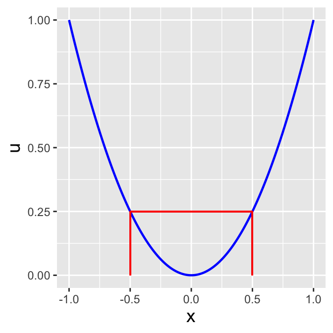
Continuing on: \[ F_U(u) = P(-\sqrt{u} \leq X \leq \sqrt{u}) = \int_{-\sqrt{u}}^{\sqrt{u}} \frac12 dx = \left. \frac{x}{2} \right|_{-\sqrt{u}}^{\sqrt{u}} = \sqrt{u} \,, \] and \[ f_U(u) = \frac{d}{du} \sqrt{u} = \frac{1}{2\sqrt{u}} ~~~ u \in [0,1] \,. \]
2.7.1.3 Discrete Transformation
Let’s assume that the probability mass function for a random variable \(X\) is \[ p_X(x) = p^x (1-p)^{1-x} \,, \] where \(x \in \{0,1\}\) and \(p \in [0,1]\). Given the transformation \(U = 2X^2\), what is the pmf for \(U\)?
Because the transformation is injective, the determination of the pmf is particularly simple and can be done without carrying out the full set of steps above: we identify that \(X = \sqrt{U/2}\) and state that \[ p_U(u) = p_X\left(\sqrt{\frac{u}{2}}\right) = p^{\sqrt{u/2}} (1-p)^{1-\sqrt{u/2}} \,. \] Since \(x \in \{0,1\}\), the domain of \(u\) is \(\{2 \cdot 0^2,2 \cdot 1^2\}\), or \(\{0,2\}\).
Now, what if instead of the pmf above (which is that of the Bernoulli distribution), we have this pmf instead: \[ p_X(-1) = \frac12 ~~~ \mbox{and} ~~~ p_X(1) = \frac12 \,? \] This is the pmf for the Rademacher distribution. Because \(U = 2X^2\) is not an injective function here, we must take care to establish the mapping of all values in the domain of \(f_X(x)\) to the domain of \(f_U(u)\): \[ X = -1 ~~~\Rightarrow~~~ U = 2 ~~~~~~\mbox{and}~~~~~~ X = 1 ~~~\Rightarrow~~~ U = 2 \,. \] Hence \[ p_U(u) = p_X(-1) + p_X(1) = \frac12 + \frac12 = 1 ~~~ u \in \{2\} \,. \]
2.8 Normal-Related Distribution: Chi-Square
What to take away from this section:
If \(Z\) is a standard-normally distributed random variable, \(Z^2\) is distributed according to a chi-square distribution.
Via the method of moment-generating functions, we determine that the sum of chi-square-distributed random variables is itself a chi-square-distributed random variable.
The square of a standard normal random variable, \(Z^2\), is an important quantity that arises, e.g., in statistical model assessment (through the “sum of squared errors” when the “error” is normally distributed) and in hypothesis tests like the chi-square goodness-of-fit test. But for this quantity to be useful in statistical inference, we need to know its distribution.
In step (1) of the algorithm laid out in the last section, we identify the inverse function: if \(U = Z^2\), with \(Z \in (-\infty,\infty)\), then \(Z = \pm \sqrt{U}\). Then, following step (2), we state that \[ F_U(u) = P(U \leq u) = P(Z^2 \leq u) = P(-\sqrt{u} \leq Z \leq \sqrt{u}) = \Phi(\sqrt{u}) - \Phi(-\sqrt{u}) \,, \] where, as we recall, \(\Phi(\cdot)\) is the notation for the standard normal cdf. Because of symmetry, we can simplify this expression: \[ F_U(u) = \Phi(\sqrt{u}) - [1 - \Phi(\sqrt{u})] = 2\Phi(\sqrt{u}) - 1 \,. \]
To carry out step (3), we utilize the chain rule of differentiation to determine that the pdf is \[\begin{align*} f_U(u) = \frac{d}{du} F_U(u) = \frac{d}{du} [2\Phi(\sqrt{u}) - 1] &= 2 \frac{d\Phi}{du}(\sqrt{u}) \cdot \frac{d}{du}\sqrt{u} \\ &= 2 f_Z(\sqrt{u}) \cdot \frac{1}{2\sqrt{u}} \\ &= \frac{1}{\sqrt{2\pi}} \exp\left(-\frac{u}{2}\right) \cdot \frac{1}{\sqrt{u}} \\ &= \frac{u^{-1/2}}{\sqrt{2\pi}} \exp(-\frac{u}{2}) \,, \end{align*}\] with \(u \in [0,\infty)\).
Before continuing, we need to introduce a new probability distribution, the so-called chi-square distribution, which has the probability density function \[ f_W(x) = \frac{x^{\nu/2-1}}{2^{\nu/2} \Gamma(\nu/2)} \exp\left(-\frac{x}{2}\right) \,, \] where \(x \geq 0\) and \(\nu\) is a positive integer; \(E[X] = \nu\) and \(V[X] = 2\nu\). Note that we will use the notation \(W\) to denote a chi-square random variable throughout the remainder of this book. The one parameter that dictates the shape of a chi-square distribution is dubbed the number of degrees of freedom, is conventionally denoted with the Greek letter \(\nu\) (nu, pronounced “noo”), and has a positive integer value. A chi-square distribution is highly skew if \(\nu\) is small, but chi-square random variables converge in distribution to normal random variables as \(\nu \rightarrow \infty\). See Figure 2.8. (As we will see in Section 4.3.3, the chi-square family of distributions belongs to the more general gamma family of distributions.)
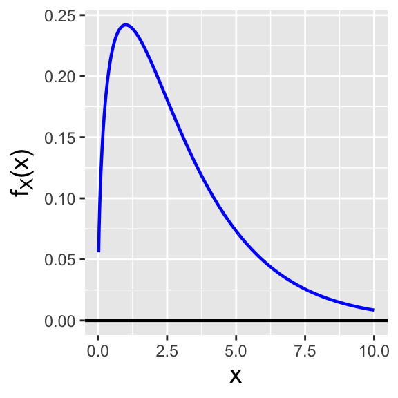
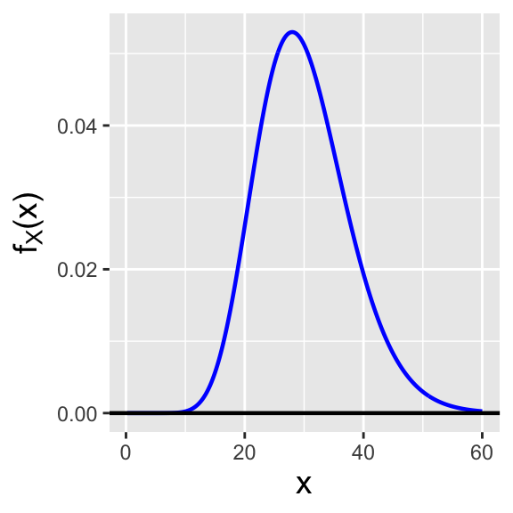
Now let’s go back to the result of our transformation. We can now see that \(f_U(u)\) is a chi-square pdf: \[ U = W \sim \chi_1^2 \,, \] with the subscript “1” indicating that here, \(\nu = 1\).
So: if we take a single standard normal random variable \(Z\) and square it, the squared value is sampled according to a chi-square distribution for one degree of freedom. What if now we were to generate a sample of \(n\) independent standard-normal random variables \(\{Z_1,\ldots,Z_n\}\)…what is the distribution of \(\sum_{i=1}^n Z_i^2\)? As this is a sum of independent random variables, we utilize the method of moment-generating functions to answer this question. As shown in the first example below, the mgf for a chi-square random variable is \[ m_W(t) = (1-2t)^{-\nu/2} \,. \] The mgf of a sum of chi-square random variables, each of which has \(\nu = 1\) degrees of freedom, will be \[ \prod_{i=1}^n m_{W}(t) = \prod_{i=1}^n (1-2t)^{-\frac{1}{2}} = (1-2t)^{-\frac{n}{2}} \,. \] We identify the product as being the mgf for a chi-square distribution with \(\nu = n\) degrees of freedom. Thus: if we sum chi-square-distributed random variables, the summed quantity is itself chi-square distributed, with \(\nu\) being the sum of the numbers of degrees of freedom for the original random variables. (This result can be generalized: for instance, if \(X_1 \sim \chi_a^2\) and \(X_2 \sim \chi_b^2\), then \(X_1 + X_2 = W \sim \chi_{a+b}^2\).)
2.8.1 Examples
2.8.1.1 Chi-Square Distribution: Moment-Generating Function
The moment-generating function for a chi-square random variable is \[ E[e^{tX}] = \int_0^\infty e^{tx} \frac{x^{\nu/2-1}}{2^{\nu/2} \Gamma(\nu/2)} e^{-x/2} dx = \int_0^\infty \frac{x^{\nu/2-1}}{2^{\nu/2} \Gamma(\nu/2)} e^{-(1/2-t)x} dx \,. \] Because the integral bounds are \(0\) and \(\infty\), we utilize a variable transformation that yields an integrand containing \(e^{-u}\); we can then evaluate the integral as a gamma function. Thus \(u = (1/2-t)x\) and \(du = (1/2-t)dx\), with the integral bounds being unchanged, and we have that \[\begin{align*} E[e^{tX}] &= \int_0^\infty \frac{[u/(1/2-t)]^{\nu/2-1}}{2^{\nu/2} \Gamma(\nu/2)} e^{-u} \frac{du}{1/2-t} \\ &= \frac{1}{(1/2-t)^{\nu/2}} \frac{1}{2^{\nu/2}} \frac{1}{\Gamma(\nu/2)} \int_0^\infty u^{\nu/2-1} e^{-u} du \\ &= \frac{1}{(1-2t)^{\nu/2}} \frac{1}{\Gamma(\nu/2)} \Gamma(\nu/2) = (1-2t)^{-\nu/2} \,. \end{align*}\]
2.8.1.2 Chi-Square Distribution: Expected Value
The expected value of a chi-square distribution for one degree of freedom is \[\begin{align*} E[X] &= \int_0^\infty x f_X(x) dx \\ &= \int_0^\infty \frac{x^{1/2}}{\sqrt{2\pi}}\exp\left(-\frac{x}{2}\right) dx \,. \end{align*}\] To find the value of this integral, we are going to utilize the gamma function \[ \Gamma(t) = \int_0^\infty u^{t-1} \exp(-u) du \,, \] which we first introduced in an example in Section 1.10. (Note that \(t > 0\).) Recall that if \(t\) is an integer, then \(\Gamma(t) = (t-1)! = (t-1) \times (t-2) \times \cdots \times 1\), with the exclamation point representing the factorial function. If \(t\) is a half-integer and small, one can look up the value of \(\Gamma(t)\) online.
The integral we are trying to compute doesn’t quite match the form of the gamma function integral…but as one should recognize by now, we can attempt a variable substitution to change \(e^{-x/2}\) to \(e^{-u}\): \[ u = x/2 ~,~ du = dx/2 ~,~ x = 0 \implies u = 0 ~,~ x = \infty \implies u = \infty \] We thus rewrite our expected value as \[\begin{align*} E[X] &= \int_0^\infty \frac{\sqrt{2}u^{1/2}}{\sqrt{2\pi}} \exp(-u) (2 du) = \frac{2}{\sqrt{\pi}} \int_0^\infty u^{1/2} \exp(-u) du \\ &= \frac{2}{\sqrt{\pi}} \Gamma\left(\frac{3}{2}\right) = \frac{2}{\sqrt{\pi}} \frac{\sqrt{\pi}}{2} = 1 \,. \end{align*}\] As we saw above, the sum of \(n\) chi-square random variables, each distributed with 1 degree of freedom, is itself chi-square-distributed for \(n\) degrees of freedom. Hence, in general, if \(W \sim \chi_{n}^2\), then \(E[W] = n\).
2.8.1.3 Computing Probabilities
Let’s assume at first that we have a single random variable \(Z \sim \mathcal{N}(0,1)\).
- What is \(P(Z^2 > 1)\)?
We know that \(Z^2\) is sampled according to a chi-square distribution for 1 degree of freedom. So \[ P(Z^2 > 1) = 1 - P(Z^2 \leq 1) = 1 - F_{W(1)}(1) \,. \] This is not easily computed by hand, so we utilize
R:
Code
1 - pchisq(1, 1)[1] 0.3173105The probability is 0.3173. With the benefit of hindsight, we can see why this was going to be the value all along: we know that \(P(-1 \leq Z \leq 1) = 0.6827\), and thus \(P(\vert Z \vert > 1) = 1-0.6827 = 0.3173\). If we square both sides in this last probability statement, we see that \(P(\vert Z \vert > 1) = P(Z^2 > 1)\).
- What is the value \(a\) such that \(P(W > a) = 0.9\), where \(W = Z_1^2 + \cdots + Z_4^2\) and \(\{Z_1,\ldots,Z_4\}\) are iid standard normal random variables?
First, we recognize that \(W \sim \chi_4^2\), i.e., \(W\) is chi-square distributed for 4 degrees of freedom.
Second, we re-express \(P(W > a)\) in terms of the cdf of the chi-square distribution, \[ P(W > a) = 1 - P(W \leq a) = 1 - F_{W(4)}(a) = 0.9 \,, \] and we rearrange terms: \[ F_{W(4)}(a) = 0.1 \,. \] To isolate \(a\), we use the inverse CDF function: \[ F_{W(4)}^{-1} [F_{W(4)}(a)] = a = F_{W(4)}^{-1}(0.1) \,. \] To compute \(a\), we use the
Rfunctionqchisq():
Code
(a = qchisq(0.1, 4))[1] 1.063623We find that \(a = 1.064\).
2.9 Normal Distribution: Sample Variance
What to take away from this section:
The quantity \(W = (n-1)S^2/\sigma^2\) is a chi-square-distributed random variable.
Combining this result with the transformation \(S^2 = \sigma^2 W / (n-1)\), we determine that the normal sample variance \(S^2\) is distributed according to a gamma distribution.
Foreshadowing: this result will allow us to make statistical inferences about the normal population variance \(\sigma^2\) given \(n\) iid normal random variables.
Recall the definition of the sample variance: \[ S^2 = \frac{1}{n-1} \sum_{i=1}^n (X_i - \bar{X})^2 = \frac{1}{n-1} \left[ \left( \sum_{i=1}^n X_i^2 \right) - n\bar{X}^2 \right] \,. \] The reason why we divide by \(n-1\) instead of \(n\) is that it makes \(S^2\) an unbiased estimator of \(\sigma^2\). We will illustrate this point below when we cover point estimation.
Previously, we showed how the sample mean of iid normal random variables is itself normal, with mean \(\mu\) and variance \(\sigma^2/n\). What, on the other hand, is the distribution of \(S^2\)?
We could try to derive this directly, by utilizing transformations and the method of moment-generating functions, but we would run into the issue that, e.g., \(\sum_{i=1}^n X_i^2\) and \(\bar{X}^2\) are not independent random variables. So we will attack this derivation a bit more indirectly instead.
Suppose that we have \(n\) iid normal random variables. We can write down that \[ \sum_{i=1}^n \left( \frac{X_i-\mu}{\sigma} \right)^2 = W \sim \chi_n^2 \,. \] We can work with the expression to the left of the equals sign to determine the distribution of \((n-1)S^2/\sigma^2\): \[\begin{align*} \sum_{i=1}^n \left( \frac{X_i-\mu}{\sigma} \right)^2 &= \sum_{i=1}^n \left( \frac{(X_i-\bar{X})+(\bar{X}-\mu)}{\sigma} \right)^2 \\ &= \sum_{i=1}^n \left( \frac{X_i-\bar{X}}{\sigma}\right)^2 + \sum_{i=1}^n \left( \frac{\bar{X}-\mu}{\sigma}\right)^2 + \mbox{cross~term~equaling~zero} \\ &= \frac{(n-1)S^2}{\sigma^2} + n\left(\frac{\bar{X}-\mu}{\sigma}\right)^2 = \frac{(n-1)S^2}{\sigma^2} + \left(\frac{\bar{X}-\mu}{\sigma/\sqrt{n}}\right)^2 \,. \end{align*}\] The expression farthest to the right contains the quantity \[ \frac{\bar{X}-\mu}{\sigma/\sqrt{n}} \,, \] which, since \(\bar{X} \sim \mathcal{N}(\mu,\sigma^2/n)\), is a standard normal random variable. Thus the expression itself represents a chi-square-distributed random variable for 1 dof. Recall that if \(X_1 \sim \chi_a^2\) and \(X_2 \sim \chi_b^2\), then \(X_1 + X_2 \sim \chi_{a+b}^2\); given this, it must be the case that \[ \frac{(n-1)S^2}{\sigma^2} = W' \sim \chi_{n-1}^2 \,. \]
Now we can determine the distribution of \(S^2\), by utilizing the transformation \[ S^2 = \frac{\sigma^2 W'}{n-1} \,. \] We have that \[\begin{align*} F_{S^2}(x) &= P(S^2 \leq x) = P\left( \frac{\sigma^2 W'}{n-1} \leq x \right)\\ &= P\left( W' \leq \frac{(n-1)x}{\sigma^2} \right) = F_{W'}\left(\frac{(n-1)x}{\sigma^2} \right) \,, \end{align*}\] and thus \[\begin{align*} f_{S^2}(x) &= \frac{d}{dx} F_{S^2}(x) = f_{S^2}\left(\frac{(n-1)x}{\sigma^2} \right) \frac{(n-1)}{\sigma^2} \\ &= \frac{\left[\frac{(n-1)x}{\sigma^2}\right]^{(n-1)/2 - 1}}{2^{(n-1)/2} \Gamma\left((n-1)/2\right)} \exp\left(-\frac{(n-1)x}{2\sigma^2}\right) \frac{(n-1)}{\sigma^2} \,. \end{align*}\] If we let \(a = (n-1)/2\) and \(b = 2\sigma^2/(n-1)\), then the pdf above becomes \[ f_{S^2}(x) = \frac{x^{a-1}}{b^a\Gamma(a)} \exp\left(-\frac{x}{b}\right) \,. \] This is the pdf of a gamma distribution with shape parameter \(a\) and scale parameter \(b\), i.e., \[ S^2 \sim \mbox{Gamma}\left(\frac{n-1}{2},\frac{2\sigma^2}{n-1}\right) \,. \] We will officially introduce the gamma distribution in Section 4.3.3; for now, it suffices to say that if \(X\) is a gamma-distributed random variable, then \(E[X] = ab\) and \(V[X] = ab^2\)…thus \(E[S^2] = \sigma^2\) and \(V[S^2] = 2\sigma^4/(n-1)\).
2.9.1 Examples
2.9.1.1 Computing Probabilities
Let’s suppose we sample \(16\) iid normal random variables, and we know that \(\sigma^2 = 10\). What is the probability \(P(S^2 > 12)\)?
(We’ll stop for a moment to answer a question that might occur to the reader. “Why are we doing a problem where we assume \(\sigma^2\) is known? In real life, it almost certainly won’t be.” This is an entirely fair question. This example is contrived, but it builds towards a particular situation where we can assume a value for \(\sigma^2\): hypothesis testing. The calculation we do below is analogous to calculations we will do later when testing hypotheses about normal population variances.)
To compute the probability, we write \(P(S^2 > 12) = 1 - P(S^2 \leq 12)\) and utilize the cdf of a gamma distribution:
Code
n <- 16
sigma2 <- 10
a <- (n - 1) / 2
b <- 2 * sigma2/ (n - 1)
1 - pgamma(12, shape = a, scale = b)[1] 0.26266562.9.1.2 Expected Value of the Standard Deviation
Above, we determined that when we sample \(n\) iid data according to a normal distribution, the sample variance \(S^2\) is gamma-distributed with shape parameter \(a = (n-1)/2\) and scale parameter \(b = 2\sigma^2/(n-1)\), and the expected value of \(S^2\) is \(\sigma^2\)…meaning that \(S^2\) is an unbiased estimator for population variance \(\sigma^2\).
A natural question which then arises is: is the sample standard deviation \(S\) an unbiased estimator for the population standard deviation \(\sigma\)?
To answer this, we first must determine the probability distribution function \(f_S(x)\). This is straightforwardly done via the transformation \(S = \sqrt{S^2}\): \[ F_S(x) = P(S \leq x) = P(\sqrt{S^2} \leq x) = P(S^2 \leq x^2) = F_{S^2}(x^2) \,, \] and thus \[ f_S(x) = \frac{d}{dx} F_S(x) = 2 x f_{S^2}(x^2) = 2 x \frac{(x^2)^{a-1}}{b^a \Gamma(a)} \exp\left(-\frac{x^2}{b}\right) \,, \] where \(x > 0\). (Note that this distribution has a name: it is a Nakagami distribution.)
The expected value of \(S\) is \[ E[S] = \int_0^\infty 2 x^2 \frac{(x^2)^{a-1}}{b^a \Gamma(a)} \exp\left(-\frac{x^2}{b}\right) dx = 2 \left(\frac{x^2}{b}\right)^a \frac{1}{\Gamma(a)} \exp\left(-\frac{x^2}{b}\right) dx \,. \] Given the integral bounds, we utilize the variable transformation \(t = x^2/b\), such that \(dt = 2 x dx/b\) (with the integral bounds being unchanged). Thus \[\begin{align*} E[S] &= \frac{2}{\Gamma(a)} \int_0^\infty t^a \exp(-t) \frac12 \sqrt{\frac{b}{t}} dt \\ &= \frac{\sqrt{b}}{\Gamma(a)} \int_0^\infty t^{a-1/2} \exp(-t) dt \\ &= \frac{\Gamma(a+1/2)}{\Gamma(a)} \sqrt{b} \\ &= \frac{\Gamma(n/2)}{\Gamma((n-1)/2)} \sqrt{\frac{2}{n-1}} \sigma \neq \sigma \,. \end{align*}\] We thus find that \(S\) is a biased estimator of the normal standard deviation \(\sigma\). We note that \[ \lim_{n \to \infty} \frac{\Gamma(n/2)}{\Gamma((n-1)/2)} = \lim_{n \to \infty} \frac{\Gamma((n-1)/2 + 1/2)}{\Gamma((n-1)/2)} = \left(\frac{n-1}{2}\right)^{1/2} \,, \] so asymptotically \(S\) is an unbiased estimator for \(\sigma\).
2.10 Normal-Related Distribution: t
What to take away from this section:
The quantity \(t = (\bar{X}-\mu)/(\sigma/\sqrt{n})\) is a t-distributed random variable.
Foreshadowing: this result will allow us to make statistical inferences about the normal population mean \(\mu\), given \(n\) iid normal random variables, even when the population variance \(\sigma^2\) is unknown.
It is generally the case in real-life that when we assume our data are sampled according to a normal distribution, both the mean and the variance are unknown. This means that instead of \[ Z = \frac{\bar{X}-\mu}{\sigma/\sqrt{n}} \sim \mathcal{N}(0,1) \,, \] we have \[ \frac{\bar{X}-\mu}{S/\sqrt{n}} \sim \mbox{?} \] This last expression contains two random variables, one in the numerator and one in the denominator, and each is independent of the other. (We state this without proof…but we will appeal to intuition. For many distributions, the expected value and variance are both functions of one or more parameters \(\theta\) [e.g., the exponential, binomial, and Poisson distributions, etc., etc.]. However, for a normal distribution, the expected value only depends on \(\mu\) and the variance only depends on \(\sigma^2\).) How would we determine the distribution of the ratio above?
There is no unique way by which to approach the derivation of the distribution: we simply illustrate one way of doing so. First, we rewrite the ratio above as \[\begin{align*} T = \frac{\bar{X}-\mu}{S/\sqrt{n}} &= \frac{\bar{X}-\mu}{\sigma/\sqrt{n}} / \frac{S}{\sigma} = \frac{\bar{X}-\mu}{\sigma/\sqrt{n}} / \sqrt{\frac{S^2}{\sigma^2}}\\ &= \frac{\bar{X}-\mu}{\sigma/\sqrt{n}} / \left( \sqrt{\frac{\nu S^2}{\sigma^2}} \frac{1}{\sqrt{\nu}} \right) = Z / \left(\sqrt{\frac{W}{\nu}}\right) \,, \end{align*}\] where \(Z \sim \mathcal{N}(0,1)\) and \(W\) is sampled according to a chi-square distribution with \(\nu = n-1\) degrees of freedom. Our next step is to determine the distribution of the random variable \(U = \sqrt{W/\nu}\). We identify that \(V = \sqrt{W}\) is sampled according to a chi distribution (note: no square!), whose pdf may be derived via a general transformation (since \(V = \sqrt{\nu}S/\sigma\) and since we have written down \(f_S(x)\) above), but can also simply be looked up: \[ f_V(x) = \frac{x^{\nu-1} \exp(-x^2/2)}{2^{\nu/2-1}\Gamma(\nu/2)} \,, \] for \(x \geq 0\) and \(\nu > 0\). However, we do still have to apply a general transformation to determine the pdf for \(U = V/\sqrt{\nu}\). Doing so, we find that \[ f_U(x) = f_V(\sqrt{\nu}x) \sqrt{\nu} = \frac{\sqrt{\nu} (\sqrt{\nu}x)^{\nu-1} \exp(-(\sqrt{\nu}x)^2/2)}{2^{\nu/2-1}\Gamma(\nu/2)} \,. \] (So, yes, we could have derived \(f_U(x)\) directly from \(f_S(x)\) via a general transformation…but here we at least indicate to the reader that there is such a thing as the chi distribution.)
At this point, we know the distributions for both the numerator and the denominator. Now we write down a general result dubbed the ratio distribution. For \(T = Z/U\), where \(Z\) and \(U\) are independent variables, that distribution is \[ f_T(t) = \int_{-\infty}^\infty \vert u \vert f_Z(tu) f_{U}(u) du \rightarrow \int_0^\infty u f_Z(tu) f_{U}(u) du \,, \] where we make use of the fact that \(u > 0\). Thus \[\begin{align*} f_T(t) &= \int_0^\infty u \frac{1}{\sqrt{2\pi}} \exp\left(-\frac{t^2u^2}{2}\right) \frac{\sqrt{\nu} (\sqrt{\nu}u)^{\nu-1} \exp(-(\sqrt{\nu}u)^2/2)}{2^{\nu/2-1}\Gamma(\nu/2)} du \\ &= \frac{1}{\sqrt{2\pi}} \frac{1}{2^{\nu/2-1}\Gamma(\nu/2)} \nu^{\nu/2} \int_0^\infty u^\nu \exp\left(-\frac{(t^2+\nu)u^2}{2}\right) du \,. \end{align*}\] Given the form of the integral and the fact that it is evaluated from zero to infinity, we will use a variable substitution approach and eventually turn the integral into a gamma function: \[ x = \frac{(t^2+\nu)u^2}{2} ~~~ \Rightarrow ~~~ dx = (t^2+\nu)~u~du \,. \] When \(u = 0\), \(x = 0\), and when \(u = \infty\), \(x = \infty\), so the integral bounds are unchanged. Hence we can rewrite the integral above as \[\begin{align*} f_T(t) &= \frac{1}{\sqrt{2\pi}} \frac{1}{2^{\nu/2-1}\Gamma(\nu/2)} \nu^{\nu/2} \int_0^\infty \left(\sqrt{\frac{2x}{(t^2+\nu)}}\right)^\nu \exp\left(-x\right) \frac{dx}{\sqrt{2 x (t^2+\nu)}} \\ &= \frac{1}{\sqrt{2\pi}} \frac{1}{2^{\nu/2-1}\Gamma(\nu/2)} \nu^{\nu/2} 2^{\nu/2} 2^{-1/2} \frac{1}{(t^2+\nu)^{(\nu+1)/2}} \int_0^\infty \frac{x^{\nu/2}}{x^{1/2}} \exp\left(-x\right) dx \\ &= \frac{1}{\sqrt{\pi}} \frac{1}{\Gamma(\nu/2)} \nu^{\nu/2} \frac{1}{(t^2+\nu)^{(\nu+1)/2}} \int_0^\infty x^{\nu/2-1/2} \exp\left(-x\right) dx \\ &= \frac{1}{\sqrt{\pi}} \frac{1}{\Gamma(\nu/2)} \nu^{\nu/2} \frac{1}{(t^2+\nu)^{(\nu+1)/2}} \Gamma((\nu+1)/2) \\ &= \frac{1}{\sqrt{\pi}} \frac{\Gamma((\nu+1)/2)}{\Gamma(\nu/2)} \nu^{\nu/2} \frac{1}{\nu^{(\nu+1)/2}(t^2/\nu+1)^{(\nu+1)/2}} \\ &= \frac{1}{\sqrt{\nu \pi}} \frac{\Gamma((\nu+1)/2)}{\Gamma(\nu/2)} \left(1+\frac{t^2}{\nu}\right)^{-(\nu+1)/2} \,. \end{align*}\] \(T\) is sampled according to a Student’s t distribution for \(\nu\) degrees of freedom. Assuming that \(\nu\) is integer-valued, the expected value of \(T\) is \(E[T] = 0\) for \(\nu \geq 2\) (and is undefined otherwise), while the variance is \(\nu/(\nu-2)\) for \(\nu \geq 3\), is infinite for \(\nu=2\), and is otherwise undefined. Appealing to intuition, we can form a (symmetric) \(t\) distribution by taking a standard normal \(\mathcal{N}(0,1)\) and “pushing down” in the center, the act of which transfers probability density equally to both the lower and upper tails. In Figure 2.9, we see that the smaller the number of degrees of freedom, the more density is transferred to the tails, and that as \(\nu\) increases, the more and more \(f_{T(\nu)}(t)\) becomes indistinguishable from a standard normal. (The more technical way of stating this is that the random variable \(T\) converges in distribution to a standard normal random variable as \(\nu \rightarrow \infty\).)
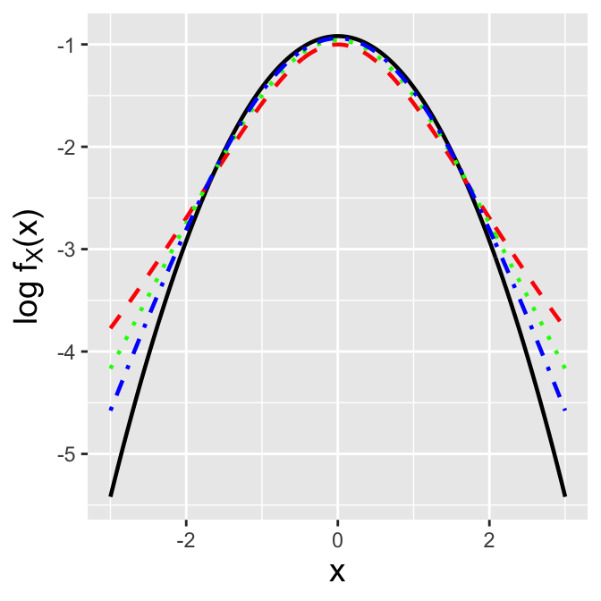
2.10.1 Example
2.10.1.1 Computing Probabilities
In a study, the diameters of \(n = 8\) widgets are measured. It is known from previous work that the widget diamaters are normally distributed, with sample standard deviation \(S = 1\) unit. What is the probability that the the sample mean \(\bar{X}\) observed in the current study will be within one unit of the population mean \(\mu\)?
The probability we seek is \[ P( \vert \bar{X} - \mu \vert < 1 ) = P(\mu - 1 \leq \bar{X} \leq \mu + 1) \,. \] The key here is that we don’t know \(\sigma\), so the probability can only be determined if we manipulate this expression such that the random variable inside it is \(t\)-distributed…and \(\bar{X}\) itself is not. So the first step is to standardize: \[ P\left( \frac{\mu - 1 - \mu}{S/\sqrt{n}} \leq \frac{\bar{X} - \mu}{S/\sqrt{n}} \leq \frac{\mu + 1 - \mu}{S/\sqrt{n}}\right) = P\left( -\frac{\sqrt{n}}{S} \leq T \leq \frac{\sqrt{n}}{S}\right) \,. \] We know that \(\sqrt{n}(\bar{X} - \mu)/S\) is \(t\)-distributed (with \(\nu = n-1\) degrees of freedom), so long as the individual data are normal iid random variables. (If the individual data are not normally distributed, this question might have to be solved via simulations…if we cannot determine the distribution of \(\bar{X}\) using, e.g., moment-generating functions.)
The probability is the difference between two cdf values: \[ P\left( -\frac{\sqrt{n}}{S} \leq T \leq \frac{\sqrt{n}}{S}\right) = F_{T(7)}(\sqrt{8}) - F_{T(7)}(-\sqrt{8}) \,, \] where \(n-1\), the number of degrees of freedom, is 7. This is the end of the problem if we are using pen and paper. If we have
Rat our disposal, we would code the following:
Code
round(pt(sqrt(8), 7) - pt(-sqrt(8), 7), 3)[1] 0.975The probability that \(\bar{X}\) will be within one unit of \(\mu\) is 0.975.
2.11 Point Estimation
What to take away from this section:
As discussed in Section 1.14, we can determine the quality of proposed point estimators using the metrics of bias, variance, and mean-squared error.
A consistent estimator is one whose mean-squared error goes to zero as the sample size \(n\) goes to infinity.
Under certain regularity conditions, we can determine the minimum variance of an unbiased point estimator of \(\theta\) by first computing its Fisher information content, and then using that result to derive the Cramer-Rao lower bound on the variance.
Asymptotically, a maximum likelihood estimator for \(\theta\) converges in distribution to a normal random variable with mean \(\theta\) and variance given by the CRLB.
For previous material on point estimation, see Section 1.14.
In Section 1.14, we introduced the concept of point estimation, using statistics to make inferences about a population parameter \(\theta\). Recall that a point estimator \(\hat{\theta}\), being a statistic, is a random variable and has a sampling distribution. One can define point estimators arbitrarily, but in the end, we can choose the best among a set of estimators by assessing properties of their sampling distributions:
- Bias: \(B[\hat{\theta}] = E[\hat{\theta}-\theta]\)
- Variance: \(V[\hat{\theta}]\)
Recall: the bias of an estimator is the difference between the average value of the estimates it generates and the true parameter value. If \(E[\hat{\theta}-\theta] = 0\), then the estimator \(\hat{\theta}\) is said to be unbiased.
Assuming that our observed data are independent and identically distributed (or iid), then computing each of these quantities is straightforward. Choosing a best estimator based on these two quantities might not lead to a clear answer, but we can overcome that obstacle by combining them into one metric, the mean-squared error (or MSE):
- MSE: \(MSE[\hat{\theta}] = B[\hat{\theta}]^2 + V[\hat{\theta}]\)
In Section 1.14, we also discussed how guessing the form of an estimator is sub-optimal, and how there are various approaches to deriving good estimators. The first one that we highlight is maximum likelihood estimation (or MLE). We will apply the MLE here to derive an estimator for the normal population mean. Then we will introduce methodology by which to assess the estimator in an absolute sense, and extend these results to write down the asymptotic sampling distribution for the MLE, i.e., the sampling distribution as the sample size \(n \rightarrow \infty\).
Recall: the value of \(\theta\) that maximizes the likelihood function is the maximum likelihood estimate, or MLE, for \(\theta\). The maximum is found by taking the (partial) derivative of the (log-)likelihood function with respect to \(\theta\), setting the result to zero, and solving for \(\theta\). That solution is the maximum likelihood estimate \(\hat{\theta}_{MLE}\). Also recall the invariance property of the MLE: if \(\hat{\theta}_{MLE}\) is the MLE for \(\theta\), then \(g(\hat{\theta}_{MLE})\) is the MLE for \(g(\theta)\).
The setting, again, is that we have randomly sampled \(n\) data from a normal distribution with parameters \(\mu\) and \(\sigma\). This means that the likelihood function is \[\begin{align*} \mathcal{L}(\mu,\sigma \vert \mathbf{x}) &= \prod_{i=1}^n f_X(x \vert \mu,\sigma) \\ &= \prod_{i=1}^n \frac{1}{\sqrt{2 \pi \sigma^2}} \exp\left(-\frac{(x_i-\mu)^2}{2\sigma^2}\right) \\ &= \frac{1}{(2 \pi)^{n/2}} \frac{1}{\sigma^n} \exp\left({-\frac{1}{2\sigma^2}\sum_{i=1}^n (x_i - \mu)^2}\right) \,, \end{align*}\] and the log-likelihood is \[ \ell(\mu,\sigma \vert \mathbf{x}) = -\frac{n}{2} \log (2 \pi) - n \log \sigma - \frac{1}{\sigma^2} \sum_{i=1}^n (x_i - \mu)^2 \,. \] Because there is more than one parameter, we take the partial derivative of \(\ell\) with respect to \(\mu\): \[\begin{align*} \ell'(\mu,\sigma \vert \mathbf{x}) &= \frac{\partial}{\partial \mu} \left( -\frac{n}{2} \log (2 \pi) - n \log \sigma - \frac{1}{\sigma^2} \sum_{i=1}^n (x_i - \mu)^2 \right) \\ &= -\frac{1}{\sigma^2} \sum_{i=1}^n 2(x_i - \mu)(-1) \\ &= \frac{2}{\sigma^2} \sum_{i=1}^n (x_i - \mu) \,. \end{align*}\] After setting this quantity to zero and dividing out the term \(2/\sigma^2\), we find that \[ \sum_{i=1}^n x_i = \sum_{i=1}^n \mu ~~\Rightarrow~~ \sum_{i=1}^n x_i = n \mu ~~\Rightarrow~~ \frac{1}{n} \sum_{i=1}^n x_i = n \mu ~~\Rightarrow~~ \mu = \bar{x} \,, \] and thus \(\hat{\mu}_{MLE} = \bar{X}\). (Recall that as we go from a purely mathematical derivation to a final definition of an estimator, we need to take into account that the estimator is a random variable and thus we need to change from lower-case to upper-case when writing out the variable. Also recall that for this MLE to be valid, the second derivative of the log-likelihood function \(\ell(\theta \vert \mathbf{x})\) at \(x = \bar{x}\) has to be negative. We leave checking this as an exercise to the reader.)
Because the estimator is \(\bar{X}\), we know immediately its expected value and variance given previous results:
- \(E[\hat{\mu}_{MLE}] = E[\bar{X}] = \mu\) (the estimator is unbiased); and
- \(V[\hat{\mu}_{MLE}] = V[\bar{X}] = \sigma^2/n\) (and thus \(MSE[\hat{\mu}_{MLE}] = \sigma^2/n\)).
While \(\hat{\mu}_{MLE}\) is an unbiased estimator, recall that MLEs can be biased…but if they are, they are always asymptotically unbiased, meaning that the bias goes away as \(n \rightarrow \infty\).
2.11.1 Point Estimation: Consistency
Here, we will introduce one more estimator concept, that of consistency: do both the bias and the variance of the estimator go to zero as the sample size \(n\) increases? If so, our estimator is said to be consistent. If an estimator is not consistent, it will never converge to the true value \(\theta\), regardless of sample size. Here, we need not worry about the bias (\(\hat{\mu}_{MLE} = \bar{X}\) in unbiased for all \(n\)), and we note that \[ \lim_{n \rightarrow \infty} \frac{\sigma^2}{n} = 0 \,. \] Thus \(\hat{\mu}_{MLE}\) is a consistent estimator.
2.11.2 Point Estimation: Cramer-Rao Lower Bound and Fisher Information
The question that we are going to pose now refers to a point made obliquely in Section 1.14: how do we assess \(V[\hat{\mu}_{MLE}]\) in absolute terms? Can we come up with an estimator that is more accurate for any given value of \(n\)?
The answer lies in the Cramer-Rao inequality, which specifies the lower bound on the variance of an estimator (so long as the domain of \(p_X(x \vert \theta)\) or \(f_X(x \vert \theta)\) does not depend on \(\theta\) itself…which is true for the normal). In this work, we focus on determining lower bounds for unbiased estimators, but bounds can be found for biased estimators as well, as shown here.
If we sample \(n\) iid data, then the Cramer-Rao lower bound (CRLB) on the variance of an unbiased estimator \(\hat{\theta}\) is \[ V[\hat{\theta}] = \frac{1}{I_n(\theta)} = \frac{1}{nI(\theta)} \,, \] where \(I(\theta)\) represents the Fisher information for \(\theta\) contained in a single random variable \(X\). Assuming we sample our data from a pdf, the Fisher information is \[ I(\theta) = E\left[\left(\frac{\partial}{\partial \theta} \log f_X(x \vert \theta) \right)^2\right] ~~~\mbox{or}~~~ I(\theta) = -E\left[ \frac{\partial^2}{\partial \theta^2} \log f_X(x \vert \theta) \right] \,. \] (The equation to the right is valid only under certain regularity conditions, but those conditions are usually met in the context of this book and thus this is the equation that we will use in general, as it makes for more straightforward computation.) Let’s step back for a second and think about what the Fisher information represents. It is the average value of the square of the first derivative of a pdf. If a pdf’s slope is relatively small (because the pdf is wide, like a normal with a large \(\sigma\) parameter), then the average value of the slope, squared, is relatively small, i.e., the information that \(X\) provides about \(\mu\) or \(\sigma\) is relatively small. This makes intuitive sense: a wide pdf means that, for instance, when we sample data and try to subsequently estimate \(\theta\), we will be more uncertain about its actual value. On the other hand, if the pdf is highly concentrated, then the average slope of the pdf is larger and…\(I(\theta)\) is relatively large; a sampled datum would contain more information by which to constrain \(\theta\). (See Figure 2.10, in which the pdf to the left has less Fisher information content about \(\mu\) than the pdf to the right.)
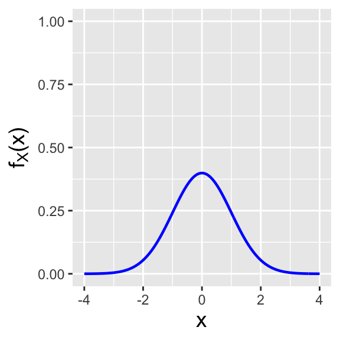
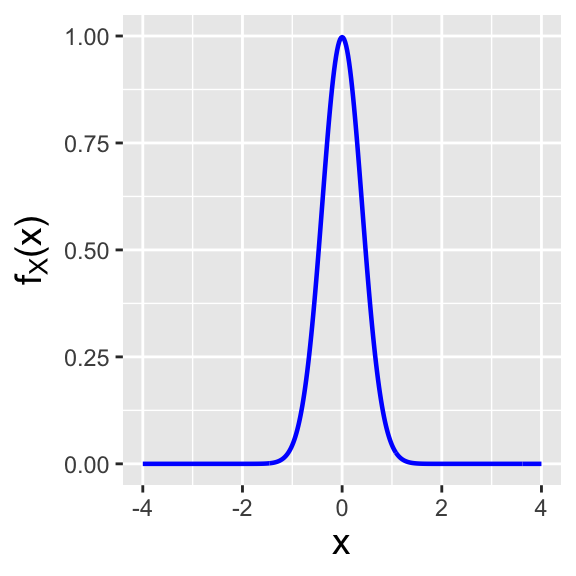
For the normal, \[\begin{align*} \log f_X(X \vert \mu) &= -\frac{1}{2} \log (2\pi\sigma^2) - \frac{(x - \mu)^2}{2\sigma^2} \\ \frac{\partial}{\partial \mu} \log f_X(X \vert \mu) &= 0 - \frac{2(x-\mu)(-1)}{2\sigma^2} = \frac{(x-\mu)}{\sigma^2} \\ \frac{\partial^2}{\partial \mu^2} \log f_X(X \vert \mu) &= -\frac{1}{\sigma^2} \,, \end{align*}\] so \[ I(\mu) = -E\left[-\frac{1}{\sigma^2}\right] = \frac{1}{\sigma^2} \,, \] and \[ V[\hat{\mu}] = \frac{1}{n (1/\sigma^2)} = \frac{\sigma^2}{n} \,. \] We see that the variance of \(\hat{\mu} = \bar{X}\) achieves the CRLB, meaning that indeed we cannot propose a better unbiased estimator for the normal population mean.
2.11.3 Point Estimation: Asymptotic Distribution of the MLE
We conclude this section by using the Fisher information to state an important result about maximum likelihood estimates. Recall that an estimator is a statistic, and thus it is a random variable with a sampling distribution. What do we know about this distribution? For arbitrary values of \(n\), nothing, per se; we would have to run simulations to derive an empirical sampling distribution. However, as \(n \rightarrow \infty\), the MLE converges in distribution to a normal random variable: \[ \sqrt{n}(\hat{\theta}_{MLE}-\theta) \overset{d}{\rightarrow} Y \sim \mathcal{N}\left(0,\frac{1}{I(\theta)}\right) ~\mbox{or}~ (\hat{\theta}_{MLE}-\theta) \overset{d}{\rightarrow} Y' \sim \mathcal{N}\left(0,\frac{1}{nI(\theta)}\right) \,. \] (As usual, some regularity conditions apply that do not concern us at the current time.) We already knew about the mean zero part: we had stated that the MLE is asymptotically unbiased. What’s new is the variance, and the fact that the variance achieves the CRLB, and the identification of the sampling distribution as being normal. (It turns out that the normality of the distribution is related to the Central Limit Theorem, the subject of the next section, and thus this is ultimately not a surprising result.) A sketch of how one would prove the asymptotic normality of the MLE is provided as optional material in Section 7.3.
For more on point estimation, go to Section 3.6.
2.11.4 Examples
2.11.4.1 Maximum Likelihood Estimation for Normal Variance
As above, we will suppose that we are given a data sample \(\{X_1,\ldots,X_n\} \overset{iid}{\sim} \mathcal{N}(\mu,\sigma^2)\), but here, our desire is to estimate the population variance \(\sigma^2\) instead of the population mean. Borrowing the form of the log-likelihood \(\ell(\mu,\sigma^2 \vert \mathbf{x})\) from above, we find that \[\begin{align*} \frac{\partial \ell}{\partial \sigma^2} &= -\frac{n}{2}\frac{1}{\sigma^2} + \frac{1}{2(\sigma^2)^2}\sum_{i=1}^n (x_i-\mu)^2 = 0 \\ ~\implies~ \hat{\sigma^2}_{MLE} &= \frac{1}{n}\sum_{i=1}^n (x_i-\mu)^2 = \hat{\sigma^2}_{MLE} = \frac{1}{n}\sum_{i=1}^n (X_i-\bar{X})^2 \,, \end{align*}\] where the last equality follows from the fact that \(\hat{\mu}_{MLE} = \bar{X}\). We can see immediately that \[ \hat{\sigma^2}_{MLE} = \frac{n-1}{n}S^2 \,. \] Thus \[ E\left[\hat{\sigma^2}_{MLE}\right] = E\left[\frac{n-1}{n}S^2\right] = \frac{n-1}{n}\sigma^2 \,. \] At this point, one might say, “wait a minute…how do we know \(E[S^2] = \sigma^2\)? We know this because \[ E[S^2] = \frac{\sigma^2}{n-1} E\left[\frac{(n-1)S^2}{\sigma^2}\right] = \frac{\sigma^2}{n-1} E[W] = \frac{\sigma^2}{n-1} (n-1) = \sigma^2 \,, \] where \(W\) is a chi-square-distributed random variable for \(n-1\) degrees of freedom; \(E[W] = n-1\). Now, to get back to the narrative at hand: the MLE for \(\sigma^2\) is a biased estimator, but it is asymptotically unbiased: \[ \lim_{n \rightarrow \infty} \left( E\left[\hat{\sigma^2}_{MLE}\right] - \sigma^2 \right) = \lim_{n \rightarrow \infty} \left( \frac{n-1}{n}\sigma^2 - \sigma^2 \right) = 0 \,. \]
2.11.4.2 Asymptotic Normality of the MLE for the Normal Population Variance
We will derive the Fisher information and use it to to write down the Cramer-Rao lower bound for the variances of estimates of the normal population variance.
We have that \[\begin{align*} \log f_X(X \vert \sigma^2) &= -\frac{1}{2} \log (2\pi\sigma^2) - \frac{(x - \mu)^2}{2\sigma^2} \\ \frac{\partial}{\partial \sigma^2} \log f_X(X \vert \sigma^2) &= -\frac{1}{2}\frac{1}{2 \pi \sigma^2} 2 \pi + \frac{(x-\mu)^2}{2(\sigma^2)^2} = -\frac{1}{2 \sigma^2} + \frac{(x-\mu)^2}{2(\sigma^2)^2} \\ \frac{\partial^2}{\partial (\sigma^2)^2} \log f_X(X \vert \sigma^2) &= \frac{1}{2 (\sigma^2)^2} - \frac{2(x-\mu)^2}{2(\sigma^2)^3} = \frac{1}{2(\sigma^2)^2} - \frac{(x-\mu)^2}{(\sigma^2)^3} \,, \end{align*}\] The expected value is \[\begin{align*} E\left[ \frac{1}{2(\sigma^2)^2} - \frac{(x-\mu)^2}{(\sigma^2)^3} \right] &= \frac{1}{2(\sigma^2)^2} - \frac{1}{(\sigma^2)^3} E[(x-\mu)^2]\\ &= \frac{1}{2(\sigma^2)^2} - \frac{1}{(\sigma^2)^3} \sigma^2 = -\frac{1}{2\sigma^4} \,, \end{align*}\] and thus \(I(\sigma^2) = -E[-1/(2\sigma^4)] = 1/(2\sigma^4)\), \(I_n(\sigma^2) = n/(2\sigma^4)\), and \[ \hat{\sigma^2} \overset{d}{\rightarrow} Y \sim \mathcal{N}\left(\sigma^2,\frac{2\sigma^4}{n}\right) \,. \]
2.11.4.3 Simulating the Sampling Distribution of the MLE for the Normal Population Variance
The result that we derive immediately above is an asymptotic result…but we never actually have an infinite sample size. If our sample size is low, we should expect that the distribution of \(\hat{\sigma^2}\) will deviate substantially from the asymptotic expectation, but we cannot know by how much unless we run simulations.
Below, we show how we might run a simulation if we assume that we have \(n = 15\) data drawn from a \(\mathcal{N}(0,4)\) distribution. See Figure 2.11.
Code
set.seed(101)
n <- 15
sigma2 <- 4
k <- 1000
X <- matrix(rnorm(n * k, sd = sqrt(sigma2)), nrow = k)
sigma2.hat <- (n - 1) * apply(X, 1, var) / n
cat("The sample mean for sigma2.hat = ", mean(sigma2.hat), "\n")The sample mean for sigma2.hat = 3.679903 Code
cat("The sample standard deviation for sigma2.hat = ", sd(sigma2.hat), "\n")The sample standard deviation for sigma2.hat = 1.362853 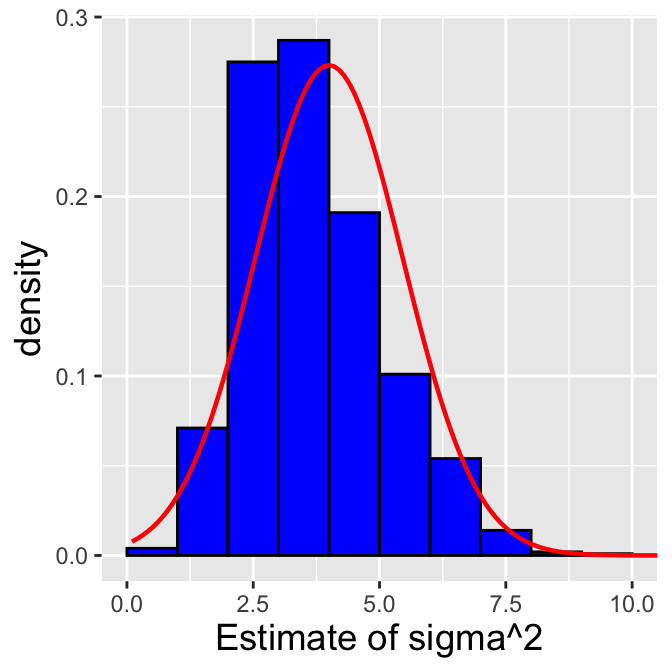
We see that if \(n\) is small, the distribution of the MLE for \(\hat{\sigma^2}\) is definitely not normal, but right skew with a mean smaller than the true mean (4) and standard deviation slightly smaller than the true standard deviation (1.46).
2.12 Confidence Intervals
What to take away from this section:
Given \(n\) iid data sampled according to a normal distribution, we can utilize numerical root-finding frameworks to construct \(100(1-\alpha)\)-percent confidence intervals for…
the normal population mean \(\mu\), if \(\sigma^2\) is known (utilizing the normal distribution);
the normal population mean \(\mu\), if \(\sigma^2\) is unknown (utilizing the \(t\) distribution); and
the normal population variance \(\sigma^2\) (utilizing the gamma distribution).
Since the sampling distributions are continuous distributions, the interval coverage (i.e., the proportion of intervals that overlap the true value of \(\theta\)) is exactly \(1-\alpha\), as demonstrated via simulation.
For previous material on confidence intervals, see Section 1.16.
Recall: a confidence interval is a random interval \([\hat{\theta}_L,\hat{\theta}_U]\) that overlaps (or covers) the true value \(\theta\) with probability \[ P\left( \hat{\theta}_L \leq \theta \leq \hat{\theta}_U \right) = 1 - \alpha \,, \] where \(1 - \alpha\) is the confidence coefficient. Note that this is a long-term probabilistic statement that is not to be applied to any one numerically evaluated interval: an evaluated interval either overlaps the true value, or it does not (and thus we cannot say there is a \(100(1-\alpha)\)-percent chance that \(\theta\) lies within the interval). We determine \(\hat{\theta}\) by solving the following equation: \[ F_Y(y_{\rm obs} \vert \theta) - q = 0 \,, \] where \(F_Y(\cdot)\) is the cumulative distribution function for the statistic \(Y\), \(y_{\rm obs}\) is the observed value of the statistic, and \(q\) is an appropriate quantile value that is determined using the confidence interval reference table introduced in Section 1.16.1.
When we construct confidence intervals, we are allowed to utilize any arbitrarily chosen statistic \(Y\), so long as we know its sampling distribution and so long as \(Y\) is “informative” about \(\theta\). (As an example of an uninformative statistic: given iid data sampled according to a normal distribution, \(Y = S^2\) contains no information that allows us to infer the value of the population mean, \(\mu\).) However, in the context of the normal distribution, there are conventional choices:
- When \(\theta = \mu\), and the variance \(\sigma^2\) is known, we use the sample mean \(\bar{X}\)
- When \(\theta = \mu\), and the variance \(\sigma^2\) is unknown, we use \(T = (\bar{X}-\mu)/(S/\sqrt{n})\), where \(S\) is the sample standard deviation
- When \(\theta = \sigma^2\), we use the sample variance \(S^2\)
While these are conventional statistic choices, there are well-established reasons for using them based on the idea of interval length: if we examine the use of two separate statistics for constructing a confidence interval for \(\theta\), we generally want to use the one that generates shorter confidence intervals (i.e., the one that indicates the least amount of uncertainty about \(\theta\)). And while we are not in a position to justify this statement now, we can say that for normally distributed iid data, \(\bar{X}\), \(T\), and \(S^2\) are the statistics that will generate the shortest intervals. (Justification will come in Section 3.8 and Section 4.7 when we discuss the Neyman-Pearson Lemma and the Likelihood Ratio Test.)
2.12.1 Confidence Intervals: Numerical Estimation
For the three cases stated above, we are not able to solve the equation \(F_Y(y_{\rm obs} \vert \theta) - q = 0\) for \(\theta\) by hand. But we need not worry: given \(y_{\rm obs}\) and that \(\theta\) is continuously valued, there is a one-to-one relationship between \(\theta\) and \(q\) and thus the equation will have only one root. We can determine that root using a numerical root-finder such as R’s uniroot() function. Here we show how to find interval bounds for case 1; below, in examples, we provide similar code snippets that cover cases 2 and 3.
Let’s assume that we sample \(n = 25\) iid data according to a normal distribution with variance \(\sigma^2 = 1\), and that we wish to construct a 95% two-sided confidence interval for \(\mu\).
Code
# generate data; typically, X would be provided
set.seed(101)
n <- 25
sigma2 <- 1
X <- rnorm(n, mean = 0, sd = sqrt(sigma2))
# construct 95% interval
alpha <- 0.05
Y <- mean(X)
f <- function(mu, sigma2, n, y.obs, q)
{
pnorm(y.obs, mean = mu, sd = sqrt(sigma2 / n)) - q # F_Y(y_obs | theta) - q
}
# lower bound: E[Y] = mu, so by table q = 1-alpha/2
uniroot(f, interval=c(-10000, 10000), sigma2=sigma2, n=n, y.obs=Y, 1-alpha/2)$root[1] -0.4875493Code
# upper bound: E[Y] = mu, so by table q = alpha/2
uniroot(f, interval=c(-10000, 10000), sigma2=sigma2, n=n, y.obs=Y, alpha/2)$root[1] 0.2964475The user-defined f() function evaluates \(F_Y(y_{\rm obs} \vert \theta) - q\), given values for all three quantities \(\theta = \mu\), \(y_{\rm obs}\), and \(q\), while the function uniroot() varies \(\mu\) until f() returns a value sufficiently close to zero. There are three aspects to this code to immediately note. First, R will see that mu is the only variable whose value is not fixed, and thus will automatically search for the one value of mu such that \(F_Y(y_{\rm obs} \vert \theta) - q = 0\) is satisfied (within machine tolerance). Second, because f() requires other quantities like sigma2, we must explicitly specify their values in the calls to uniroot(). The third code aspect to note is the argument interval that is passed to uniroot(). This is the range of values of (in this case) mu over which R will search for the one root. Since \(\mu\) can, in theory, take on any value, we specify the interval as being from a very large negative number to a very large positive number. Because uniroot()’s root-finding algorithm is very robust and efficient, making the search interval bounds inordinately large does not ultimately affect performance: the roots will be found, and they will be found very quickly. Here, we find that the interval is \([\hat{\theta}_L,\hat{\theta}_U] =
[-0.488,0.296]\), which overlaps the true value. (See Figure 2.12.)
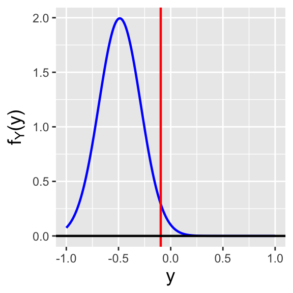
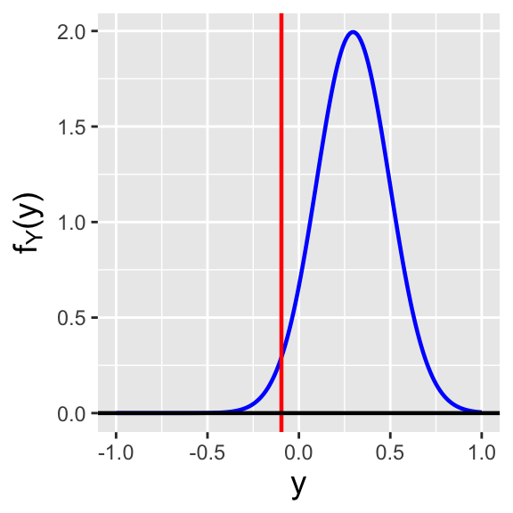
To verify the “coverage” of the intervals we generate, i.e., to determine the proportion of the intervals that overlap the true value, we can simply wrap the code provided above with a for loop, and save the lower and upper bounds for each generated dataset. (However, to be clear: we can only estimate coverage via simulations if we know, or assume, a value for \(\theta\).)
Code
set.seed(101)
num.sim <- 10000
alpha <- 0.05
n <- 25
sigma2 <- 1
lower <- rep(NA, num.sim)
upper <- rep(NA, num.sim)
f <- function(mu, sigma2, n, y.obs, q)
{
pnorm(y.obs, mean = mu, sd = sqrt(sigma2 / n)) - q
}
for ( ii in 1:num.sim ) {
X <- rnorm(n, mean = 0, sd = sqrt(sigma2))
Y <- mean(X)
lower[ii] <-
uniroot(f, interval = c(-10000, 10000), sigma2 = sigma2, n = n, y.obs = Y, 1 - alpha / 2)$root
upper[ii] <-
uniroot(f, interval = c(-10000, 10000), sigma2 = sigma2, n = n, y.obs = Y, alpha / 2)$root
}We can then see how often the true value is within the bounds:
Code
truth <- 0
in.bound <- (lower <= truth) & (upper >= truth)
cat("The empirical coverage is", sum(in.bound) / num.sim, "\n")The empirical coverage is 0.9518 Here, if lower <= truth, then TRUE is returned, as is the case if upper >= truth. & is the logical and operator, which returns TRUE if the input is TRUE & TRUE and returns FALSE otherwise. R treats TRUE as equivalent to 1 (and FALSE as equivalent to 0), so sum(in.bound) returns the number of final TRUE values, i.e., the number of evaluated intervals that overlap the true value.
The estimated coverage is 0.9518. We do not expect a value of exactly 0.95 given that we only run a finite number of simulations and thus we will observe random variation; however, we can say that this value is “close” to 0.95 and thus almost certainly compatible with 0.95. Once we discuss the binomial distribution in Section 3.1, we will be able to more easily quantify the notion of being “close” to a value we expect.
As this point, the reader may say, “this doesn’t look like the confidence interval calculations that I learned in introductory statistics.” This observation is correct: calculations in introductory statistics are done via formula and they ultimately rely on the use of statistical tables. For instance, the reader may recall a formula like this one: \[
\bar{X} \pm z_{1-\alpha/2} \frac{\sigma}{\sqrt{n}} \,,
\] where \(z_{1-\alpha/2} = \Phi^{-1}(1-\alpha/2)\) is a quantity that one would look up using a \(z\) table. (For instance, for a 95% two-sided interval, one would determine that \(z_{0.975} = 1.96\).) For the data generated in the example above, \(Y = \bar{X} = -0.0955\) and the interval bounds are \([\hat{\theta}_L,\hat{\theta}_U] = [-0.488,0.296]\)…matching what uniroot() found!
In the end, the use of numerical root-finders allows us to move away from formulas (and the use of statistical tables) and to generalize the process of calculating confidence intervals.
For more on confidence intervals, go to Section 3.7.
2.12.2 Examples
2.12.2.1 Normal Mean: Variance Unknown
Here, we assume the same setting as above, except that now the variance is unknown.
Code
# generate data
set.seed(101)
alpha <- 0.05
n <- 25
X <- rnorm(n, mean = 0, sd = 1)
# construct 95% interval
Y <- mean(X) # Y = -0.0955
S2 <- var(X) # S2 = 0.731
f <- function(mu, S2, n, y.obs, q)
{
pt((y.obs - mu) / sqrt(S2 / n), n - 1) - q
}
uniroot(f, interval = c(-10000, 10000), S2 = S2, n = n, y.obs = Y, 1 - alpha / 2)$root[1] -0.4483553Code
uniroot(f, interval = c(-10000, 10000), S2 = S2, n = n, y.obs = Y, alpha / 2)$root[1] 0.257279The code above is largely equivalent to that in the previous example, with the only changes being swapping in the call to
pt()(and altering the argument in that call) in place of the call topnorm(), and replacing the known value of \(\sigma^2\) (sigma2in the previous example) with \(S^2\) (S2). We find that the interval is \([\hat{\theta}_L,\hat{\theta}_U] = [-0.448,0.257]\), which is similar to the interval derived in the last example and which still overlaps the true value. (It is smaller than the interval above because \(S^2 = 0.731 < 1\). See Figure 2.13.)
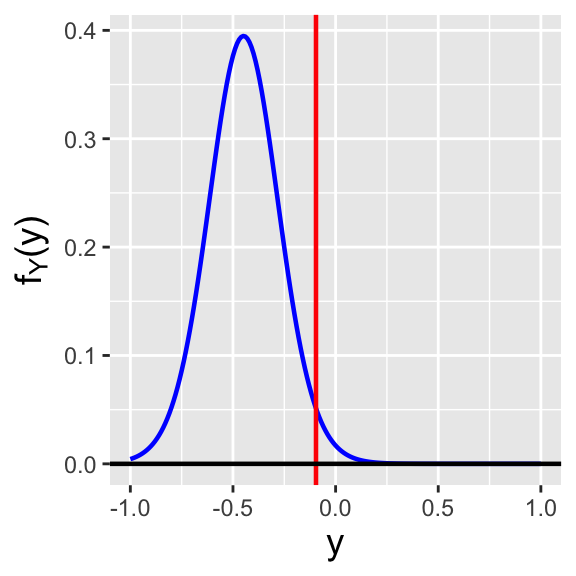
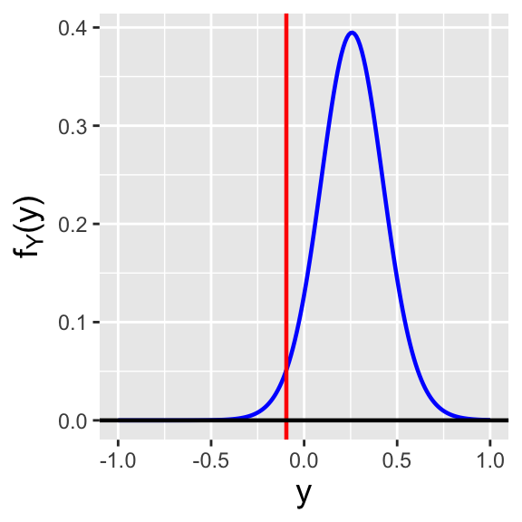
2.12.2.2 Normal Variance
Below, we adapt our confidence-interval code to the problem of estimating an interval for the variance \(\sigma^2\).
Code
# generate data
set.seed(101)
alpha <- 0.05
n <- 25
X <- rnorm(n, mean = 0, sd = 1)
# construct 95% interval
Y <- var(X)
f <- function(sigma2, n, y.obs, q)
{
pgamma(y.obs, shape = (n - 1)/2, scale = 2 * sigma2 / (n - 1)) - q
}
uniroot(f, interval = c(1.e-6, 10000), n = n, y.obs = var(X), 1 - alpha / 2)$root[1] 0.4454088Code
uniroot(f, interval = c(1.e-6, 10000), n = n, y.obs = var(X), alpha / 2)$root[1] 1.413897The changes made to the code above include swapping in
pgamma(), removing the variablemean, removing the variableS2(asy.obsitself is now \(S^2\)), and adjusting the lower bound on the interval (since \(\sigma^2 > 0\)). We find that the interval is \([\widehat{\sigma}_L^2, \widehat{\sigma}_U^2] = [0.445,1.414]\), which overlaps the true value. (See Figure 2.14.)
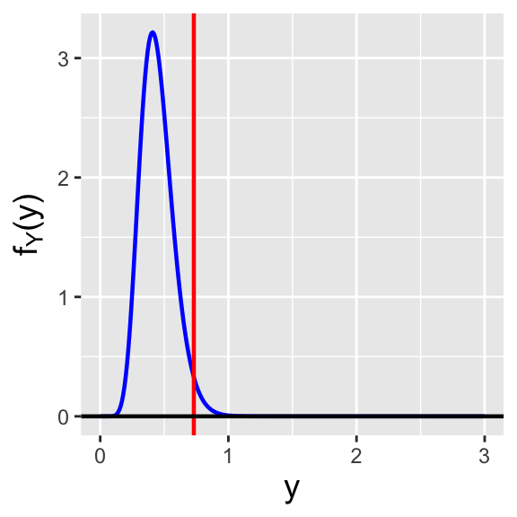
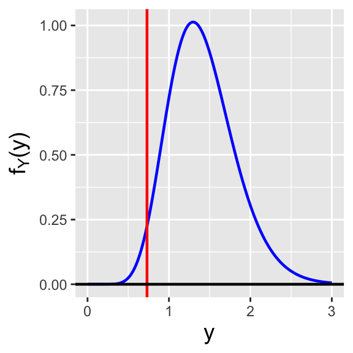
2.12.2.3 Normal Mean: Leveraging the CLT
Let’s assume that we have a iid sample of \(n\) data drawn from the distribution \[ f_X(x) = \theta x^{\theta-1} ~~~~ x \in [0,1] \,. \] This distribution is decidedly not normal. Can we derive a confidence interval for the mean of this distribution, where the mean is \[ E[X] = \int_0^1 \theta x x^{\theta-1} dx = \left. \frac{\theta}{\theta+1} x^{\theta+1} \right|_0^1 = \frac{\theta}{\theta+1} \,? \] If we wanted to try to do this “exactly,” then one workflow would be (a) to attempt to determine the sampling distribution of \(Y = \bar{X}\) (utilizing, e.g., moment-generating functions), and then (b) code up a variant of the codes given in the examples above. However, regarding (a): the mgf of the distribution is \[ m_X(t) = E[e^{tX}] = \theta \int_0^1 x^{\theta-1} e^{tx} dx \,. \] This looks suspiciously like a gamma-function integral, except the bounds here are 0 and 1, not 0 and \(\infty\)…what we actually have (or, technically, what we would have after an appropriate variable substitution) is an incomplete gamma function integral. We cannot easily work with this…and so here we turn to the Central Limit Theorem. (To be clear: here we will utilize the CLT simply to show how it would be done. In any situation where the distribution for each of the individual iid data is known or can be assumed, it is better to utilize simulations and to construct confidence intervals using the empirical sampling distribution, as this will provide an exactly correct interval, within machine precision. We will carry out such simulations starting in Section 4.6.)
If \(n \gtrsim 30\), we may write that \[ \bar{X} \overset{d}{\rightarrow} Y \sim \mathcal{N}(\mu,s_{\rm obs}^2/n) \,. \] (Recall that the CLT assumes that we know \(\sigma^2\), but if we do not and use \(S^2\) instead, the result will still hold as \(n \rightarrow \infty\).) Thus we would use the confidence interval approach that we describe in the first example above, while swapping in \(s_{\rm obs}^2\) for \(\sigma^2\).
Code
# generate data
set.seed(101)
alpha <- 0.05
n <- 25
theta <- 2 # so the mean is 2/3
X <- rbeta(n, theta, 1) # theta x^(theta-1) is a beta distribution
# construct 95% interval
Y <- mean(X)
S2 <- var(X)
f <- function(mu, y.obs, S2, n, q)
{
pnorm(y.obs, mean = mu, sd = sqrt(S2 / n)) - q
}
uniroot(f, interval = c(-10000, 10000), y.obs = Y, S2 = S2, n = n, 1 - alpha / 2)$root[1] 0.5888963Code
uniroot(f, interval = c(-10000, 10000), y.obs = Y, S2 = S2, n = n, alpha / 2)$root[1] 0.7532609The evaluated confidence interval is \([0.589, 0.753]\) (which overlaps the true value \(\mu = 2/3\)). Note, however, that because an approximate sampling distribution is being used, the coverage can (and will) deviate from expectation (e.g., 0.95). Let’s see how much the coverage deviates in this one case via simulation:
Code
set.seed(101)
alpha <- 0.05
num.sim <- 10000
n <- 25
theta <- 2
lower <- rep(NA, num.sim)
upper <- rep(NA, num.sim)
f <- function(mu, y.obs, S2, n, q)
{
pnorm(y.obs, mean = mu, sd = sqrt(S2 / n)) - q
}
for ( ii in 1:num.sim ) {
X <- rbeta(n, theta, 1)
Y <- mean(X)
S2 <- var(X)
lower[ii] <-
uniroot(f, interval = c(-10000, 10000), y.obs = Y, S2 = S2, n = n, 1 - alpha / 2)$root
upper[ii] <-
uniroot(f, interval = c(-10000, 10000), y.obs = Y, S2 = S2, n = n, alpha / 2)$root
}
truth <- 2/3
in.bound <- (lower <= truth) & (upper >= truth)
cat("The estimated coverage is ", sum(in.bound) / num.sim, "\n")The estimated coverage is 0.9359 The estimated coverage is 0.936; it is not quite 0.95. Thus it appears that our confidence interval does not have its advertised coverage. Note that as \(n \rightarrow 0\), the coverage will deviate more and more from \(1 - \alpha\), and that as \(n \rightarrow \infty\), the coverage will asymptotically approach \(1 - \alpha\).
2.12.2.4 The Pivotal Method
The pivotal method is an often-used analytical method for constructing confidence intervals wherein one “reformats” the problem to solve in such a way that one can ultimately utilize statistical tables to determine interval bounds. In the age of computers, the pivotal method has become unnecessary; the numerical root-finding algorithm presented above constructs the same intervals (and does so even in situations where the pivotal method cannot be used).
The steps of the pivotal method are as follows:
- Determine a pivotal quantity \(Y\), a statistic that is a function of both the observed data and the parameter \(\theta\), and that has a sampling distribution that does not depend on \(\theta\). (Note that, as hinted at above, there is no guarantee that a pivotal quantity exists in any given situation. But there may also be situations where we can define multiple pivotal quantities; if so, it does not matter which we adopt, as they all will help generate the same interval.)
- Determine constants \(a\) and \(b\) such that \(P(a \leq Y \leq b) = 1-\alpha\). (Here, we are assuming that we are constructing a two-sided interval.)
- Rearrange the terms within the probability statement such that \(\theta\) is alone in the middle: the quantities on either end are the interval bounds.
Let’s demonstrate how this plays out in the situation where we sample \(n\) iid data from a normal distribution with known variance, and wish to construct an interval for \(\mu\). As we know, in this situation, \[ \bar{X} \sim \mathcal{N}\left(\mu,\frac{\sigma^2}{n}\right) \,. \] \(\bar{X}\) is not a pivotal quantity: its sampling distribution depends on \(\mu\). However… \[ Y = \frac{\bar{X} - \mu}{\sigma/\sqrt{n}} \sim \mathcal{N}(0,1) \] is a pivotal quantity, as it depends on both \(\bar{X}\) and \(\mu\) and has a sampling distribution that does not depend on \(\mu\). Thus step 1 is complete.
As for step 2: \[\begin{align*} P(a \leq Y \leq b) = P(Y \leq b) - P(Y \leq a) &= 1-\alpha \\ \Phi(b) - \Phi(a) &= 1-\alpha \,. \end{align*}\] OK…we appear stuck here, except that we can fall back upon the fact that the standard normal distribution is symmetric around zero, and thus we can say that \(a = -b\). That, and the fact that symmetry allows us to write that \(\Phi(-b) = 1 - \Phi(b)\), allows us to continue: \[\begin{align*} \Phi(b) - \Phi(a) &= 1-\alpha \\ \Phi(b) - (1 - \Phi(b)) &= 1-\alpha \\ 2\Phi(b) - 1 &= 1-\alpha \\ \Phi(b) &= \frac{2-\alpha}{2} = 1 - \frac{\alpha}{2} \\ b &= \Phi^{-1}\left(1 - \frac{\alpha}{2}\right) = z_{1-\alpha/2} \\ \end{align*}\] Historically, at this point, one would make use of a \(z\) table to determine that, e.g., \(b = z_{0.975} = 1.96\).
So now we move on to step 3: \[\begin{align*} P\left(-z_{1-\alpha/2} \leq Y \leq z_{1-\alpha/2}\right) = P\left(-z_{1-\alpha/2} \leq \frac{\bar{X} - \mu}{\sigma/\sqrt{n}} \leq z_{1-\alpha/2}\right) &= 1-\alpha \\ \Rightarrow P\left(\bar{X} - z_{1-\alpha/2}\frac{\sigma}{\sqrt{n}} \leq \mu \leq \bar{X} + z_{1-\alpha/2}\frac{\sigma}{\sqrt{n}}\right) &= 1-\alpha \,. \end{align*}\] Thus our confidence interval is \[ \bar{x}_{\rm obs} \pm z_{1-\alpha/2}\frac{\sigma}{\sqrt{n}} \,. \]
2.13 Hypothesis Testing
What to take away from this section:
Given \(n\) iid data sampled according to a normal distribution, we can utilize pre-coded
Rfunctions to test hypotheses about…the normal population mean \(\mu\), if \(\sigma^2\) is known (utilizing the normal distribution);
the normal population mean \(\mu\), if \(\sigma^2\) is unknown (utilizing the \(t\) distribution); and
the normal population variance \(\sigma^2\) (utilizing the gamma distribution).
The rejection region associated with a hypothesis test is the set of values along the real-number line: if the observed hypothesis test statistic value \(y_{\rm obs}\) lies in this set, then we reject the null hypothesis.
The power of a test is the probability that we would reject the null hypothesis given an arbitrary value for \(\theta\); if \(\theta = \theta_o\), the null hypothesis value, the test power is the test level \(\alpha\) (e.g., 0.05) by definition.
For previous material on hypothesis testing, see Section 1.17.
Recall: a hypothesis test is a framework for deciding whether a specific value of a population parameter \(\theta\) is plausible, given the data that we observe. The null hypothesis \(H_o\) is \(\theta = \theta_o\), while possible alternatives \(H_a\) are \(\theta \neq \theta_o\) (two-tail test), \(\theta > \theta_o\) (upper-tail test), and \(\theta < \theta_o\) (lower-tail test). The \(p\)-value is the probability of observing a statistic value \(y_{\rm obs}\) or a more extreme value, relative to the null. We reject the null hypothesis if the \(p\)-value is less than the stated test level \(\alpha\); otherwise, we fail to reject the null.
Let’s assume we are given \(n\) iid data \(\{X_1,\ldots,X_n\}\) sampled according to a normal distribution. As was the case when constructing confidence intervals, there are conventional choices for the statistics we would use to infer the population mean \(\mu\) and/or variance \(\sigma^2\):
- When \(\theta = \mu\), and the variance \(\sigma^2\) is known, we use the sample mean \(\bar{X}\)
- When \(\theta = \mu\), and the variance \(\sigma^2\) is unknown, we use \(T = (\bar{X}-\mu)/(S/\sqrt{n})\), where \(S\) is the sample standard deviation
- When \(\theta = \sigma^2\), we use the sample variance \(S^2\)
We can use the hypothesis test reference table provided in Section 1.17.2 to compute \(p\)-values in each of these situations, noting that because \(E[\bar{X}]\) and \(E[S^2]\) increase with \(\mu\) and \(\sigma^2\), respectively, we always utilize formulas on the “yes” lines of the table.
Before we transition to examples, there are two new hypothesis-test-related concepts that we will introduce here: test power and rejection regions.
2.13.1 Hypothesis Testing: Test Power
In words, test power is the probability of rejecting the null hypothesis given an arbitrary parameter value \(\theta\): \[ \mbox{power}(\theta) = P(\mbox{reject}~H_o \vert \theta) \,. \] The power is a function of \(\theta\), and its value is \(1-\beta(\theta,\alpha)\), where \(\beta(\theta,\alpha)\) is the Type II error. A power curve is an often-used visualization that indicates how power varies as a function of \(\theta\), with all other quantities (the sample size \(n\), the null hypothesis value \(\theta_o\), etc.) remaining fixed. An example for a two-tail test is shown in Figure 2.16. This figure shows how if we set \(\theta = \theta_o\), the null hypothesis value, then the power will by definition be \(\alpha\) (the probability of rejecting the null if the null is indeed correct). To increase the test power (e.g., to make the curve thinner and sharper in Figure 2.16), we would increase the sample size. There are two other things to note about power curves: (1) the minimum power value for a two-tail test will be less than \(\alpha\) if we are working with a sampling distribution that has an asymmetric probability density or mass function, and (2) while it is convention to only show power curves to the relevant side of the null in one-tail tests, we can compute power for all values of \(\theta\); such curves will monotonically rise from 0 to 1 (upper-tail tests) or descend from 1 to 0 (lower-tail tests).
2.13.2 Hypothesis Testing: Rejection Regions
Before we can compute test power, however, we need to first determine those values of \(Y\) for which we would reject the null hypothesis, i.e., we need to determine the rejection region boundary or boundaries associated with the test. To show how we would do this, we will start with a statement: if our observed statistic value is equal to a rejection-region boundary value, i.e., if \(y_{\rm obs} = y_{\rm RR}\), then the observed \(p\)-value will be exactly equal to \(\alpha\) (assuming our sampling distribution is continuous…we will defer our discussion of what happens with discrete sampling distributions to Section 3.8.1). Combining the above statement with the hypothesis test reference table given in Section 1.17.2, we can, e.g., write the following for a lower-tail/“yes”-line test: \[
p = F_Y(y_{\rm obs} \vert \theta_o) ~~~ \Rightarrow ~~~ \alpha = F_Y(y_{\rm RR} \vert \theta_o) ~~~ \Rightarrow ~~~ y_{\rm RR} = F_Y^{-1}(\alpha \vert \theta_o) \,.
\] In other words, the computation of a rejection-region boundary is a straightforward inverse cdf calculation, which we can perform analytically or by using a R code such as qnorm().
It is important to note that the computation of rejection region boundaries and test power do not depend on what we observe when we carry out an experiment, i.e., they do not depend on \(y_{\rm obs}\). This is important: for instance, given specified null and alternative hypotheses, we can determine the sample size we would need in order to achieve a stated power before data are ever collected! We show an example of such a sample-size calculation below.
2.13.3 Hypothesis Testing: Power and Rejection Region Reference Table
Below, we provide a second hypothesis test reference table, one that contains details on the computations that one needs to compute rejection regions and test power. Like the table in Section 1.17.2, this is not a table to memorize, but rather to refer back to when solving problems!
| Type | \(E[Y]\) Increases with \(\theta\)? | Rejection Region(s) | Test Power |
|---|---|---|---|
| two-tail | N/A | \(\{y_{\rm obs} : y_{\rm obs} < y_{\rm RR,lo} = F_Y^{-1}(\alpha/2 \vert \theta_o)\}\) and | \(F_Y(y_{\rm RR,lo} \vert \theta) +\) |
| \(\{y_{\rm obs} : y_{\rm obs} > y_{\rm RR,hi} = F_Y^{-1}(1-\alpha/2 \vert \theta_o)\}\) | \(1 - F_Y(y_{\rm RR,hi} \vert \theta)\) | ||
| lower-tail | yes | \(\{y_{\rm obs} : y_{\rm obs} < y_{\rm RR} = F_Y^{-1}(\alpha \vert \theta_o)\}\) | \(F_Y(y_{\rm RR} \vert \theta)\) |
| no | \(\{y_{\rm obs} : y_{\rm obs} > y_{\rm RR} = F_Y^{-1}(1-\alpha \vert \theta_o)\}\) | \(1-F_Y(y_{\rm RR} \vert \theta)\) | |
| upper-tail | yes | \(\{y_{\rm obs} : y_{\rm obs} < y_{\rm RR} = F_Y^{-1}(1-\alpha \vert \theta_o)\}\) | \(1-F_Y(y_{\rm RR} \vert \theta)\) |
| no | \(\{y_{\rm obs} : y_{\rm obs} > y_{\rm RR} = F_Y^{-1}(\alpha \vert \theta_o)\}\) | \(F_Y(y_{\rm RR} \vert \theta)\) |
We illustrate how to utilize this table in examples below.
For more on hypothesis testing, go to Section 3.8 and Section 3.9.
2.13.4 Examples
2.13.4.1 Normal Mean: Variance Known
Let’s assume that we have sampled \(n = 25\) iid data from a normal distribution whose variance is \(\sigma^2 = 1\). We wish to test the null hypothesis \(H_o : \mu = \mu_o = 2\) versus the alternative \(H_a : \mu \neq \mu_o\). What is the \(p\)-value if we observe \(\bar{x}_{\rm obs} = 1.404\)? What is the power of this test for \(\mu = 1.8\)? We assume the level of the test is \(\alpha = 0.05\).
To answer each of these questions, we will refer to the hypothesis test reference tables given in Section 1.17.2 and above.
First, we compute the \(p\)-value. We utilize the table in Section 1.17.2 and write down the following code.
Code
n <- 25
y.obs <- 1.404
mu.o <- 2
sigma2 <- 1
2 * min(c( pnorm(y.obs, mean = mu.o, sd = sqrt(sigma2 / n)),
1 - pnorm(y.obs, mean = mu.o, sd = sqrt(sigma2 / n))))[1] 0.002882484The \(p\)-value is 0.0029. This value is to be interpreted as the probability that we would observe a value as far or farther from 2 as 1.404 (and 2.596, by symmetry) is 0.29 percent, if the null is correct. As \(p < \alpha\), we reject the null hypothesis and conclude that the true value of \(\mu\) is not equal to 2.
To compute the test power, we start by determining the two rejection region boundaries: \[ y_{\rm RR,lo} = F_Y^{-1}\left(\frac{\alpha}{2} \vert \mu_o\right) ~~~ \mbox{and} ~~~ y_{\rm RR,hi} = F_Y^{-1}\left(1-\frac{\alpha}{2} \vert \mu_o\right) \,, \] where \(Y = \bar{X}\). The
Rfunction calls are
Code
n <- 25
alpha <- 0.05
mu.o <- 2
sigma2 <- 1
(y.rr.lo <- qnorm( alpha/2, mean = mu.o, sd = sqrt(sigma2 / n)))[1] 1.608007Code
(y.rr.hi <- qnorm(1 - alpha/2, mean = mu.o, sd = sqrt(sigma2 / n)))[1] 2.391993In any experiment in which we sample 25 data from a normal distribution with mean \(\mu = 2\) and variance \(\sigma^2 = 1\), we would reject the null hypothesis if \(y_{\rm obs}\) (the sample mean) is less than 1.608 or greater than 2.392. See Figure 2.15, where the rejection regions are displayed in red. To compute the test power, we plug \(y_{\rm RR,lo}\) and \(y_{\rm RR,hi}\) into the formula given in the table above:
Code
n <- 25
alpha <- 0.05
mu.o <- 2
mu <- 1.8
sigma2 <- 1
pnorm(y.rr.lo, mean = mu, sd = sqrt(sigma2 / n)) +
(1 - pnorm(y.rr.hi, mean = mu, sd = sqrt(sigma2 / n)))[1] 0.170075The test power is 0.170. If \(\mu\) is actually equal to 1.8, then 17.0 percent of the time that we sample 25 data, we would reject the null.
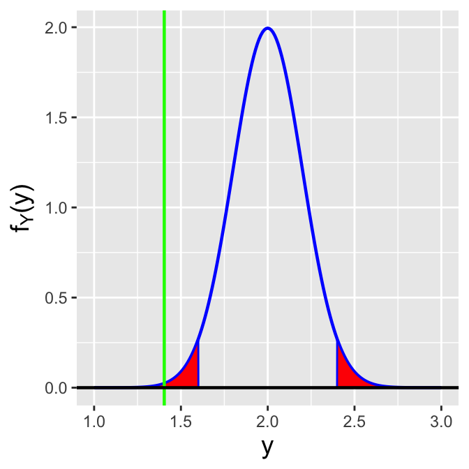
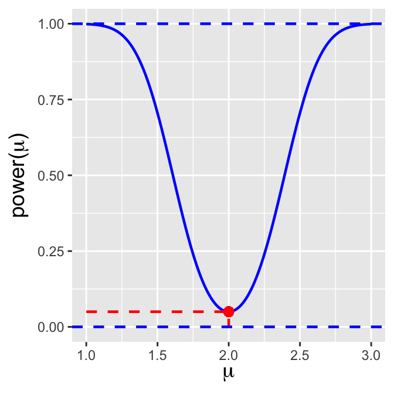
2.13.4.2 Normal Mean: Estimating Sample Size with Variance Known
We can phrase a typical experimental design exercise as follows. “We will sample data according to a normal distribution with specified mean \(\mu\) and specified variance \(\sigma^2\).” (Alternatively, it could be a specification of \(s_{\rm obs}^2\), motivating the use of \(t\) distribution.) “How many data do we need to collect to achieve a test power of 0.8, assuming \(\alpha = 0.05\) and assuming that the null hypothesis is \(H_o : \mu = \mu_o\), but the true value is \(\mu > \mu_o\)?”
We will begin answering this question using math, and later we will transition to code.
We refer back to the hypothesis test reference tables and note that for an upper-tail test where \(E[Y]\) increases with \(\theta\), \[ \mbox{power}(\theta) = 1 - F_Y(y_{\rm RR} \vert \mu_o) \,. \] We substitute in our target power value and solve for \(n\): \[\begin{align*} 1 - F_Y(y_{\rm RR} \vert \mu_o) &= 0.8 \\ \Rightarrow ~~~ F_Y(y_{\rm RR} \vert \mu_o) &= 0.2 \\ \Rightarrow ~~~ &\mbox{...?} \,. \end{align*}\] We transition here to code. We refer back to the hypothesis test reference tables and note that for an upper-tail/“yes”-line test, \(y_{\rm RR}\) is
Code
y.rr <- qnorm(1 - alpha / 2, mean = mu.o, sd = sqrt(sigma2 / n))while the test power is given by
Code
1 - pnorm(y.rr, mean = mu, sd = sqrt(sigma2 / n))To solve the problem at hand, we would subtract 0.8 from this expression, set the result equal to zero, and utilize
uniroot()to solve for \(n\):
Code
alpha <- 0.05
mu.o <- 8
mu <- 9
sigma2 <- 6
f <- function(n)
{
y.rr <- qnorm(1 - alpha/2, mean = mu.o, sd = sqrt(sigma2 / n))
pnorm(y.rr, mean = mu, sd = sqrt(sigma2 / n)) - 0.2
}
ceiling(uniroot(f, interval = c(1, 1000))$root)[1] 48To achieve a power of 0.8, we would need to collect a sample of \(n=48\) data. Note how we use the function
ceiling()here, which rounds up the result to the next higher integer. We do this because the sample size should be an integer, and because we want the power to be at least 0.8; if we round our result down (via thefloor()function), the power will be less than 0.8. In sample size-determination exercises, always round the final result up!
2.13.4.3 Normal Mean: Variance Unknown
Let’s assume that we have sampled \(n = 15\) iid data from a normal distribution whose variance is unknown. We wish to test the null hypothesis \(H_o : \mu = \mu_o = 4\) versus the alternative \(H_a : \mu > \mu_o\). What is the \(p\)-value if we observe \(\bar{x}_{\rm obs} = 4.5\)? What is the power of this test for \(\mu = 4.5\)? We assume the level of the test is \(\alpha = 0.05\) and that the sample variance is \(s_{\rm obs}^2 = 3\).
To answer each of these questions, we will refer to the hypothesis test reference tables given in Section 1.17.2 and above.
First, we compute the \(p\)-value. We refer to the hypothesis test table in Section 1.17.2 and write down the following:
Code
n <- 15
mu.o <- 4
s2.obs <- 3
y.obs <- (4.5 - mu.o) / sqrt(s2.obs / n)
1 - pt(y.obs, n - 1)[1] 0.1411855The \(p\)-value is 0.141, which is \(> \alpha\). The probability that we would observe a value as far or farther from 4 as 4.5 is 14.1 percent, if the null is correct. We thus fail to reject the null hypothesis; we conclude that we have insufficient statistical evidence to reject the idea that \(\mu = 4\).
Now we would compute the test power…except that for this particular test, our two-step prescription of “determine the rejection region boundary and then use it to directly calculate the power” will not work in the way it did in the example above (and the way it does in general). This is because the location and shape of a \(t\) distribution depends only on the sample size \(n\); if we only change \(\mu_o\) to \(\mu\), the probability density function will not move relative to the rejection-region boundary. Thus we need more information to attack power calculation for \(t\) tests.
Recall that if we are given two random variables, \(Z \sim \mathcal{N}(0,1)\) and \(W \sim \chi_{\nu}^2\), then \(T = Z/\sqrt{W/\nu}\) is a \(t\)-distributed random variable for \(\nu\) degrees of freedom. In a similar vein, \[ T_\delta = \frac{Z + \delta}{\sqrt{W/\nu}} \] is a random variable that is sampled according to a non-central t distribution for \(\nu\) degrees of freedom, with the non-centrality parameter \(\delta\). In a \(t\)-test power calculation, the non-centrality parameter, or ncp, is \[ \delta = \frac{\mu - \mu_o}{\sigma/\sqrt{n}} \,. \] We notice right away that this parameter includes \(\sigma\), whose value is unknown. (If we did know it, we would not be performing a \(t\) test in the first place!) In place of \(\sigma\), we can use \(S\), or more precisely, \[ S' = \frac{\Gamma((n-1)/2)}{\Gamma(n/2)} \sqrt{\frac{n-1}{2}} S \,, \] since as shown in an example in Section 2.9, \(E[S'] = \sigma\). In the end, we cannot specify the power for a \(t\) test exactly; we can only estimate it.
Below, we carry out the power calculation: we first determine the rejection-region boundary (as before) and then plug the result into the cumulative distribution function for a non-central \(t\) distribution, as opposed to a central one.
Code
n <- 15
mu.o <- 4
mu <- 4.5
s <- sqrt(3)
s.prime <- s * gamma((n - 1) / 2) * sqrt((n - 1) / 2) / gamma(n / 2)
delta <- (mu - mu.o) / (s.prime / sqrt(n))
y.rr <- qt(1 - alpha, n - 1)
1 - pt(y.rr, n - 1, delta)[1] 0.2744317We estimate the test power to be 0.274: if \(\mu\) is equal to 4.5, then approximately 27.4 percent of the time we would sample a value \(y_{\rm obs}\) that lies in the rejection region. The farther \(\mu\) is from \(\mu_o\) (in the positive direction), the higher this percentage gets. See Figure 2.17.
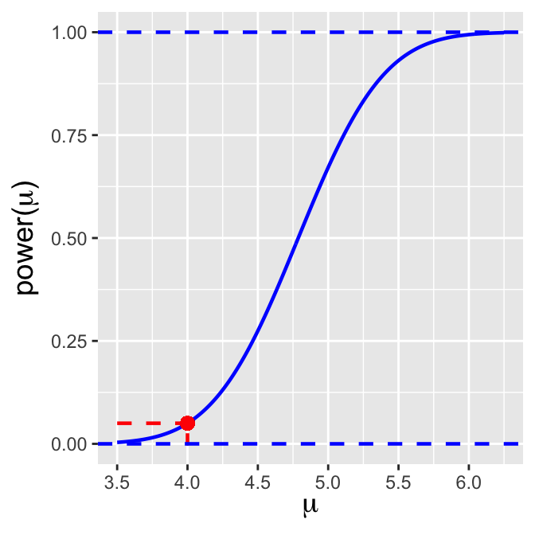
2.13.4.4 Normal Variance
Let’s assume that we have sampled \(n = 14\) iid data from a normal distribution of unknown mean and variance. We wish to test the null hypothesis \(H_o : \sigma^2 = \sigma_o^2 = 4\) versus the alternative \(H_a : \sigma^2 > \sigma_o^2\). What is the \(p\)-value if we observe \(s_{\rm obs}^2 = 5.5\)? What is the power of this test if \(\sigma^2 = 8\)? To answer each of these questions, we utilize the hypothesis test reference tables. We assume the level of the test is \(\alpha = 0.05\).
The relevant code for the \(p\)-value is
Code
y.obs <- 5.5
n <- 14
sigma2.o <- 4
1 - pgamma(y.obs, shape = (n - 1) / 2, scale = 2 * sigma2.o / (n - 1))[1] 0.1623236The \(p\)-value is 0.162, which is indeed \(> \alpha\). There is thus a 16.2 percent chance that we would sample a variance value of 5.5 or greater if the null is correct. This is too high a percentage for us to confidently reject the idea that \(\sigma^2 = 4\).
To compute test power, we first determine the rejection region boundary. The
Rfunction call is
Code
alpha <- 0.05
(y.rr <- qgamma(1 - alpha, shape = (n - 1) / 2, scale = 2 * sigma2.o / (n - 1)))[1] 6.880625The boundary is \(y_{\rm RR} = 6.881\). With that number in hand, we can compute the power assuming \(\sigma^2 = 8\):
Code
sigma2 <- 8
1 - pgamma(y.rr, shape = (n - 1) / 2, scale = 2 * sigma2 / (n - 1))[1] 0.5956563The power is 0.596: if \(\sigma^2\) is equal to 8, then 59.6 percent of the time we would sample a value of \(y_{\rm obs}\) that lies in the rejection region. This is not a particularly high value; if being able to differentiate between \(\sigma_o^2 = 4\) and \(\sigma^2 = 8\) is an important research goal, we would want to collect more data!
Below, we plot test power for this example versus sample size. Because we are not solving for \(n\) given a particular power value, there is no need to utilize
uniroot(); we simply need to loop over calls toqgamma()andpgamma(). (But note that we don’t actually “loop,” asR’s vectorization capabilities allow us to simply pass vectors of sample-size values into the function calls, with vectors of results being returned.) See Figure 2.18.
Code
alpha <- 0.05
sigma2.o <- 4
sigma2 <- 8
n <- 2:100
y.rr <- qgamma(1 - alpha, shape = (n - 1) / 2, scale = 2 * sigma2.o / (n - 1))
power <- 1 - pgamma(y.rr, shape = (n - 1) / 2, scale = 2 * sigma2 / (n - 1))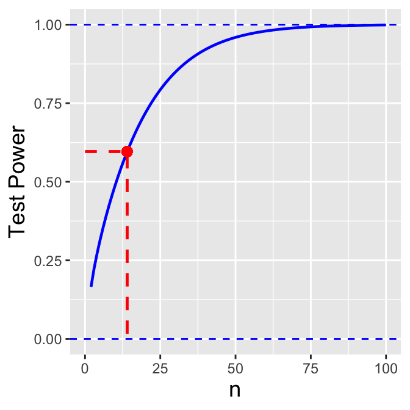
2.13.4.5 Normal Mean: Leveraging the CLT
Let’s go back to the example in the confidence interval section above, in which we worked with \(n\) iid data from the decidedly not-normal distribution \[ f_X(x) = \theta x^{\theta-1} ~~ x \in [0,1] \,, \] with \(\theta > 0\). For this distribution, \(E[X] = \mu = \theta/(\theta+1)\). We found that because we cannot express the sampling distribution of \(Y = \bar{X}\) analytically, our only path to determining a confidence interval was by making use of the Central Limit Theorem.
To determine \(p\)-value and test power, we would utilize the codes shown for the “variance known” case above (i.e., the ones based on
pnorm()andqnorm()). However, instead of plugging in \(\sigma^2\) (i.e.,sigma2), we would plug in the sample variance \(s_{\rm obs}^2\) (i.e.,s2.obs). For instance, if we assume that we have sampled \(n = 15\) data according to the distribution above, with \(\bar{x}_{\rm obs} = 0.65\) and \(s_{\rm obs}^2 = 0.01\), and we wish to test \(H_o : \mu = 0.6\) versus \(H_a : \mu > 0.6\) at the level \(\alpha = 0.05\), the \(p\)-value is given by
Code
n <- 15
alpha <- 0.05
mu.o <- 0.6
s2.obs <- 0.01
y.obs <- 0.65
1 - pnorm(y.obs, mean = mu.o, sd = sqrt(s2.obs / n))[1] 0.02640376Since \(p < \alpha\), we reject the null hypothesis and conclude that we have sufficient statistical evidence to state that the population mean \(\mu\) is greater than 0.6.
We note that, as is the case for confidence interval coverage, our result is only approximate, i.e., the Type I error rate is not exactly \(\alpha\), because the distribution of \(\bar{X}\) is not exactly normal. However, as we do in the confidence interval case, we can perform simulations to assess just how far off our actual Type I error rate \(\alpha\) is for any given analysis setting.
Code
set.seed(101)
num.sim <- 10000 # repeat the data-generating process 10,000 times
n <- 15
alpha <- 0.05
mu.o <- 0.6
typeIErr <- 0
for ( ii in 1:num.sim ) {
X <- rbeta(n, mu.o / (1 - mu.o), 1)
y.obs <- mean(X)
s2.obs <- var(X)
y.rr.lo <- qnorm( alpha / 2, mean = mu.o, sd = sqrt(s2.obs / n))
y.rr.hi <- qnorm(1-alpha / 2, mean = mu.o, sd = sqrt(s2.obs / n))
if ( y.obs <= y.rr.lo || y.obs >= y.rr.hi ) typeIErr = typeIErr + 1
}
cat("The observed proportion of Type I errors =", typeIErr / num.sim, "\n")The observed proportion of Type I errors = 0.0737 We observe an empirical Type I error rate of 0.0737. This is sufficiently far from the value we expect, \(\alpha = 0.05\), that we can conclude that when we draw \(n = 15\) data from the distribution given above, the sampling distribution of the mean is still only approximately normal.
2.13.4.6 Normal Mean: Two-Sample Testing
Let’s assume that we are given two independent samples of normal iid data: \[\begin{align*} \{U_1,\ldots,U_{n_U}\} &\sim \mathcal{N}(\mu_U,\sigma_U^2) \\ \{V_1,\ldots,V_{n_V}\} &\sim \mathcal{N}(\mu_V,\sigma_V^2) \,. \end{align*}\] The sample means are \(\bar{U}\) and \(\bar{V}\), respectively, and we know that \[ \bar{U} \sim \mathcal{N}\left(\mu_U,\frac{\sigma_U^2}{n_U}\right) ~~\mbox{and}~~ \bar{V} \sim \mathcal{N}\left(\mu_V,\frac{\sigma_V^2}{n_V}\right) \,. \] In a two-sample t test, the hypotheses being examined are, typically, \(H_o : \mu_U = \mu_V\) and \(H_a : \mu_U \neq \mu_V\). Thus a natural test statistic is \(\bar{U}-\bar{V}\), which, as the reader may confirm using the method of moment-generating functions, is itself normally distributed: \[ \bar{U} - \bar{V} \sim \mathcal{N}\left(\mu_U-\mu_V,\frac{\sigma_U^2}{n_U}+\frac{\sigma_V^2}{n_V}\right) \,. \] However, when neither variance is known, we cannot model the observed data with the normal distribution; instead, in Welch’s t test, we assume the following: \[ T = \frac{\bar{U}-\bar{V}}{S_\Delta} = \frac{\bar{U}-\bar{V}}{\sqrt{\frac{S_U^2}{n_U}+\frac{S_V^2}{n_V}}} \sim t_{\nu} \,, \] i.e., \(T\) is sampled according to a \(t\) distribution with \(\nu\) degrees of freedom, where \(\nu\) is estimated using the Welch-Satterthwaite equation: \[ \nu \approx \frac{S_\Delta^4}{\frac{S_U^4}{n_U^2(n_U-1)} + \frac{S_V^4}{n_V^2(n_V-1)}} \,. \] The rule-of-thumb for this approximation to hold is that both \(n_U\) and \(n_V\) need to be larger than 5. Note that in some applications, one might see \(\nu\) rounded off to an integer, but this is not necessary: one can work with the \(t\) distribution’s probability density function just fine even if \(\nu\) in not an integer! (Any rounding off is done to allow one to use \(t\) tables to estimate \(p\)-values.)
Can we “reformat” this test so as to be consistent with how we perform one-sample tests? The answer is yes. Let the test statistic be \(Y = \bar{U}-\bar{V} = S_{\Delta} T\), and let the null hypothesis be \(H_o : \mu_U - \mu_V = 0\). Then \[ F_Y(y) = P(Y \leq y) = P(S_{\Delta} T \leq y) = P\left(T \leq \frac{y}{S_{\Delta}}\right) = F_{T}\left(\frac{y}{S_{\Delta}}\right) \,, \] and thus the \(p\)-value is given by
Code
p <- 2 * min(c(pt(y.obs / S.Delta, nu), 1 - pt(y.obs / S.Delta, nu)))We note that the above code yields a result that is equivalent to that generated by the
Rfunctiont.test().
The reader may ask “what do I do if I have three or more samples and I want to test whether all of them have the same mean, with the alternative being that at least one of the means is different?” In such a situation, one would employ a one-way analysis of variance, or ANOVA, test. We introduce this test in Section 2.16.
2.13.4.7 Normal Variance: Two-Sample Testing
As was the case above for the two-sample \(t\) test, we assume that we are given two independent samples of iid data: \[\begin{align*} \{U_1,\ldots,U_{n_U}\} &\sim \mathcal{N}(\mu_U,\sigma_U^2) \\ \{V_1,\ldots,V_{n_V}\} &\sim \mathcal{N}(\mu_V,\sigma_V^2) \,, \end{align*}\] with sample variances \(S_U^2\) and \(S_V^2\), respectively. Given results shown in Section 2.9, we know that \[ S_U^2 \sim \mbox{Gamma}\left(\frac{n_U-1}{2},\frac{2\sigma_U^2}{n_U-1}\right) ~~~ \mbox{and} ~~~ S_V^2 \sim \mbox{Gamma}\left(\frac{n_V-1}{2},\frac{2\sigma_V^2}{n_V-1}\right) \,. \] In order to test hypotheses such as \(H_o : \sigma_U^2 = \sigma_V^2\) versus \(H_a : \sigma_U^2 \neq \sigma_V^2\), we combine the \(\sigma_i^2\)’s and the \(S_i^2\)’s into a single quantity for which we know the sampling distribution. Stated without proof, that quantity and that sampling distribution are \[ \frac{\frac{n_V-1}{2} \frac{2\sigma_V^2}{n_V-1} S_U^2}{\frac{n_U-1}{2} \frac{2\sigma_U^2}{n_U-1} S_V^2} = \frac{S_U^2/\sigma_U^2}{S_V^2/\sigma_V^2} \sim F_{n_U-1,n_V-1} \,, \] where \(F_{n_U-1,n_V-1}\) is an F distribution for \(n_U-1\) numerator, and \(n_V-1\) denominator, degrees of freedom. (Note that it doesn’t ultimately matter which sample is identified as \(U\) and which is identified as \(V\) so long as care is taken to not accidentally “reverse” the samples when coding the test.) The \(p\)-value is given by
Code
p <- 2 * min(c(pf(sU2 * sigmaV2.o / (sV2 * sigmaU2.o), n.U - 1, n.V - 1),
1 - pf(sU2 * sigmaV2.o / (sV2 * sigmaU2.o), n.U - 1, n.V - 1)))We note that the above code yields results that are equivalent to those generated by the
Rfunctionvar.test().
2.14 Distribution Testing: the Kolmogorov-Smirnov and Shapiro-Wilk Tests
What to take away from this section:
The Kolmogorov-Smirnov or KS test assesses whether an observed data sample is distributed according to a stated continuous distribution.
The Shapiro-Wilk test assesses whether an observed data sample is distributed according to a normal distribution.
The Shapiro-Wilk test is a more powerful test of normality than the KS test: we are more likely to reject the null hypothesis that our data are normally distributed when indeed they are not normally distributed.
In a conventional data analysis workflow, we might receive a sample of \(n\) iid data without any knowledge about the distribution from which the individual data are drawn, and we might want to test a hypothesis about, e.g., the population mean. There are potentially many hypothesis tests from which to choose, but the ones that are generally the most powerful (i.e., the ones that do the best at discriminating between a null hypothesis and a given alternative hypothesis) are the ones that assume a functional form for the distribution of the individual data. Above, we provide details about tests of population means and variances that are built upon the assumption that our data are normally distributed. Here, we introduce hypothesis tests that can help us decide whether it is plausible that our data are normally distributed in the first place.
To be clear about the analysis workflow…
- If we perform a hypothesis test for which the null hypothesis is that the individual data are normally distributed, and we fail to reject this null hypothesis, we can feel free to use the hypothesis tests in the previous sections, regardless of the sample size \(n\).
- If we reject the null hypothesis but the sample size is sufficiently large (\(n \gtrsim 30\)), and we wish to test hypotheses about the population mean, we can fall back on the central limit theorem, as shown above.
- If we reject the null hypothesis that the data are normally distributed, and the sample size is small or if we wish to test hypotheses about population variances (or both), we should tread carefully if we decide to use the hypothesis testing frameworks presented in the previous section, as the results we get might be very inaccurate(!).
However, regarding the third point above, we have to keep in mind that as \(n\) gets larger and larger, tests of normality become more and more prone to rejecting the null even when the deviation of the true distribution from a normal is small, meaning that the hypothesis tests detailed in the previous section might actually yield qualitatively “useful” results! Again, we would need to tread carefully. Alternative approaches include implementing so-called nonparametric tests (which we do not cover in this book), or trying to determine another distribution with which the data are consistent and building a test utilizing its properties, etc.
In the end: if in doubt, simulate. If we can make an assumption about the distribution from which our \(n\) iid data are sampled, we can always carry out hypothesis tests numerically. The reader should always keep this in mind: in the age of computers, one does not necessarily need to “force” an assumption of normality into an inferential exercise.
Let’s assume that we have collected \(n\) iid data from some unknown (and unassumed) distribution \(P\). Could \(P\) be the normal distribution? There are several varieties of tests whose null hypotheses are “the data are sampled according to the [insert name here] distribution.” The most well-known and often-used is the Kolmogorov-Smirnov test, or KS test. (We note that it is not necessarily the most powerful test among those that assess the consistency of data with named distributions, but it is easy to implement and simple to understand. The interested reader should investigate alternatives like, e.g., the Anderson-Darling test and Cramer-von Mises test, and for the specific case of testing for normality, the Shapiro-Wilk test, which we discuss below in an example. We also note that we only use the KS test to decide whether a given set of data are sampled according to a continuous distribution. To decide whether data are sampled according to a discrete distribution, one might use the chi-square goodness-of-fit test, which we introduce in Section 3.9.2.
The empirical cumulative distribution function (or ecdf) for a dataset is defined as \[ F_{X,n}(x) = \frac{1}{n} \left(\mbox{number of observed data} \, \leq x\right) \,. \] We see immediately that \(F_{X,n}(x)\) behaves like a cdf, in the sense that \(F_{X,n}(-\infty) = 0\) and \(F_{X,n}(\infty) = 1\), etc. It is a monotonically increasing step function, with steps of size \(1/n\) taken at each datum’s coordinate \(x_i\). If we assume a particular distribution as the null distribution, with cdf \(F_X(x)\), then the KS test statistic is \[ D_n = \mbox{sup} \vert F_{X,n}(x) - F_X(x) \vert \,. \] We have seen the abbrevation “inf” before, signaling that we are taking the infimum, or smallest value, of a set; here, “sup” stands for supremum, the largest value of a set. So for the KS test, the test statistic is simply the largest distance observed between the empirical and null cdfs (as evaluated at those values of \(x\) at which we observe data); if the null is wrong, we expect this distance to be large. Under the null, \(K = \sqrt{n}D_n\) is assumed to be, at least approximately, sampled according to a Kolmogorov distribution, whose cdf is \[ P(K \leq k) = \frac{\sqrt{2\pi}}{k} \sum_{x=1}^\infty \exp\left(-\frac{(2x-1)^2\pi^2}{8k^2}\right) \,. \] Having sampled \(k_{obs} = \sqrt{n}D_n\), we can use this cdf to establish whether our not the test statistic falls into the rejection region. If it does, we reject the null hypothesis that the individual data are normally distributed.
2.14.1 Examples
2.14.1.1 The Kolmogorov-Smirnov Test
Let’s suppose we are given a dataset that has the empirical distribution given in Figure 2.19.
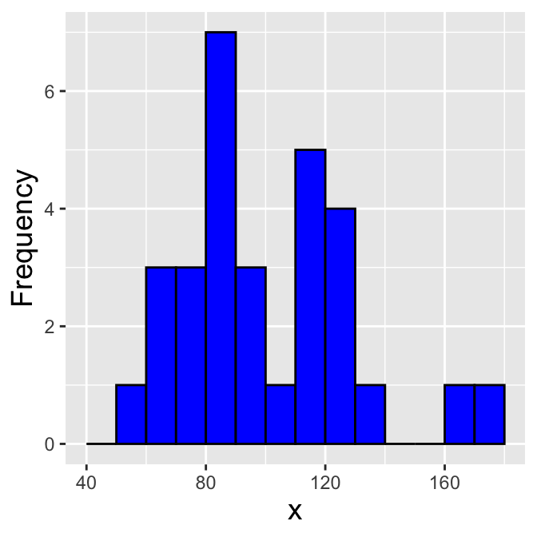
The sample statistics for these data are \(\bar{X} = 100.6\) and \(S = 29.8\). In Figure 2.20, we plot the empirical cdf for these data, overlaying the cdf for a \(\mathcal{N}(100.6,29.8^2)\) distribution.
Warning: Removed 1 row containing missing values or values outside the scale range
(`geom_segment()`).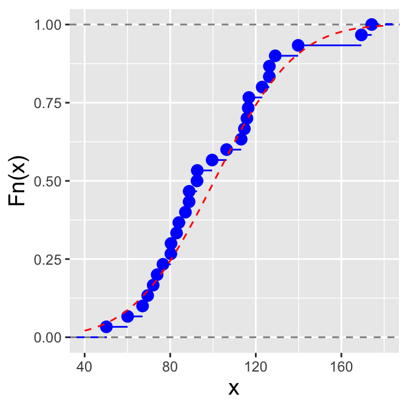
The largest difference between the empirical cdf and the overlaid normal cdf in Figure 2.20 occurs at \(x \approx 93\). Is this difference large enough for us to decide the data are not normally distributed with the inferred parameters \(\mu = 100.6\) and \(\sigma = 29.8\)?
Code
ks.test(x, "pnorm", 100.6, 29.8)
Exact one-sample Kolmogorov-Smirnov test
data: x
D = 0.13858, p-value = 0.5649
alternative hypothesis: two-sidedBy default,
ks.test()performs a two-sided test; type?ks.testin theRconsole to see how to specify alternatives. According to this test, the \(p\)-value is 0.56. We formally introduce \(p\)-values below, in the next section; it suffices to say here that if \(p < \alpha\), where \(\alpha\) is the user-specified Type I error (typically 0.05), we reject the null, so here we fail to reject the null hypothesis that the data are normally distributed. In truth, the simulated data are sampled from a gamma distribution (see Section 4.3.3); with a larger sample size, the test becomes more better able to differentiate between normally distributed and gamma-distributed data, so eventually we would reject the null hypothesis.
2.14.1.2 The Shapiro-Wilk Test
The Shapiro-Wilk test has the null hypothesis that our \(n\) iid data are sampled according to a normal distribution. The test statistic \(Y\), which utilizes order statistics (a concept we introduce in Section 3.5), is complicated and will not be reproduced here. It suffices for now for us to make three points.
- The Shapiro-Wilk test is a more powerful test than the KS test. (This makes sense because the SW test is built to be more “specific”\(-\)it is just used to test for normality). In other words, given the same data, the SW test will almost always output a smaller \(p\)-value than the KS test. See Figure 2.21.
- The sampling distribution for \(Y\) is non-analytic and thus the rejection region is estimated numerically, and thus the Shapiro-Wilk test cannot be used in
Rwith samples of size \(>\) 5000. If our sample size is larger, we should randomly sub-sample the data before performing the SW test.
- The Shapiro-Wilk test will often reject the null hypothesis of normality even when the data appear by eye to be very nearly normally distributed. This goes back to one of the points made above: we still might be able to glean “useful” results when performing normal-based hypothesis tests using technically non-normal data. Tread carefully, and simulate if necessary.
Below, we demonstrate the use of the Shapiro-Wilk test with the gamma-distributed data of the first example above.
Code
shapiro.test(x)
Shapiro-Wilk normality test
data: x
W = 0.9508, p-value = 0.1776We see that while the KS test returned a \(p\)-value of 0.56, the Shapiro-Wilk test returns the value 0.18. This value is still larger than \(\alpha = 0.05\), so we still fail to reject the null.
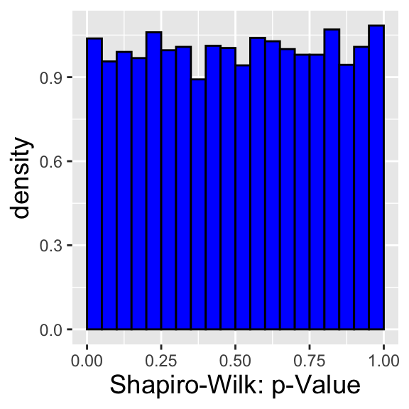
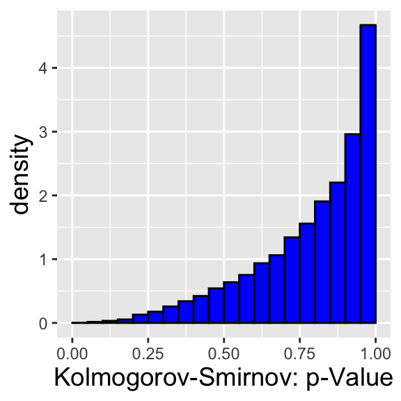
2.15 Simple Linear Regression
What to take away from this section:
A statistical model is a representation of the data-generating process.
Given a set of data tuples \(\{(x_1,Y_1),\ldots,(x_n,Y_n)\}\), where both the \(x_i\)’s and \(Y_i\)’s are continuously valued, we can attempt to determine an association between \(\mathbf{x}\) and \(\mathbf{Y}\) by learning a simple linear regression model: \[ Y_i = \beta_0 + \beta_1 x_i + \epsilon_i \,, \] where \(\beta_0\) and \(\beta_1\) are model coefficients and \(\epsilon_i\) is a random variable, the “error term.”
For the simple linear regression model to be a valid representation of the data-generating process…
\(E[\epsilon_i] = 0\); and
\(V[\epsilon_i] = \sigma^2\) for all values \(i\).
To conduct, e.g., the hypothesis test \(H_o : \beta_1 = 0\) versus \(H_a : \beta_1 \neq 0\), we must add a distributional assumption; by convention, this assumption is that the error terms are normally distributed.
Thus far in this chapter, we have assumed that we have been given a sample of iid data \(\{X_1,\ldots,X_n\} \sim \mathcal{N}(\mu,\sigma^2)\), or, sometimes, two samples that are independent of one another. Here we will move beyond this assumption to the case where our data consists of tuples \(\{(x_1,Y_1),\ldots,(x_n,Y_n)\}\) and where we want to determine (or learn) the association between the variables \(x_i\) and \(Y_i\). (Assuming there is one! See Figure 2.22. Also, note the use of the term “association”: a relationship might exist, but it is not necessarily the case that \(x\) “causes” \(Y\); to determine causation, one would utilize methods of causal inference, which are beyond the scope of this book.) In other words, we want to regress \(\mathbf{Y}\) upon \(\mathbf{x}\).
- \(\mathbf{x} = \{x_1,\ldots,x_n\}\): the predictor variable (or independent variable or covariate or feature)
- \(\mathbf{Y} = \{Y_1,\ldots,Y_n\}\): the response variable (or the dependent variable or target)
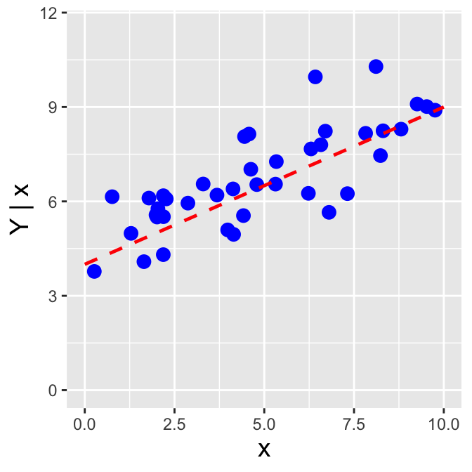
If the relationship between \(\mathbf{x}\) and \(\mathbf{Y}\) is deterministic, then there exists a function \(f\) such that \(y_i = f(x_i)\) for all \(i\). As statisticians, we are more interested in learning non-deterministic associations (so-called stochastic, probabilistic, or statistical relationships) between \(\mathbf{x}\) and \(\mathbf{Y}\). One standard model for the data-generating process is \[ Y_i \vert x_i = f(x_i) + \epsilon_i \,, \] where \(\{\epsilon_1,\ldots,\epsilon_n\}\) are random variables with \(E[\epsilon_i] = 0\) and uncorrelated variances \(V[\epsilon_i] = \sigma^2\) (i.e., the variances are the same for all \(i\)…they are homoscedastic). (Note that we are not saying anything about the distribution of \(\epsilon_i\) yet; we are just stating assumptions about its expected value and variance.) Now we can say why the predictor variable is represented in lower case while the response variable is in upper case: we consider the predictor variable values to be fixed, while the response variable values are random variables because the \(\epsilon_i\)’s are random variables.
We now suppose that there is a linear relationship between \(\mathbf{x}\) and \(\mathbf{Y}\) such that \[\begin{align*} Y_i &= \beta_0 + \beta_1 x_i + \epsilon_i \\ E[Y_i] &= E[\beta_0 + \beta_1 x_i + \epsilon_i] = \beta_0 + \beta_1 x_i + E[\epsilon_i] = \beta_0 + \beta_1 x_i \\ V[Y_i] &= V[\beta_0 + \beta_1 x_i + \epsilon_i] = V[\epsilon_i] = \sigma^2 \,. \end{align*}\] This is a simple linear regression model, where the word “simple” follows from the fact that there is only one predictor variable. (Note that this is a linear model because it is linear in the parameters; e.g., \(\beta_0 + \beta_1x_i^2\) is also a linear model.) \(\beta_0\) is dubbed the intercept and \(\beta_1\) is the slope. In analyses, we are generally interested in estimating \(\beta_1\), as it tells us the average change in \(Y\) given a one-unit change in \(x\).
Once a simple linear regression model is learned, we can make predictions \[ \hat{Y}_i = \hat{\beta}_0 + \hat{\beta}_1 x_i \] and we can compute residuals \[ e_i = Y_i - \hat{Y}_i \] The goal in the estimation process is to make the residuals as small as possible. Since negative values of \(e_i\) are as “bad” as positive values, we estimate \(\beta_0\) and \(\beta_1\) by minimizing the sum of squared errors or SSE: \(\sum_{i=1}^n e_i^2\). (Note that this term is often used interchangeably with the term residual sum of squares, or RSS.) This is the so-called ordinary least squares estimator, or OLS. Our use of the OLS estimator for \(\beta_0\) and \(\beta_1\) (as opposed to, e.g., \(\sum_{i=1}^n \vert e_i \vert\)) is motivated by the Gauss-Markov theorem, which states that the unbiased OLS estimator is the best estimator if the \(\epsilon_i\)’s are uncorrelated, have equal variances, and expected values of zero (hence motivating the assumptions stated above). Note that we have still not said anything about the distribution of the \(\epsilon_i\)’s: the Gauss-Markov theorem does not mandate that they have a particular distribution!
(As an aside: what happens if, e.g., we have data for which the variances are unequal, or heteroscedastic? We lose the ability to make statements like “the OLS estimator is the best linear unbiased estimator.” We can always learn the simple linear model we define above…a computer cannot stop us from doing so. It just may not be the best model choice…for instance, weighted OLS regression, where the weighting given each datum is related to how uncertain its value is, may provide better estimates.)
To estimate \(\beta_0\) and \(\beta_1\), we take partial derivatives of \[ \sum_{i=1}^n (Y_i - \hat{\beta}_0 - \hat{\beta}_1 x_i)^2 \] with respect to \(\hat{\beta}_0\) and \(\hat{\beta}_1\), set the results to zero, and solve for \(\hat{\beta}_0\) and \(\hat{\beta}_1\). Here, we will quote results, and provide the estimate of \(\sigma^2\), while leaving the derivations as exercises to the reader:
| Parameter | Estimate | Expected Value | Variance |
|---|---|---|---|
| \(\beta_0\) | \(\bar{Y}-\hat{\beta}_1\bar{x}\) | \(\beta_0\) | \(\sigma^2\left(\frac{1}{n}+\frac{\bar{x}^2}{S_{xx}}\right)\) |
| \(\beta_1\) | \(\frac{S_{xY}}{S_{xx}}\) | \(\beta_1\) | \(\frac{\sigma^2}{S_{xx}}\) |
| \(\sigma^2\) | \(\frac{1}{n-2}\) \(\sum_{i=1}^n\) \(e_i^2\) \(=\frac{SSE}{n-2}\) | \(\sigma^2\) | \(\frac{2\sigma^4}{n-2}\) |
The quantities \(S_{xx}\) and \(S_{xY}\) (and \(S_{YY}\)) are shorthand for the following: \[\begin{align*} S_{xx} &= \sum_{i=1}^n (x_i-\bar{x})^2 = \left(\sum_{i=1}^n x_i^2\right) - n\bar{x}^2 \\ S_{xY} &= \sum_{i=1}^n (x_i-\bar{x})(Y_i-\bar{Y}) = \left(\sum_{i=1}^n x_iY_i\right) - n\bar{x}\bar{Y} \\ S_{YY} &= \sum_{i=1}^n (Y_i-\bar{Y})^2 = \left(\sum_{i=1}^n Y_i^2\right) - n\bar{Y}^2 \,. \end{align*}\]
In Figure 2.23, we display the estimated regression line for the data shown above in Figure 2.22.
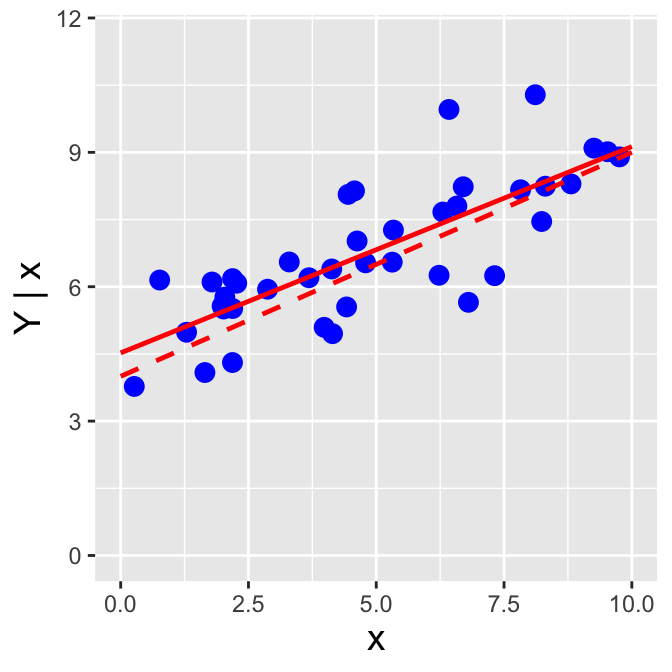
Ultimately, we are interested in determining if there is a statistically significant relationship between \(\mathbf{x}\) and \(\mathbf{Y}\), a question that we can answer using a hypothesis test: \[\begin{align*} H_o&: \beta_1 = 0 \implies Y_i = \beta_0 + \epsilon_i \\ H_a&: \beta_1 \neq 0 \implies Y_i = \beta_0 + \beta_1 x_i + \epsilon_i \end{align*}\] In order to carry out hypothesis testing, however, we have to now make a distributional assumption regarding the \(\epsilon_i\)’s. The standard assumption is that \[ \epsilon_i \sim \mathcal{N}(0,\sigma^2) \,, \] which means that \[ Y_i \vert x_i \sim \mathcal{N}(\beta_0+\beta_1x_i,\sigma^2) \] Adding this assumption to the model does not affect estimation; if, for instance, we were to derive the MLE estimators for \(\beta_0\) and \(\beta_1\), we would find that they are identical to the OLS estimators given above.
Does our distributional assumption for the \(\epsilon_i\)’s allow us to specify the distribution of, e.g., \(\hat{\beta}_1\)? The answer is yes. We begin by showing that \(\hat{\beta}_1\) can be written as a linear function of the response variable values: \[\begin{align*} \hat{\beta}_1 &= \frac{\left(\sum_{i=1}^n Y_i x_i\right) - n \bar{x}\bar{Y}}{\left(\sum_{i=1}^n x_i^2\right) - n\bar{x}^2} \\ &= \frac{1}{k} \left[ \left(\sum_{i=1}^n Y_i x_i\right) - n \bar{x}\bar{Y} \right] \\ &= \frac{1}{k} \left[ \left(\sum_{i=1}^n Y_i x_i\right) - \sum_{i=1}^n \bar{x} Y_i \right] \\ &= \frac{1}{k} \sum_{i=1}^n (x_i - \bar{x}) Y_i = \sum_{i=1}^n \left( \frac{x_i-\bar{x}}{k}\right) Y_i = \sum_{i=1}^n a_i Y_i \,. \end{align*}\] Because the \(Y_i\)’s are normally distributed, we know (via the method of moment-generating functions) that \(\hat{\beta}_1\) is also normally distributed, with mean \[ E[\hat{\beta}_1] = \sum_{i=1}^n a_i E[Y_i] = \cdots = \beta_1 \] and variance \[ V[\hat{\beta}_1] = \sum_{i=1}^n a_i^2 V[Y_i] = \sum_{i=1}^n a_i^2 \sigma^2 = \cdots = \frac{\sigma^2}{\left(\sum_{i=1}^n x_i^2\right) - n\bar{x}^2} \,. \] We can finally perform the hypothesis test. If \(\sigma^2\) is unknown, the standardized slope is assumed to be \(t\)-distributed for \(n-2\) degrees of freedom: \[ \frac{\hat{\beta}_1 - \beta_1}{se({\hat{\beta}_1})} = \frac{\hat{\beta}_1 - \beta_1}{\sqrt{V[{\hat{\beta}_1}]}} \sim t_{n-2} \,. \]
To reiterate:
- The assumption that \(\epsilon_i \sim \mathcal{N}(0,\sigma^2)\) allows us to test hypotheses about, e.g., \(\beta_1\). If this assumption is violated, then OLS regression is still the best linear unbiased estimator.
- If, in addition, the assumption that \(\epsilon_i\)’s are homoscedastic and uncorrelated is violated, the OLS regression will no longer be the best linear unbiased estimator, and we would need to seek alternatives, such as weighted OLS regression.
- Last…if, in addition, the assumption of \(E[\epsilon_i] = 0\) is violated, then using OLS will be a biased estimator. At this point, we would generally conclude that there is a better, nonlinear representation of the data-generating process that we should use.
2.15.1 Examples
2.15.1.1 Correlation: the Strength of Linear Association
We can measure the strength of a linear association via the metric of correlation. We define the correlation between a pair of random variables \(X\) and \(Y\) as \[ \rho_{XY} = \frac{E[XY] - E[X]E[Y]}{\sqrt{V[X]V[Y]}}\,, \] with \(\vert \rho_{XY} \vert \leq 1\). (We will discuss correlation and the related concept of covariance more in depth in Section 6.3. For now, just treat the equation above as a definition. The main thing to keep in mind is that if \(X\) and \(Y\) are independent random variables, \(\rho_{XY} = 0\), while if \(X = Y\) or \(X = -Y\), \(\rho_{XY} = 1\) and \(-1\) respectively.) If instead of a pair of random variables we have a set of tuples, we can still define a correlation, which we can estimate using the Pearson correlation coefficient: \[ R = \frac{\sum_{i=1}^n (x_i-\bar{x})(Y_i-\bar{Y})}{\left[\sum_{i=1}^n (x_i-\bar{x})^2\right]\left[\sum_{i=1}^n (Y_i-\bar{Y})^2\right]} = \frac{S_{xY}}{\sqrt{S_{xx}S_{YY}}} = \hat{\beta}_1 \sqrt{\frac{S_{xx}}{S_{YY}}} \,. \] The last equality follows from the fact that \(\hat{\beta}_1 = S_{xY}/S_{xx}\). It follows from this expression that \(R\) and \(\hat{\beta}_1\) have the same sign.
Related to the correlation is the coefficient of determination, or \(R^2\), a quantity ranging from 0 to 1 that is interpreted as the proportion of the variation in the response variable values explained by the predictor variable values. The closer \(R^2\) is to 1, the more strictly linear is the association between \(x\) and \(Y\).
For completeness, we mention “adjusted \(R^2\),” as this is an oft-quoted output from
R’s linear model function,lm(). (See below for example usage oflm().) Adjusted \(R^2\) attempts to correct for the tendency of \(R^2\) to over-optimistically indicate the quality of fit of a linear model. There are several formulae for computing adjusted \(R^2\);Ruses Wherry’s formula: \[ \mbox{Adj.}~R^2 = 1 - (1-R^2)\frac{n-1}{n-p-1} \,, \] where \(p\) is the number of predictor variables (with \(p = 1\) for simple linear regression).
2.15.1.2 The Expected Value of the Sum of Squared Errors (SSE)
Here we show that \(SSE/(n-2)\) is an unbiased estimator of \(\sigma^2\). This is a non-trivial algebraic exercise, and thus we will leave the calculation of \(V[\hat{\sigma^2}] = V[SSE/(n-2)] = 2\sigma^4/(n-2)\) as an exercise to the (masochistic) reader.
We start by writing that \[\begin{align*} SSE = \sum_{i=1}^n e_i^2 &= \sum_{i=1}^n (Y_i - \hat{Y}_i)^2 \\ &= \sum_{i=1}^n [Y_i - (\hat{\beta}_0 + \hat{\beta}_1 x_i)]^2 \\ &= \sum_{i=1}^n [Y_i - (\bar{Y} - \hat{\beta}_1 \bar{x} + \hat{\beta}_1 x_i)]^2 \\ &= \sum_{i=1}^n [(Y_i - \bar{Y}) - \hat{\beta}_1 (x_i-\bar{x})]^2 \\ &= \sum_{i=1}^n [(Y_i - \bar{Y})^2 - 2 \hat{\beta}_1 (x_i-\bar{x})(Y_i - \bar{Y}) + \hat{\beta}_1^2(x_i-\bar{x})^2] \\ &= S_{YY} - 2 \hat{\beta}_1 S_{xY} + \hat{\beta}_1^2 S_{xx} \\ &= S_{YY} - 2 \hat{\beta}_1 (S_{xx} \hat{\beta}_1) + \hat{\beta}_1^2 S_{xx} \\ &= S_{YY} - \hat{\beta}_1^2 S_{xx} \,. \end{align*}\] To find the expected value of this difference, we look first at \(S_{YY}\) and then at \(\hat{\beta}_1^2 S_{xx}\). \[\begin{align*} E[S_{YY}] &= E\left[ \sum_{i=1}^n (Y_i - \bar{Y})^2 \right] \\ &= E\left[ \sum_{i=1}^n \left(\beta_0 + \beta_1x_i + \epsilon_i - \beta_0 - \beta_1 \bar{x} - \bar{\epsilon} \right)^2 \right] \\ &= E\left[ \sum_{i=1}^n \left(\beta_1(x_i -\bar{x}) + (\epsilon_i - \bar{\epsilon}) \right)^2 \right] \\ &= E\left[ \sum_{i=1}^n \beta_1^2(x_i -\bar{x})^2 + \sum_{i=1}^n 2 \beta_1 (x_i - \bar{x})(\epsilon_i - \bar{\epsilon}) + \sum_{i=1}^n (\epsilon_i - \bar{\epsilon})^2 \right] \\ &= E\left[ \beta_1^2 S_{xx} + 2 \beta_1 \sum_{i=1}^n (x_i - \bar{x})(\epsilon_i - \bar{\epsilon}) + \sum_{i=1}^n (\epsilon_i - \bar{\epsilon})^2 \right] \\ &= \beta_1^2 S_{xx} + 2 \beta_1 \sum_{i=1}^n (x_i - \bar{x}) E\left[ \epsilon_i - \bar{\epsilon} \right] + \sum_{i=1}^n E\left[ (\epsilon_i - \bar{\epsilon})^2 \right] \,. \end{align*}\] Since \(E[\epsilon_i] = E[\bar{\epsilon}] = 0\), the middle term vanishes. As for the right-most term: \[\begin{align*} \sum_{i=1}^n E\left[ (\epsilon_i - \bar{\epsilon})^2 \right] &= \sum_{i=1}^n E\left[ \epsilon_i^2 - 2\epsilon_i \bar{\epsilon} + \bar{\epsilon}^2 \right] \\ &= \sum_{i=1}^n E\left[ \epsilon_i^2 \right] - 2 \sum_{i=1}^n E\left[\epsilon_i \bar{\epsilon}\right] + \sum_{i=1}^n E\left[\bar{\epsilon}^2\right] \\ &= \sum_{i=1}^n E\left[ \epsilon_i^2 \right] - 2 E\left[ \bar{\epsilon} \sum_{i=1}^n \epsilon_i \right] + E\left[ \sum_{i=1}^n \bar{\epsilon}^2\right] \\ &= \sum_{i=1}^n V[\epsilon_i] + \sum_{i=1}^n \left(E[\epsilon_i]\right)^2 - 2 n E\left[ \bar{\epsilon}^2 \right] + n E\left[ \bar{\epsilon}^2\right] \\ &= \sum_{i=1}^n \sigma^2 - n E\left[ \bar{\epsilon}^2 \right] \\ &= n \sigma^2 - n \frac{\sigma^2}{n} = (n-1)\sigma^2 \,. \end{align*}\] So at this point, we have that \[ E[S_{YY}] = S_{xx} \beta_1^2 + (n-1)\sigma^2 \,. \] Now let’s look at \(E[\hat{\beta}_1^2 S_{xx}]\): \[\begin{align*} E\left[\hat{\beta}_1^2 S_{xx}\right] &= S_{xx} E\left[\hat{\beta}_1^2\right] \\ &= S_{xx} \left( V\left[ \hat{\beta}_1 \right] + \left( E\left[ \hat{\beta}_1 \right] \right)^2 \right) \\ &= S_{xx} \left( \frac{\sigma^2}{S_{xx}} + \beta_1^2 \right) \\ &= \sigma^2 + S_{xx} \beta_1^2 \,. \end{align*}\] So \[ E[SSE] = S_{xx} \beta_1^2 + (n-1)\sigma^2 - \sigma^2 - S_{xx} \beta_1^2 = (n-2)\sigma^2 \,. \] Thus \(SSE/(n-2)\) is an unbiased estimator of \(\sigma^2\).
2.15.1.3 Linear Regression in R
Below, we show the results of learning a linear regression model using
R. The data are the same as used to produce Figure 2.23, with the parameter estimates output bylm()mapping directly to the solid red line in that figure.
Code
# lm(): "linear model"
# y~x : this is a "model formula" that in words translates as
# "regress the response data y upon the predictor data x"
# or "estimate beta_0 and beta_1 for the model E[Y] = beta_0 + beta_1 x"
lm.out = lm(y ~ x)
# show a summary of the model
summary(lm.out)
Call:
lm(formula = y ~ x)
Residuals:
Min 1Q Median 3Q Max
-2.00437 -0.53068 0.04523 0.40338 2.47660
Coefficients:
Estimate Std. Error t value Pr(>|t|)
(Intercept) 4.5231 0.3216 14.063 < 2e-16 ***
x 0.4605 0.0586 7.859 1.75e-09 ***
---
Signif. codes: 0 '***' 0.001 '**' 0.01 '*' 0.05 '.' 0.1 ' ' 1
Residual standard error: 0.9792 on 38 degrees of freedom
Multiple R-squared: 0.6191, Adjusted R-squared: 0.609
F-statistic: 61.76 on 1 and 38 DF, p-value: 1.749e-09
- The model residuals \(Y_i - \hat{Y}_i\) are summarized via five numbers (minimum, maximum, and median, along with the 25\(^{\rm th}\) and 75\(^{\rm th}\) percentile values). If, e.g., the median is substantially different from zero, it is possible that the assumption that \(Y \vert x\) is normally distributed is violated…and it is possible that the assumption \(E[\epsilon_i] = 0\) is violated as well.
- Under
Coefficients, there are four numerical columns. The first shows \(\hat{\beta}_0\) ((Intercept)) and \(\hat{\beta}_1\) (x), the second shows the estimated standard errors for these statistics, the third is simply the ratio of the values in the first and second columns, and the fourth is the \(p\)-value. The third and fourth columns are distribution-specific: the hypothesis test being carried out has a null of zero, and thet valueis assumed to be \(t\)-distributed for \(n-2\) degrees of freedom. The \(p\)-values in the fourth column are \(\ll \alpha = 0.05\), which lead us to decide that both the intercept and the slope are truly non-zero. (In our simulation, they are: \(\beta_0 = 4\) and \(\beta_1 = 0.5\).)- The
Residual standard errorshows the value of \(\hat{\sigma} = \sqrt{SSE/(n-2)}\), while the “38 degrees of freedom” indicates that \(n = 40\). We note that in this simulation, \(\sigma^2 = 1\).- The meanings behind the
R-squaredvalues are explained above in the correlation example. In words, approximately 60% of the variation exhibited by the data is accounted for with the linear model.- Last, the line with the phrase
F-statisticshows the result of a hypothesis test in which (in general) the null is that all the \(\beta_i\)’s (excluding \(\beta_0\)) are zero and the alternative is that at least one of the \(\beta_i\)’s is non-zero. Here, since there is only one non-intercept coefficient, the \(p\)-value is equivalent to the one printed underCoefficients. We will discuss where theF-statisticandDFnumbers come from below in the next section.
2.16 One-Way Analysis of Variance
What to take away from this section:
- Given a set of data tuples \(\{(x_1,Y_1),\ldots,(x_n,Y_n)\}\), where the \(x_i\)’s are discretely valued (and perhaps categorical, with no explicit ordering) and where the \(Y_i\)’s are normally distributed random variables, we can use one-way analysis of variance to test the hypothesis that the sample means of \(Y\) given each value of \(x\) are the same.
In the simple linear regression setting, our data consists of a continuously distributed predictor variable \(\mathbf{x}\) and response variable \(\mathbf{Y}\). What if, instead, the predictor variable values come in groups? For instance, we might wish to determine the time a person needs to accomplish a task after eating either chocolate or vanilla ice cream. To do this, we might map the eating of chocolate to a particular value of \(x\), say \(x = 0\), and the eating of vanilla to another value of \(x\), say \(x = 1\). Then, if we continue to adopt a simple linear regression framework, we have that \[\begin{align*} Y_i &= \beta_0 + \beta_1 x_i + \epsilon_i \\ E[Y_i \vert x_i = 0] &= \beta_0 \\ E[Y_i \vert x_i = 1] &= \beta_0 + \beta_1 \,. \end{align*}\] To see if there is a difference in task-accomplishment time between groups, we would test the hypothesis \(H_o: \beta_1 = 0\) versus \(H_a: \beta_1 \neq 0\). As the value of the slope is meaningless, beyond whether or not it is zero (because the mapping from group characteristics to values of \(x\) is arbitrary), we would not run a conventional linear regression analysis; rather, if we assume that \(\bar{Y} \vert x_i\) is normally distributed, we would run a two-sample \(t\) test like the Welch’s \(t\) test described in an example in Section 2.13 to determine whether \(\bar{Y} \vert x_i=0\) is drawn from a distribution with the same population mean as \(\bar{Y} \vert x_i=1\).
What if there are more than two groups (or treatments)? For instance, what if we redo the experiment but add strawberry ice cream? When the number of groups is greater than two, we move from the two-sample \(t\) test to one-way analysis of variance (or one-way ANOVA; the “one-way” indicates that there is a single predictor variable, which in our example is ice cream flavor). See Figure 2.24.
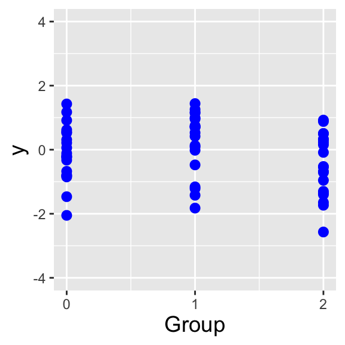
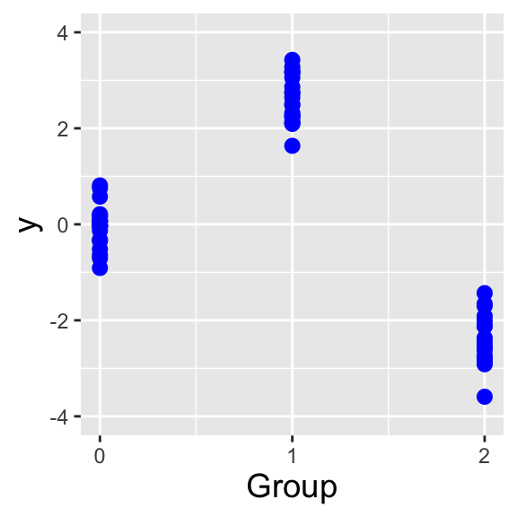
Let the index \(i\) denote a particular group (chocolate ice-cream eaters, etc.) and let the index \(j\) denote different data within the same group. Let \(n_i\) denote the sample size within each group, and let \(k\) denote the total number of groups. The total sum of squares is defined as the sum of squared differences between \(Y_i\) and \(\bar{Y}\), which in this setting can be expressed via a double summation, one over data within a group, and another over groups: \[\begin{align*}
\mbox{Total SS} &= \sum_{i=1}^k \sum_{j=1}^{n_i} (Y_{ij} - \bar{Y})^2 = \sum_{i=1}^k \sum_{j=1}^{n_i} (Y_{ij}-\bar{Y}_{i\bullet})^2 + \sum_{i=1}^k n_i(\bar{Y}_{i\bullet}-\bar{Y})^2\\
&= SSE + SST \,,
\end{align*}\] where \(\bar{Y}_{i\bullet}\) is the average value for group \(i\), \(SSE\) has its usual meaning as the sum of squared errors (although here \(\hat{\beta}_0+\hat{\beta}_1x_i\) is replaced with the estimated group mean \(\bar{Y}_{i\bullet}\)), and \(SST\) is the sum of squared average treatment effects. If the \(SSE\) value is large relative to the \(SST\) value, then we are in a situation where the data are spread widely within each group relative to the spread in values of the group means. In such a situation, it would be difficult to detect a statistically significant difference between the group means. (See the left panel of Figure 2.24.) On the other hand, if the \(SST\) value is large relative to the \(SSE\) value, then the group means have a wide spread compared to the data in each group. In such a situation, it would be much easier to detect a statistically significant difference between the group means. (See the right panel of Figure 2.24.) This reasoning motivates using the ratio of \(SST\) to \(SSE\) as the hypothesis test statistic. However, we do not know its distribution…or at least, not yet. We do know is that under the null, \[\begin{align*}
W_T = \frac{SST}{\sigma^2} &\sim \chi_{k-1}^2 \\
W_E = \frac{SSE}{\sigma^2} &\sim \chi_{n-k}^2 \,.
\end{align*}\] And we know that \[
F = \frac{W_1/\nu_1}{W_2/\nu_2} \sim F_{\nu_1,\nu_2} \,,
\] i.e., the ratio of chi-square distributed random variables, each divided by their respective number of degrees of freedom, is \(F\)-distributed for \(\nu_1\) numerator and \(\nu_2\) denominator degrees of freedom. Thus \[
F = \frac{SST/(k-1)}{SSE/(n-k)} = \frac{MST}{MSE} \sim F_{k-1,n-k} \,.
\] In the ANOVA hypothesis test, the null hypothesis \(H_o\) is that \(E[Y_1] = E[Y_2] = \cdots = E[Y_k]\), and the alternative hypothesis is that at least one mean is different from the others. If we test at level \(\alpha\), we reject the null hypothesis if \(F > F_{1-\alpha,k-1,n-k}\). In R, the boundary of the rejection region would be given by qf(1 - alpha, k - 1, n - k) while the \(p\)-value would be given by 1 - pf(F.obs, k - 1, n - k).
2.16.1 Examples
2.16.1.1 One-Way ANOVA: the Statistical Model
In the notes above, we build up the test statistic for the one-way ANOVA, but we do not discuss the underlying statistical model. We can write down the model as \[ Y_{ij} = \mu + \tau_i + \epsilon_{ij} \,, \] where \(i\) denotes the treatment group and \(j\) denotes an observed datum within group \(i\). \(\mu\) is the overall mean response, while \(\tau_i\) is the deterministic effect of treatment in group \(i\). (\(\tau\) is the Greek letter tau, which is pronounced “tao” [rhyming with “ow,” an expression of pain]. Recall that by “deterministic” we mean that \(\tau_i\) is not random.) The error terms \(\epsilon_{ij}\) are independent, normally distributed, and homoscedastic with variance \(\sigma^2\).
Recall that \(\bar{Y}_{i\bullet}\) is the sample mean within group \(i\). We know it is distributed normally (by assumption) but what are its expected value and variance?
The expected value is \[\begin{align*} E[\bar{Y}_{i\bullet}] &= E\left[\frac{1}{n_i}\sum_{j=1}^{n_i} Y_{ij}\right] = \frac{1}{n_i}\sum_{j=1}^{n_i} E[Y_{ij}] \\ &= \frac{1}{n_i}\sum_{j=1}^{n_i} E[\mu + \tau_i + \epsilon_{ij}] = \mu + \tau_i + E[\epsilon_{ij}] = \mu+\tau_i \,, \end{align*}\] while the variance is \[\begin{align*} V[\bar{Y}_{i\bullet}] &= V\left[\frac{1}{n_i}\sum_{j=1}^{n_i} Y_{ij}\right] = \frac{1}{n_i}\sum_{j=1}^{n_i^2} V[Y_{ij}] = \frac{1}{n_i^2}\sum_{j=1}^{n_i} V[\mu + \tau_i + \epsilon_{ij}]\\ &= \frac{n_i V[\epsilon_{ij}]}{n_i^2} = \frac{\sigma^2}{n_i} \,. \end{align*}\] Thus \(\bar{Y}_{i\bullet} \sim \mathcal{N}(\mu+\tau_i,\sigma^2/n_i)\).
2.16.1.2 Linear Regression in R: Redux
The last example of the last section showed the output from
lm(),R’s linear model function:
Code
summary(lm.out)
Call:
lm(formula = y ~ x)
Residuals:
Min 1Q Median 3Q Max
-2.00437 -0.53068 0.04523 0.40338 2.47660
Coefficients:
Estimate Std. Error t value Pr(>|t|)
(Intercept) 4.5231 0.3216 14.063 < 2e-16 ***
x 0.4605 0.0586 7.859 1.75e-09 ***
---
Signif. codes: 0 '***' 0.001 '**' 0.01 '*' 0.05 '.' 0.1 ' ' 1
Residual standard error: 0.9792 on 38 degrees of freedom
Multiple R-squared: 0.6191, Adjusted R-squared: 0.609
F-statistic: 61.76 on 1 and 38 DF, p-value: 1.749e-09In that example, we indicated that the numbers on the line beginning
F-statisticwould make more sense after we covered one-way analysis of variance.
There are two coefficients in this model, which is analogous to two “treatment groups.” Hence \(k = 2\), \(SST/\sigma^2 \sim \chi_{k-1=1}^2\), and \(SSE/\sigma^2 \sim \chi_{n-k=38}^2\). This explains
on 1 and 38 DF. The \(F\) statistic is \(MST/MSE = 61.76\), which under the null is sampled according to an \(F\) distribution with 1 numerator and 38 denominator degrees of freedom. This is an extreme value under the null, as indicated by the \(p\)-value 1.749 \(\times 10^{-9}\)…so we conclude that the true value of the slope \(\beta_1\) is not zero.
But there’s more. To access more information about the \(F\) test that is carried out, we can call the
anova()function.
Code
anova(lm.out)Analysis of Variance Table
Response: y
Df Sum Sq Mean Sq F value Pr(>F)
x 1 59.208 59.208 61.756 1.749e-09 ***
Residuals 38 36.432 0.959
---
Signif. codes: 0 '***' 0.001 '**' 0.01 '*' 0.05 '.' 0.1 ' ' 1This function call outputs information we could not see above: the \(SST\) (the first row of
Sum Sq), \(SSE\) (second row), \(MST\) (the first row ofMean Sq), and \(MSE\) (second row). TheF valueis the ratio \(MST/MSE\); here, that is 59.208/0.959 = 61.756.
2.17 The Exponential Family of Distributions
What to take away from this section:
The normal distribution is a member of a larger set of distributions that is dubbed the exponential family of distributions.
Foreshadowing: members of the exponential family have, as we will see in Section 3.8, single-valued sufficient statistics that are the optimal statistics to use when performing statistical inference.
We conclude this chapter by placing the normal distribution into a larger context: the exponential family of distributions, which encompasses the normal as well as, e.g., the binomial, beta, Poisson, and gamma distributions, the ones that serve as the foci for Chapters 3 and 4. Knowing about the exponential family and its properties will help us better understand concepts of statistical inference that we introduce in those chapters, such as the concept of sufficiency.
Let’s assume that we are examining a distribution \(P\) that has one freely varying parameter \(\theta\). \(P\) is a member of the exponential family of distributions if we can express, e.g., its probability density function as \[\begin{align*} f_X(x \vert \theta) = h(x) \exp\left[\eta(\theta) T(x) - A(\theta)\right] \,. \end{align*}\] (This same result holds for a mass function \(p_X(x \vert \theta)\) as well. Note that \(\theta\) cannot be a domain-specifying parameter, so a distribution whose domain is, e.g., \(x \in [0,\theta]\) cannot belong to the exponential family.)
Let’s see how this works with a normal distribution of known variance: \[\begin{align*} f_X(x \vert \mu) &= \frac{1}{\sqrt{2\pi\sigma^2}} \exp\left[-\frac{1}{2\sigma^2}(x-\mu)^2\right]\\ &= \frac{1}{\sqrt{2\pi\sigma^2}} \exp\left(-\frac{x^2}{2\sigma^2}\right) \exp\left(\frac{x\mu}{\sigma^2}\right) \exp\left(-\frac{\mu^2}{2\sigma^2}\right) \,. \end{align*}\] From this, we can directly read off the functions that together comprise the exponential family form: \[\begin{align*} h(x) &= \frac{1}{\sqrt{2\pi\sigma^2}} \exp\left(-\frac{x^2}{2\sigma^2}\right) \\ \eta(\mu) &= \frac{\mu}{\sigma^2} \\ T(x) &= x \\ A(\mu) &= \frac{\mu^2}{2\sigma^2} \,. \end{align*}\] We note that we can also define \(\eta(\mu) = \mu\) and \(T(x) = x/\sigma^2\). Ultimately, the choice of where to place any constants (either within the \(\eta(\cdot)\) function or within \(T(\cdot)\) function) makes no difference when we are performing inferential tasks.
2.17.1 Example
2.17.1.1 Exponential Family with a Vector of Parameters
The more general functional form of the exponential family that we use when a distribution has \(p \geq 2\) parameters is \[\begin{align*} f_X(x \vert \boldsymbol{\theta}) = h(x) \exp\left[\left(\sum_{i=1}^p \eta_i(\boldsymbol{\theta}) T_i(x)\right) - A(\boldsymbol{\theta})\right] \,. \end{align*}\] For the normal distribution with unknown mean and variance, we can examine the expression \[\begin{align*} f_X(x \vert \mu) = \frac{1}{\sqrt{2\pi\sigma^2}} \exp\left(-\frac{x^2}{2\sigma^2}\right) \exp\left(\frac{x\mu}{\sigma^2}\right) \exp\left(-\frac{\mu^2}{2\sigma^2}\right) \,, \end{align*}\] and, after noting that \[\begin{align*} \frac{1}{\sqrt{2\pi\sigma^2}} = \exp\left(\log\left(\frac{1}{\sqrt{2\pi\sigma^2}}\right)\right) = \exp\left(-\frac12 \log\left(2 \pi \sigma^2\right) \right) \,, \end{align*}\] we can read off the constituent functions: \[\begin{align*} h(x) &= 1 \\ \eta_1(\mu,\sigma^2) &= -\frac{1}{2\sigma^2} \\ T_1(x) &= x^2 \\ \eta_2(\mu,\sigma^2) &= \frac{\mu}{\sigma^2} \\ T_2(x) &= x \\ A(\mu,\sigma^2) &= \frac{\mu^2}{2\sigma^2} + \frac12 \log\left(2 \pi \sigma^2\right) \,. \end{align*}\]
2.18 Exercises
We are given that \(X \sim \mathcal{N}(4,4)\). (a) What is \(P(X > 2 \vert X > 0)\), in terms of \(\Phi(\cdot)\) and/or \(\Phi^{-1}(\cdot)\)? (b) Determine the value \(c\) such that \(P(X < c \vert X < 4) = 0.5\); leave your answer in terms of \(\Phi(\cdot)\) and/or \(\Phi^{-1}(\cdot)\).
What is \(E[e^{-Z^2/2}]\) if \(Z \sim \mathcal{N}(0,1)\)?
A filtering machine only passes through widgets that have masses between 4 and 6. Assume that the mass of a widget is a random variable \(M \sim \mathcal{N}(5,4)\). (a) What is the probability that the filtering machine will reject any given widget? Leave your answer in terms of \(\Phi(\cdot)\) and/or \(\Phi^{-1}(\cdot)\), both here and in part (b). (b) Now assume that \(\sigma\) is unknown. What is \(\sigma\) such that the probability of rejection is 0.02?
We are given that \(X_1\) and \(X_2\) are iid draws from a normal distribution with mean \(\mu\) and variance \(\sigma^2\). What is the value of \(c\) such that the probability of \(X_1 < \mu - c\) and \(X_2 > \mu\) is 1/4? Leave the answer in terms of \(\Phi(\cdot)\) and/or \(\Phi^{-1}(\cdot)\).
The moment-generating function for the Laplace distribution is \[\begin{align*} m(t) = \frac{\exp(a t)}{1 - b^2 t^2} \,. \end{align*}\] Derive \(E[X]\) for this distribution.
We are given the probability mass function shown below. (a) Derive the moment-generating function for this distribution. (b) Use the derived mgf to compute \(E[X]\).
| \(x\) | 0 | 1 | 2 |
| \(p_X(x)\) | 0.2 | 0.4 | 0.4 |
We are given the following probability density function: \[\begin{align*} f_X(x) = ke^{-x} \,, \end{align*}\] for \(x \in [0,a]\). \(k\) is a constant that need not be evaluated. (a) Write down the moment-generating function associated with this pdf. (b) Determine \(E[X]\) for this pdf.
We are given the two probability mass functions shown below. (a) Write down the moment-generating functions for both \(X_1\) and \(X_2\). (b) Write down the moment-generating function for the random variable \(Y = X_1 + 2X_2\).
| \(x_1\) | \(p_{X_1}(x_1)\) | \(x_2\) | \(p_{X_2}(x_2)\) |
| 0 | 0.4 | 0 | 0.2 |
| 1 | 0.6 | 1 | 0.8 |
The Rademacher distribution is \[\begin{align*} p_X(x) = \left\{ \begin{array}{cc} \frac12 & x = -1 \\ \frac12 & x = 1 \end{array} \right. \,. \end{align*}\] (a) Derive the moment-generating function for a Rademacher random variable. (b) Assume that we have drawn \(n\) iid data from the Rademacher distribution. Write down the moment-generating function for the sample mean, \(\bar{X} = (\sum_{i=1}^n X_i)/n\).
We are given the following probability density function: \[\begin{align*} f_X(x) = \left\{ \begin{array}{cc} 1/3 & x \in [0,1/2) \\ 2/3 & x \in [1/2,1] \end{array} \right. \,. \end{align*}\] Derive the moment-generating function for \(X\).
We sample \(n = 16\) iid data from a normal distribution with mean 5. The sample variance is 9. (a) Compute \(P(3 \leq \bar{X} \leq 6)\). Leave the answer in terms of \(\Phi(\cdot)\) and/or \(\Phi^{-1}(\cdot)\). (b) We now sample 49 iid data from an exponential distribution with mean 5 and variance 25. Use the Central Limit Theorem to compute an approximate value for \(P(3 \leq \bar{X} \leq 6)\); leave the answer in terms of \(\Phi(\cdot)\) and/or \(\Phi^{-1}(\cdot)\).
We sample two iid data, \(X_1\) and \(X_2\), from a normal distribution with mean \(\mu = 1\) and variance \(\sigma^2 = 1\). (a) Derive the distribution of \(X_1 - X_2\); provide both a name (or appropriate symbol) and the parameter value(s) for the distribution. (b) Derive \(P(X_1 \geq X_2)\). (c) Now assume \(\sigma^2\) is unknown. For what value of \(\sigma\) will the following hold: \(P(X_1 \leq 0 \cup X_1 \geq 2) = 0.2\)? Utilize standardization and symmetry; the answer should have a single \(\Phi\) or \(\Phi^{-1}\) symbol in it.
Derive the distribution for \(\bar{X}-\mu\), assuming that we sample \(n\) iid data from a normal distribution with mean \(\mu\) and variance \(\sigma^2\). Provide the distribution’s name or symbol and its parameter value(s).
We are given \(n=16\) iid data sampled according to a normal distribution with unknown mean and variance. The sample standard deviation is \(S = 2\). Write down an expression for the probability that \(\bar{X}\) is within 1 of \(\mu\), i.e. write down an expression of the form \(P(a \leq X \leq b)\), stating clearly what family of distributions \(X\) is sampled from as well as the values of the numeric constants \(a\) and \(b\).
The time to complete a particular task is normally distributed with mean 30 hours. What is the value of \(\sigma\) such that 90 percent of workers take at least 25 hours to complete the task? Leave the answer in terms of \(\Phi(\cdot)\) and/or \(\Phi^{-1}(\cdot)\).
We are given that \[\begin{align*} f_X(x) = 3x^2 \end{align*}\] for \(x \in [0,1]\), and that \(U = X^3\). Write down \(f_U(u)\).
Let the random variable \(X\) be uniformly distributed on the interval [0,1], and let \(W = X^2\). What is \(P(1/4 \leq W \leq 1/2)\)?
We are given that the random variable \(X\) is sampled according to the following probability density function: \[\begin{align*} f_X(x) = e^{-x} \,, \end{align*}\] for \(x \geq 0\). Assume \(U = X^2+4\). Derive the pdf \(f_U(u)\).
We are given that the random variable \(X\) is sampled according to the probability density function \[\begin{align*} f_X(x) = \frac{1}{\beta} e^{-x/\beta} \end{align*}\] Let \(U = -2 X\). (a) What is the pdf for \(U\)? (b) Is \(U\) sampled from an exponential distribution?
We are given that \[\begin{align*} f_X(x) = 1/2 \end{align*}\] for \(x \in [-1,1]\), and that \(U = X^2-1\). (a) Write down \(f_U(u)\). (b) Compute \(E[U+1]\).
We are told that the random variable \(Y\) is sampled according to the probability density function \[\begin{align*} f_X(x) = 3x^2 \end{align*}\] for \(x \in [0,1]\). Let \(U = e^{-X}\). Derive \(f_U(u)\).
We are given the following probability density function: \[\begin{align*} f_X(x) = \theta x^{\theta-1} \,, \end{align*}\] for \(x \in [0,1]\) and \(\theta > 0\). (a) Let \(U = \exp(X)\). What is \(f_U(u)\)? (b) Let \(U = 2X\). What is \(P(U \geq 1)\)?
We are to sample \(n = 11\) iid data from a normal distribution of unknown mean and variance, and we wish to compute what \(P(1 \leq S^2 \leq 2)\) would be if we assume that \(\sigma^2 = 2\). Write down an expression of the form \(P(a \leq X \leq b)\), where \(X\) is a statistic with a known sampling distribution. State the distribution that \(X\) is sampled according to, the parameter value(s) for that distribution, and the values of the numeric constants \(a\) and \(b\).
A client asks us to compute \(P(a \leq {\bar X}\sqrt{n}/S \leq b)\), where \(a\) and \(b\) are constants, and \({\bar X}\), \(S\), and \(n\) are the sample mean, standard deviation, and size respectively. (The client adds that the individual \(X\)’s are all iid samples from a normal with mean \(\mu\) and variance \(\sigma^2\).) Leave appropriate cdf or inverse cdf symbols in the answer, while clearly stating what distribution the cdf corresponds to, and any parameter values for that distribution.
We sample \(n\) iid data from a normal distribution with known mean \(\mu\). (a) Write an expression for \(P(\bar{X}/S \leq a)\) that includes a(n inverse) cdf symbol. (If appropriate, indicate the number of degrees of freedom.) (b) Now assume we don’t know the sample size but we do know the standard deviation \(\sigma\). Determine the sample size such that \(P(\bar{X}/\sigma \leq a) = b\). The answer should contain a(n inverse) cdf symbol. (If appropriate, indicate the number of degrees of freedom. Note that since we are not looking for a numerical answer, just solve for \(n\), and do not indicate that, e.g., we would round the answer up to the nearest integer.)
We are given the following probability density function: \[\begin{align*} f_X(x) = \theta (1-x)^{\theta - 1} \,, \end{align*}\] where \(x \in [0,1]\) and \(\theta > 0\). (a) Derive the Fisher information \(I(\theta)\). (b) Write down the Cramer-Rao Lower Bound on the variance of \(\hat{\theta}\), assuming we have sampled \(n\) iid data according to the distribution given above.
Let \(X_1,\ldots, X_n\) be iid data sampled according to the following probability density function: \[\begin{align*} f_X(x) = \frac{1}{\theta} e^x e^{1/\theta} e^{-e^x/\theta} \,. \end{align*}\] For this pdf, \(x \geq 0\) and \(\theta > 0\). Also note that \(E[e^X] = \theta+1\) and that \(V[e^X] = \theta^2\). (a) Find the maximum likelihood estimate for \(\theta\). (b) Find the Cramer-Rao Lower Bound for the variance of unbiased estimators for \(\theta\). Does the MLE achieve the CRLB?
Find the asymptotic distribution of the maximum likelihood estimate for \(p\), given that we sample \(n\) iid data according to a Bernoulli distribution: \[\begin{align*} f_X(x) = p^x (1-p)^{1-x} \,, \end{align*}\] where \(x \in \{0,1\}\) and \(p \in [0,1]\).
We collect \(n\) iid data that are distributed according to the following probability density function: \[\begin{eqnarray*} f_X(x) = \frac{a}{x^{a+1}} \,, \end{eqnarray*}\] where \(a > 1\) and \(x \geq 1\). (a) Derive the Fisher information \(I(a)\) associated with a single datum drawn from this distribution. (b) Derive the Cramer-Rao Lower Bound on the variance of unbiased estimators for \(a\). (c) In the limit \(n \rightarrow \infty\), what is the distribution for \(\hat{a}_{MLE}\)? Give both the name (or a symbol) for the distribution, and its paramater value(s).
We inspect \(n\) = 100 2-by-4’s in a lumber yard. Let \(X_i\) be the length of the \(i^{\rm th}\) 2-by-4, and assume all the \(X_i's\) are independent and identically distributed. The population mean is \(\mu = 10\) and the population standard deviation for the length is \(\sigma = 5\). (a) Write down an expression for the approximate probability that \(\bar{X}\) is more than 1 unit away from \(\mu\). Leave the answer in terms of \(\Phi(\cdot)\) and/or \(\Phi^{-1}(\cdot)\). (b) Let \(X_+\) be the sums of the lengths of all 100 2-by-4’s. Specify the family of distributions is \(X_+\) approximately sampled from, and evaluate and write down its parameter values.
Workers A and B both perform a task. The time to accomplish this task is a random variable with \(\mu_A = 40\) and \(\sigma_A = 6\) for worker A, and \(\mu_B = 38\) and \(\sigma_B = 6\) for worker B. Both workers repeat the task \(n = 36\) times. What is the probability that the average time to task completion for worker A is less than that for worker B? Leave the answer in terms of \(\Phi(\cdot)\) and/or \(\Phi^{-1}(\cdot)\).
We sample \(n = 64\) data according to a probability density function with mean \(\mu = 10\) and standard deviation \(\sigma = 4\). What is the (approximate) probability that \(\bar{X}\) is greater than 9? Leave the answer in terms of \(\Phi(\cdot)\) and/or \(\Phi^{-1}(\cdot)\).
We sample \(n = 300\) iid data according to a Uniform(0,6) distribution. Derive an approximate expression for \(P(2.8 \leq \bar{X} \leq 3.2)\); leave the answer in terms of \(\Phi(\cdot)\) and/or \(\Phi^{-1}(\cdot)\).
We sample \(n = 100\) iid data according to an unknown distribution with mean \(\mu = 10\) and variance \(\sigma^2 = 4\). Write down the (approximate) probability that the sum of the data is less than \((n+1)\mu\). Leave the answer in terms of an appropriate (inverse) cdf symbol. (Indicate the number of degrees of freedom if applicable.)
We are given 100 iid data sampled according to a distribution with mean \(\mu = 10\) and known variance \(\sigma^2 = 64\). (a) Estimate \(P(\bar{X} \leq \mu-\sigma/10)\). Employ standardization and leave the answer in terms of an appropriate (inverse) cdf function. (b) It turns out we didn’t know \(\sigma^2\) after all. The sample variance is \(S^2 = 25\). We wish to determine \(P(\bar{X} \geq \mu+1)\). Update the calculation in part (a) to take these changes into account.
We are given \(n\) iid data sampled from a normal distribution with unknown mean \(\mu\) and unknown variance \(\sigma^2\). The observed sample mean is \(\bar{x}_{\rm obs}\) and the observed sample standard deviation is \(s_{\rm obs}^2\). We want to compute a two-sided 90 percent confidence interval for \(\sigma^2\), but we cannot do this by hand. (a) When writing out
Rcode, what specific (inverse) cdf function would we use? (b) Assume we have the variablesmu,xbar.obs,sigma2,s2.obs,n, andq. What is the first argument for the function you named in part (a)? (Use*for multiplication and/for division.) (c) In the call touniroot(), should theintervalargument bec(-1000, 1000),c(-1000, -0.001), orc(0.001, 1000)?We collect \(n\) iid data sampled according to a normal distribution with mean \(\mu\) and variance \(\sigma^2\), and we wish to perform a hypothesis test for the population variance, with the null and alternative hypotheses being \(H_o: \sigma^2 = \sigma_o^2 = 10\) and \(H_a: \sigma^2 < \sigma_o^2\). The level of the test is \(\alpha\). (a) Define an appropriate test statistic \(Y\) (under the null), give the name of its sampling distribution, and give the parameter value(s) for that distribution. (b) Write down the boundary of the rejection region as a function of \(\alpha\). Use a(n inverse) cdf symbol, and indicate the number of degrees of freedom if appropriate. (c) Derive an expression for the power of the test when \(\sigma^2 = \sigma_a^2\). Use a(n inverse) cdf symbol, and indicate the number of degrees of freedom if appropriate. (d) If \(\sigma_a^2 > \sigma_o^2\), is the power of the test greater than, less than, or equal to \(\alpha\)?
We sample a single datum that is distributed according to the following probability density function: \[\begin{eqnarray*} f_X(x) = \frac{a}{x^{a+1}} \,, \end{eqnarray*}\] where \(a > 1\) and \(x \geq 1\). The expected value of \(X\) and the cumulative distribution function for \(X\) are \[\begin{eqnarray*} E[X] = \frac{a}{a-1} ~~~\mbox{and}~~~F_X(x \vert a) = 1 - \left(\frac{1}{x}\right)^a \,. \end{eqnarray*}\] We are to carry out the test \(H_o : a = a_o = 2\) versus \(H_a : a > a_o\), assuming \(\alpha = 0.05\). The datum we observe has the value \(x_{\rm obs} = 5/4\). (a) Write down an expression for the \(p\)-value. Evaluate this to a single number, by hand. (b) State a conclusion: “reject” or “fail to reject.” (c) Write down an expression for the rejection-region boundary. (d) Write down an expression that shows the test power for \(a = 4\).
We have collected \(n\) data pairs \((x_i,Y_i)\) and we have learned a simple linear regression model, with estimated slope \(\hat{\beta}_1\). We now transform all of the \(x_i\)’s; the new predictors are \(x_i' = ax_i\), where \(a\) is a numerical constant. We relearn the simple linear regression model; its slope is \(\hat{\beta}_1'\). (a) Write down the relationship between \(\hat{\beta}_1'\) and \(\hat{\beta}_1\). (b) Write down the relationship between the variance of \(\hat{\beta}_1'\) and the variance of \(\hat{\beta}_1\). (c) Write down the relationship between the test statistic \(T'\) for \(H_o: \beta_1' = 0\) versus \(H_a: \beta_1' \neq 0\), and the test statistic \(T\) for \(H_o: \beta_1 = 0\) versus \(H_a: \beta_1 \neq 0\).
Let \(Y_i = \beta_0 + \beta_1 x_i + \epsilon_i\), for \(i=1,...,n\), with the \(x_i\)’s fixed and with \(\epsilon_i \sim \mathcal{N}(0,\sigma^2)\). (a) Show that \(\hat\beta_1 = (\sum_{i=1}^n x_i Y_i - n \bar{x}\bar{Y})/(\sum_{i=1}^n x_i^2 - n \bar{x}^2)\) is an unbiased estimator for \(\beta_1\). (b) Do we need the assumption that the regression noise is normally distributed for this derivation?
We are given the partially redacted output from
R’slm()andshapiro.test()functions shown below. (a) Does the evidence suggest that the core assumptions of a linear model are violated here, or not violated? (b) What is the estimated slope? (c) What is the sample size \(n\)? (d) What is the estimate of \(\sigma^2\)? (e) What is the estimate of the correlation coefficient between \(x\) and \(Y\)?
> summary(lm(Y~x))
...
Residuals:
Min 1Q Median 3Q Max
-4.4582 -1.5171 0.8756 1.4028 2.5168
Coefficients:
Estimate Std. Error t value Pr(>|t|)
(Intercept) 0.6813 4.887 3.78e-05 ***
x 0.1189 -4.624 7.76e-05 ***
...
Residual standard error: 1.888 on 28 degrees of freedom
R-squared: 0.4329
...
> shapiro.test(Y-predict(lm(Y~x)))
...
W = 0.90706, p-value = 0.01256